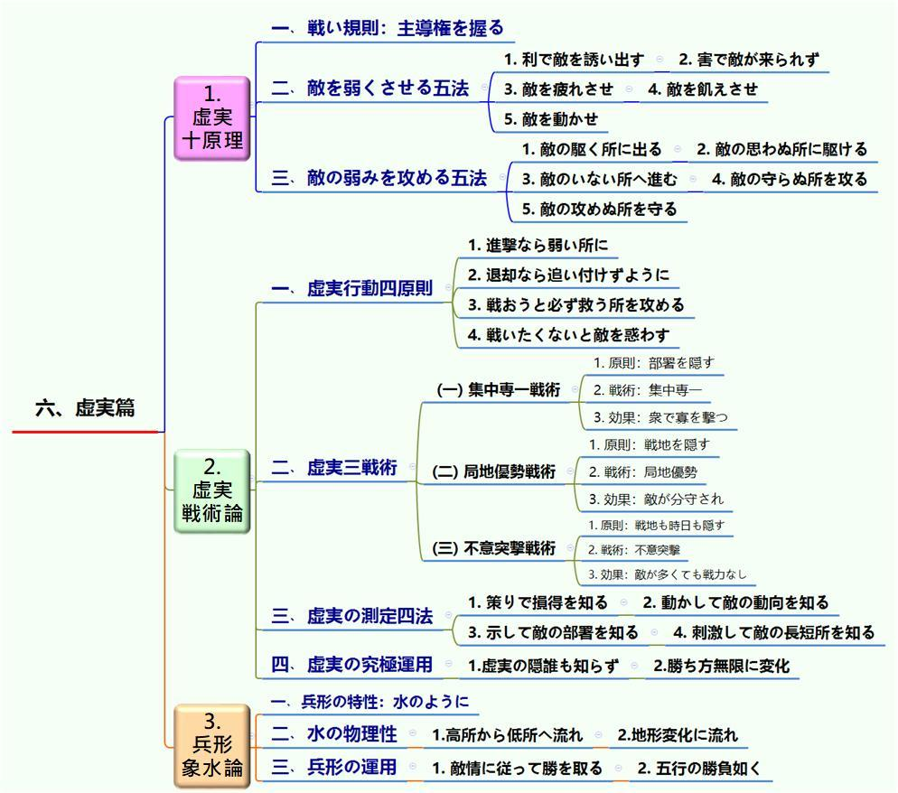
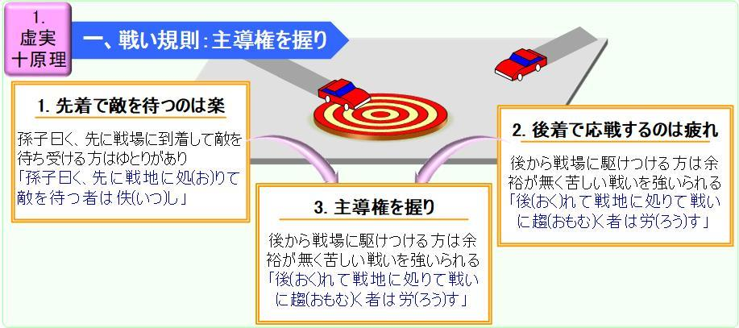
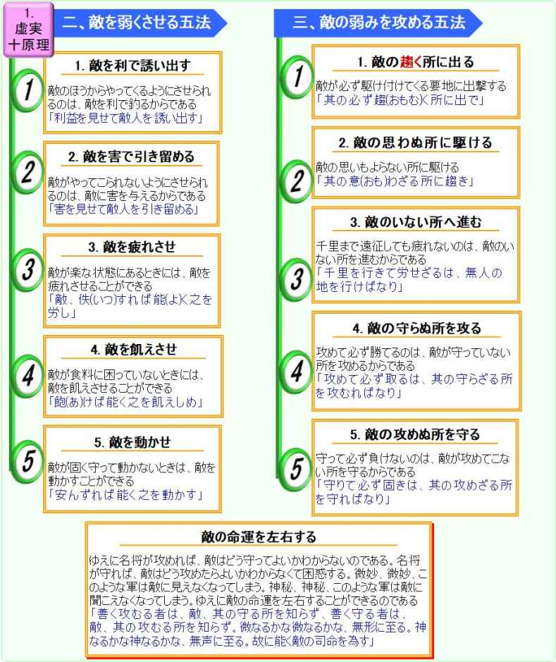
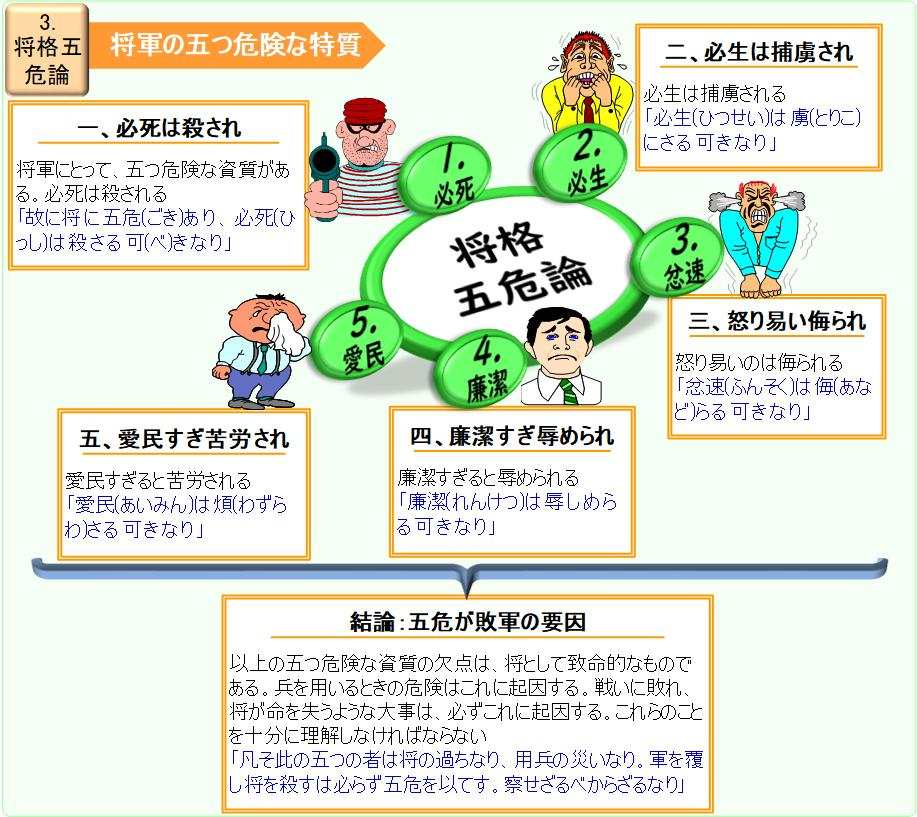
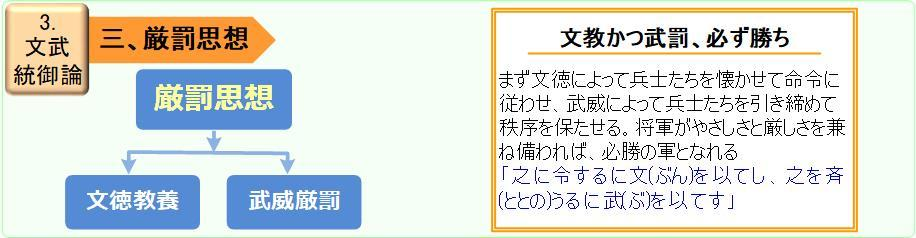
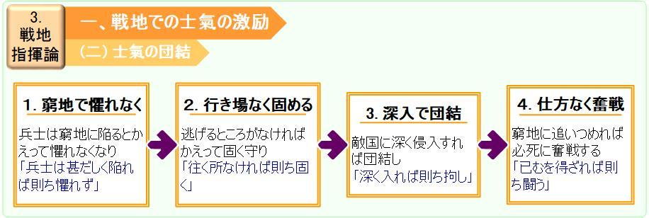
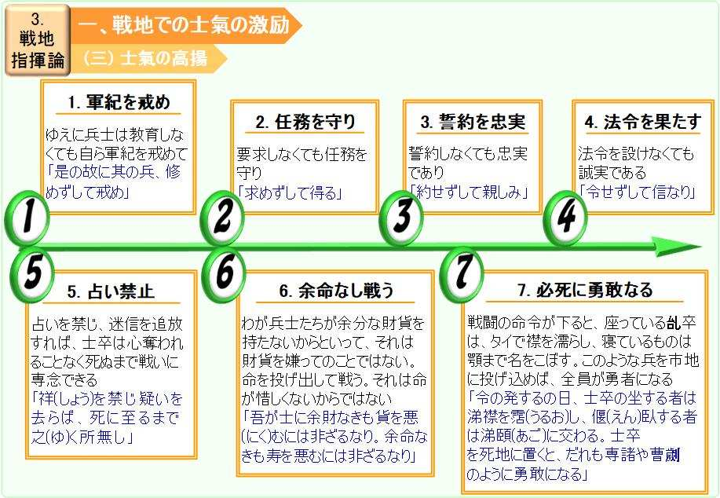

| 《孫子》の全文図解: 台、中両岸で熱論、《孫子》の文脈を図解する | |
| 程国政 | |
| TEIKOKUSEI (2016) | |
著者略歴
程国政、台湾に生まれ。日本交流協会国費留学生、京都大学大学院「応用システム科学」修士。著者は科技業に従業しているが、暇には文史、哲学に関する領域が濃い興味を持ち、ソフトウェア技術を文史の分野に応用するように努めている 。
著作 ： 「 孫子兵 法 策 略 地 図」 （台 湾『 遠流出版社 』）、「 孫子兵 法 戦 略 地 図」（ 中国『当代中国出版社』）、 「 260 Diagrams for Visio2016 」（アメリカ の アマゾン書 店 ）、 「 Diagramming for Sun Tzu The Art of War 」（アメリカ の アマゾン書 店 ）など、
訳書 ： 「パズル数学」（台湾『牛頓出版社』）などがある。
著者 の Emai l： jeffcherng48@gmail.com
書名：《孫子》の全文地図
書名は「全文地図」という名付なのは、《孫子》の戦略戦術、指揮統御などが地図のように、見出すやすい一枚の「全文地図」に書き込む。
「《孫子》の原文地図」 では、訓読訳注と現代訳を文脈図解で説明する。新たなシステム観点から、《孫子》 を 3 6 個の「孫子規則」に解析する。図解と説明の後、日文現代訳、訓読訳と漢原文を並んで対照して、《孫子》を吟味する。
興味のある方は、もっと深く分析したの「《孫子》の戦略地図」に、進んで読みましょう。
本書の構成は、『《孫子》の戦略地図』との本の節約本で、『第一部《孫子》の原文地図』から取り出すのである：
《孫子》十三篇が五つのプロセス構造を分類して、十三篇 に 3 6 個の「孫子規則」を分解する。次に《孫子》十三篇の解読をする。三つのランクがある：
❒ 【篇名解釈】：
篇名の由来と意味を説明する。
❒ 【内容説明】：
まず全体の概要がマインドマップで描き出す。「孫子規則」の単位に基づいて、漢文原文と日文訓読を並列し、文脈の図解を示す。図解により、全篇の中心思想を解読し、重点は文義の貫通である。
❒ 【原文対照】：
篇末に日文現代訳、訓読訳と漢原文を並んで対照する。
目次
《孫子》の原文地図
十三篇は時間順で戦争を企画した。各篇は相互に有機的に繋がって、戦争のプロセスで展開する特徴がある。本部ではシステムの概念を導入し、各篇に「孫子規則」を単元として解読する。従来の解読における「断章取義」現象が解消できる。以下は孫子の論法について説明する：
《孫子》十三篇は戦争のプロセスで、起動、進み、終わりに推移する。システム論から見れば、《孫子》全書は一つのステムとは言え、十三篇は十三個のサブ・システムである。各篇ごとに、また幾つの戦争規則があって、勝算規則、速戦規則、虚実規則、火攻規則などがある。これらは孫子の独創的な規則なので、「孫子規則」と呼び、《孫子》のサブ・サブ・システムである。これら「孫子規則」はシステム論の原則に従って分解したものである。（開放システムの定義とは、「機能が異なる複数の要素が密接に関係しあうことで、全体として多くの機能を発揮する集合体」である。《一般システム論、General System Theory》、Luduig von Bertalanffy,1901-1972）。
一篇から三篇までは「戦争の準備」、四篇から六篇までは「作戦部署」、七篇と八篇は「実戦作業」、九篇から十一篇までは「地形判断」、十二篇と十三篇は「特種作戦」で、プロセス順に展開する。
一、戦争準備：
〈一、始計〉、〈二、作戦〉、〈三、謀攻〉の三篇は、戦前に最高層が興戦の計策と財務の精算を定めることで、戦争の準備を整える。〈一、始計〉は 二 つの孫子規 則 「壱、政治廟算論」と「弐、詭道十四法 」 がある 。 〈二、作戦〉は 「 壱 、 経済速戦 論 」と 「 弐 、 補給戦 略 」 がある 。 〈三、謀攻〉は三つの「孫子規則」、「壱、戦争全勝論」、「弐、兵力戦略」、「参、君主指揮論」がある。
二、作戦部署：
戦前の準備ができたら、続いて作戦ルールを解明す る。 〈四、軍形〉、〈五、兵勢〉、〈六、虚実〉の三篇は、作戦の部署と勢いを造ること、いわゆる「用兵の道」である。〈四、軍形 〉 は二つの「孫子規則」 ： 「 壱 、 國防自衛 論 」、 「 弐 、 先勝部署 論 」 がある 。 〈五、兵勢〉は四つの「孫子規則」がある：「壱、組織編成論」、「弐、兵勢奇正論」、「参、奇襲戦術論」、「肆、兵勢象石論」。〈六、虚実 〉は三 つの「孫子規則」がある ：「壱 、虚実十原理」、 「弐 、虚実戦術論」、 「参 、兵形象水論」。
三、実戦作業：
作戦の部署が既定で、継いで実戦作業に入る。〈七、軍爭〉、〈八、九変〉の二篇は主力会戦の戦況計画を立てる。〈七、軍爭 〉は 二 つの「孫子規則」 ： 「 壱 、 会戦戦 略 」、 「 弐 、 会戦統御 論 」 があ る 。、〈八、九変〉は三つの「孫子規則」：「壱、応変九原則」、「弐、利害弁証法」、「参、将格五危論」がある。
四、地形判断：
実戦作業を計画した後、便利を選んで行軍する。〈九、行軍〉、〈十、地形〉、〈十一、九地〉三篇は、様々な自然地形に駐屯宿営、敵情の偵察を審査してから、戦闘の陣列を配布する。そして国際地縁関係における攻防原則を論じる。〈九、行軍 〉は 三 つの「孫子規則」 ： 「 壱 、 行軍駐屯 論 」、 「 弐 、 敵情偵察 術 」、 「 参 、 文武統御 論 」 があ る 。、〈十、地形〉は二つの「孫子規則」：「壱、戦術地形論」、「弐、将軍指揮論」がある。〈十一、九地〉は五つの「孫子規則」：「壱、戦略九地論」、「弐、攻擊五仕掛」、「参、戦地指揮論」、「肆、九地統御論」、「伍、開戦方法論」がある。
五、特種作戦：
最後の二篇〈十二、火攻〉、〈十三、用間〉は特種作戦を述べる。〈十三、用間〉には戦争の準備に戻って、戦略企画の「予知」概念を提出する。「予知」は「三軍の恃みて動く所なり」の基礎であって、戦争の決断と戦闘行動の前提として依拠する。〈十二、火攻〉は二つの「孫子規則」：「壱、火攻方法論」、「弐、終戦安国論」がある。、〈十三、用間〉は三つの「孫子規則」：「壱、敵情予知論」、「弐、諜報戦略」、「参、諜報戦術」がある。
この五つの段階は、あたかも「常山の蛇」（〈十一、九地〉）のごとく、首尾一貫して連動するプロセスである。「一、戦争準備」の三篇が「首」となり、「二、作戦部署」、「三、実戦作業」、「四、地形判断」の八篇が「中身(胴体)」となり、末に「五、特種作戦」の二篇が「尾」となって、末篇が頭篇と繰り返して繋がる。《孫子》全書は微妙に「首・中身・尾」を呼応し、篇順が戦争のプロセスからなることである。
《孫子》十三篇 を 3 6 個「孫子規則」が分解出来る。まるで３６個輝きの真珠、次々と一連の戦争プロセスを貫いている。 図 1- 1 を示すように：
図 1-1 《孫子》のプロセス構造
【篇名解釈】
「始計」の「始」とは、「最初に」の意味で、「計」とは「計り考える」の意味である。篇名「始計」とは、戦争を始める前に考えるべきことで、三つの意味がある：一は計算、自分と敵の実力を計算する；二は計画、作戦の進程を計画する；三は予測、戦争の勝負を予測する。
〈始計〉という篇名は、現存の最古バージョン 、 220 0 年前の竹簡本『銀雀山竹簡孫子兵法』、によれば、〈計〉だけ名付けた。「始」の字が、恐らく本篇は全書の頭に置いたので、後世の人が追加したものであろう。篇名の出所について、たぶん《管子》 （ 270 0 年前の本）に参考した：「およそ侵攻の道理では、必ず国内で計策を定めてから、兵が国境に出る」。曹操はこの篇名の訳注：「そもそも「計」というのは、将を選んで敵を図る、土地を量って卒を計る、遠いか近いか安全かとは朝廷で計る。」
〈一、始計〉は《孫子》の序論で、次の各篇がこれに分流させ、戦争全局の部署を展開する。
【内容説明】
本篇には二つの「孫子規則」がある：「壱、政治廟算論」、「弐、詭道十四法」。マインドマップでその概要を描き出す。
篇首にまず戦争の第一本質「政治のリスク」から定石に打つ。これが第二篇の篇首に戦争の第二本質「経済のリスク」、第十三篇の篇首に戦争の第三本質「社会のリスク」と、引き続き展開する。
壱、政治廟算論（国家戦略）
初めての「孫子規則」が大戦略の視点から見る。戦争が国家の存続問題で、軍事の単一事象だけでなく、政治、経済、社会で全般的に考察することが要る。
二つのテーマがある：一、戦争第一本質：国家の存亡、 二、国力計量
一、戦爭第一本質：国家の存亡
「兵者、国の大事」という国家の視点で論述が始まる。戦争 は 次の三つ特性があり、
1. 国の大事
国家の命運を決する重大事である。
2. 軍民の死生
国民の生死である。
3. 國家の存亡
国家の存亡である。
こ の三つ の 政治リスクから述べ、失敗すれば、国家の滅亡をもたらすと警告する。
二﹑ 国力計量：
戦争が二カ国の軍事実力を比べるだけでなく、政治、経済、意識形態などにも決 戦 する。ゆえに開戦の前に、君主と臣下は必ず廟堂（祖先祭祀の霊廟、現代の内閣）で三つの国家大事を合議すべきである。一番目は自分の国力を五つ要素 で 計 算 すること、「五事」という。二番目 は 敵、己の総合国力 が 七つ要素で評価すること、「七計」という；三番目は將軍を選ぶことで 、 戦争の可能性を精算する。
(一)計量の基準：五事
五つの国力要素、「道・天・地・将・法」が戦前に考慮すべき事柄である。曹操はこれらを「五事」と呼び、後代に援用する。五事の内容は下記の通り：
1. 道（政治）：
道とは、君主と国民が一致団結するように政治のあり方。国民が「ともに死に、ともに生きよう」という気持ちにさせ、危険があっても恐れなくさせる。君主と国民の間で共同の戦争目標と信念が一致すれば、全民は誠に支える。だから上下に団結する「道」は、国家の精神力であり、「五事」の最優先な位置に占めている。
2. 天（天候）：
天とは、天候や寒暑など、自然の移り変わりである。中国春秋時代（２５００年前）の戦争は、天気に制約されることが多い、厳寒のときに戦えば兵士は凍傷にかかりし、酷暑のときに戦えば兵士は病気にかかる。このように天の時を得るとは言えない。故に戦争がほとんど昼で行った、夜戦は珍しい。尚、当時の迷信時代に、「天」とは神様と相当するが、孫子の「天」とは天気の変化と指し、いかなる迷信の色彩がない。
3. 地（地理）：
地とは、遠いか、近いか、険しいか、なだらかか、広いか、狭いか、危険か、安全かといった地形のことである。（山岳地域など険しい所では、歩兵を用いたほうがいい良いし、草原地域などでは、騎兵を用いたほうがいい。広いところでは、大軍を使ったほうがいいし、狭いところでは、小隊を使ったほうがいい）。
4. 将（将帥）：
将とは、「智、信、仁、勇、厳」 の 人格徳 性 を述べ、以下のように解されている。
(1) 「智」（ 知恵 ）：
｢智｣は、事を見通し、また臨機応変するところの知恵。将帥に知恵があれば、よく謀を巡らせる。
(2) 「信」（ 信義 ）：
｢信｣は、将の部下からの信頼。孔子曰く、｢人にして信なくんば、其の可なるを知らざるなり｣｢民、信なければ立たず｣。将帥に信義があれば、よく節操を守れる。
(3) 「仁」（ 仁愛 ）：
｢仁｣は、部下に対する仁愛・思いやりの心情。将帥に仁愛があれば、よく下の者を労れる。
(4) 「勇」（ 勇気 ）：
｢勇｣は、勇猛果断でよく忍び努めること。将帥に勇気があれば、部下がこれによく従えば敵と戦える。いわゆる「勇将の下に弱卒なし」ということになる。
(5) 「厳」（ 威厳 ）：
｢厳｣は、軍の統率力としての威厳。将帥に威厳があれば、よく兵士の上に指揮できる。
この五つ の 人格特 質 は昔から「将格の五徳」と呼ぶ。「五徳」の優先順について、孫子は「智」を「五徳」の頭に置いて、知恵、謀略は将帥の最優先資質であることと意味する。古人も「孫子は智を尊ぶ、孫臏は勢を重んずる」と言う評判があった。
ドイツの軍事家クラウゼブィッツ （ Carl Phillip Gottfried von Clausewitz:178 0－ 183 1、 著 作 「 戦争論」）は「勇敢」が最優先の武徳であった。これが中国の名兵書《六韜‧竜韜》と同じく、：将格の「勇、智、仁、信、忠」に勇を首位に置いた。
「智」と「勇」の優先順番の議論は、中国の戦国名将呉起の名兵書《呉子》 （ 240 0 年前）で、「勇」は最優位に置くことが不適切と批判した：「普通の人、常に勇を最高に評価するが、勇とは、リーダー特質に数分の一にすぎない。おおよそ猛者は必ず軽く合戦し、利を知らずに合戦すること良くないだ。」リーダーの特質について、知恵使わずに軽率に敵と交戦するものは、挫折されやすいことになる。
5. 法 （法制）：
「法」とは、軍事の制度を指し、「曲制」は組織の編成、「官道」は軍吏の役割、「主用」は軍用の補給、費用などに関わることである。いわゆる軍隊紀律を厳正にし、役割を分担し、糧道を確保し、補給係を監督し、軍需品を準備することを、合法的に行うことが大切である。
(二) 比較の基準：七計
孫子は五事に対して、さらに敵我の優劣を７つの比較条件で、実情を把握することとなる。
1. 君主の賢明さ：
「どちらの君主が人心を把握しているか？」双方の政治措置を比べる。民心を大切にするほうが勝ち、民心に反するほうは負ける。
2. 将帥の能力：
「将帥はどちらが優秀な人材であるか？」双方の将帥が指揮能力を比べる。有能なほうが勝ち、有能でないほうは負ける。
3. 天地環境の状況：
「天の時、地の利はどちらの軍に有利か？」双方の天気変化と地形優勢な条件を比べる。天の時、地の利を得たほうが勝ち、天の時、地の利を失った方は負ける。
4. 法令の厳守：
「法令はどちらがより厳格に守られているか？」双方の紀律を比べる。法令のしっかり行われた方が勝ち、法令が揺るがせにされた方が負ける。
5. 軍備の強さ：
「軍備はどちらが強いか？」「兵」は兵器、「眾」は軍械、合わせて軍備を指す；軍備の強い方が勝ち、軍備の弱い方が負ける。
6. 兵士の訓練：
「兵卒の訓練は、どちらがよりなされているか？」双方の兵卒の戦力及び訓練を比べる。軍隊の戦力の強弱は日頃に訓練して密接な関係がある。それ故に、平日にちゃんと訓練した兵隊が戦時に頼られる。
7. 賞罰の公平性：
「賞罰は、どちらが厳正であるか？」賞罰がきちんと守られている方が勝ち、賞罰のでたらめな方は負ける。
以上の七計を用いて自他の実力を比べ、戦前に勝負が予測できる。七計の後ろに四計：「法令の厳守、軍備の強さ、兵士の訓練、賞罰の公平性」は全部「法」の内容である。教育訓練も「法」の一部なので、嚴明な賞罰で兵士の訓練を実行し、士気を結束し、部隊の行動を整え、戦力を高める。軍隊訓練が戦略レベルで考えるたのは歴史上初めてである。
「五事」、「七計」が共に政治、自然な条件、リーダー、人材、法制などの要因を集約し、理性的に戦局 を 計 量 する。現代用語と言えば 「 リスクアセスメン ト 」である。
(三) 將帥選び：
将帥選びの決策とは、この七計を賛同した将帥を選任する。勝算の見込みがあれば、勢いを造って兵権を与える。
1.計に従えば、将を任ずる：
将帥がこの七計を従えば、必ず勝ちから留任させる。
2.計に無視したら、将を辞める：
将帥がこの七計を従えなければ、必ず敗れから辞めさせる。
3. 勝算があれば勢いを造る：
戦前に敵己の国力を計り、有利なことが分って従えば、将帥に勢いを助け、出陣後の外謀とする。
勢いを造る仕方とは、利益に応じる兵権を与えて、情勢に応じて臨機応変の処置を行うところに生まれる。
弐、詭道十四法（軍事戦略）：
「詭道十四法 」が 「兵は、詭道なり」から十四則の詭道がある。人間は生死一瞬の戦争を直面する時に、不安、恐怖、緊張などの精神症状が出ている。だから戦いには、知恵、実力、心理で敵を欺く必要がある。
一﹑ 知恵の戦い：
この四 則 の詭 道 は敵の知恵を欺く施策である：
1. 弱くを示せ：
能力があるのに能力がないように示せること。
2. 用いざるを示せ：
ある戦法を用いているのに用いていないように示せること。
3. 遠くを示せ：
近づいているのに、遠ざかっているように示せること。
4. 近くを示せ：
遠ざかっているのに、近づいているように示せること。
一則 目の 「 弱くを示 せ 」に例を挙げる。孫子の子孫の孫ぴんには，魏と斉が戦ったとき斉の軍師であって，魏軍から追撃されている風を装って，魏軍から離れていくのだが，自軍の兵士の食事をつくる竈（かまど）の数を日ごとに，わざと減らしていく。 追撃している（と思っている）魏軍は，斉兵の竈の数の減り方から斉の兵が減っていると錯覚し，竈の数が当初の数の数分の１までに減ったとき，自軍の中から精兵を選抜して，一気呵成の追撃に入った。 そして，孫ぴんが設けた罠に陥り，壊滅させられた。敵の将が，竈の数の減り方を見て，考え，行動するであろう，先の先の事象を読み切った，孫ぴんが心理面から敵を欺く戦いの知恵といえる。
二﹑ 実力の戦い：
この四則は敵の実力を応じる施策である：
1. 利益で誘え：
ちょっとした利益をえさにして敵を誘い出し、やってきたところを撃ち破ること。
2. 乱で取れ：
策略をめぐらして敵軍を混乱させ、それに乗じて攻め込んで撃ち破ること。
3. 實に備え：
敵の兵力が充実しているときには、敵が勝てない態勢を整えて敵に備えること。
4. 強さに避け：
敵の兵力が強大なときには、しばらく引き下がり、敵との戦いを避けること。
三﹑ 心理の戦い：
この四則は敵の心理弱点を操る施策である：
1. 怒に撓せ：
敵将を怒らせて、その心を乱し、冷静な判断ができないようにすること。
2. 卑に驕らせ：
腰を低くし、たくさんの贈り物をすることで、相手を驕らせて油断させること。
3. 佚で労せ：
敵が元気なときには、策略を巡らして敵を疲れさせること。
4. 親で離せ：
敵側で上の者と下の者との仲がいい場合、策略をめぐらして両者の離間を謀る。
四﹑ 詭道要旨：不備に攻め、不意に突く
最後の二則は「詭道十四法」のコツである：
1. 不備に攻め：
敵の備えが十分でないところを攻め、敵を撃ち破ること。
2. 不意に突く：
敵の不意を突いて襲撃し、敵を打ち負かすこと。
「不備」とは物理的な守備、「不意」とは精神的な防衛、物理面と精神面から敵の防衛を攻める。この二法は前の十二法の核心原則なので、「不備に攻め、不意に突く」とは、昔から謀略の代名詞となってきた。
「詭道」の最後に結論を下す：「これ兵家の勝は、先に伝えてはいけない。」即ち、「詭道」は勝ち方と言っても、臨機応変の対応が要る。
勝算予測：
戦前に廟堂にこもり、五事、七計を用いて、自他の実力をはかる。その結果、こちらが優勢であれば勝算は高く、こちらが劣勢であれば勝算は低いという。勝算が高ければ勝つが、低ければ負ける。ましてや勝算がない場合、負けて当然である。こういう風に、戦前から勝ち負けがわかる。
「五事、七計」は恒常の戦争原則であるのに、「詭道」は人、事、時、地、物により突発事態に対処する手段である。孫子は「兵者詭道」を主張するが、決して戦争が不義に放す。
古兵書《尉繚子》言う：「兵という者は、凶器なり、戦いということは、逆徳なり、爭いということは、事の末なり。その故に、王者は仁義を持って騒乱者に攻め。」歴史に見ると、何ら強い軍隊でも、不義に行いと最終には失敗に陥りに間違えない。孫子 は 〈始計〉 の 篇首に五事、七計の「道」を論じ、篇末に「詭道」を述べ、本末の道理がその中にある。
【原文対照】
|
現代訳、訓読訳 |
漢原文 |
|
孫子曰く、 戦争は国家の一大事であり、 「 孫子曰く、兵とは国の大事なり、 」 |
「孫子曰：兵者，國之大事，」 |
|
国民の生死、 「 死生の地、 」 |
「死生之地，」 |
|
国家の存亡かかわるものなので、慎重に検討しなければならない。 「 存亡の道、 察せざる 可(べ) からず 。 」 |
「存亡之道，不可不察也。」 |
|
国力を、道・天・地・将・法の五つの条件で測り、敵我の優劣を ７つの条件で 比較検討して実情を把握することが重要である。 「 之(これ) を 経(はか) るに 五事(ごじ) を以てし、之を 校(くら) ぶるに計を以てして、其の情を 索(もと) む。一に 曰(いわ) く道、二に天、三に地、四に将、五に法 。 」 |
「故經之以五，校之以計，而索其情：一曰道，二曰天，三曰地，四曰將，五曰法。」 |
|
道とは、君主と国民の心が一致団結するような政治や教化のあり方。国民を「ともに死に、ともに生きよう」という気持ちにさせ、危険があっても恐れなくさせるものである。 「 道とは民をして 上(かみ) と意を同じくし、之と 与(とも) に死す 可(べ) く、之と与に生く可くして、 畏危(いき) せざらしむるなり 。 」 |
「道者，令民與上同意者也，可與之死，可與之生，民弗詭也。」 |
|
天とは、天候や寒暑など、自然の移り変わりである。 「 天とは陰陽、寒暑、時制なり 。 」 |
「天者，陰陽、寒暑、時制也。」 |
|
地とは、遠いか、近いか、けわしいか、なだらかか、広いか、狭いか、危険か、安全かといった地形のことである。 「 地とは遠近、険易、広狭、死生なり 。 」 |
「地者，高下、遠近、險易、廣狹、死生也。」 |
|
将とは、「智、信、仁、勇、厳」である。 「 将とは、智・信・仁・勇・厳なり 。 」 |
「將者，智、信、仁、勇、嚴也。」 |
|
「法」とは、軍事の制度を指し、「曲制」は組織の編成、「官道」は軍吏の役割、「主用」は軍用の補給、費用などに関わることである。 「 法とは曲制、官道、主用なり 。 」 |
「法者，曲制、官道、主用也。」 |
|
この５つの条件は、将軍であれば誰でも聞いていることであるが、よく理解している者は勝ち、そうでない者は敗れる。 「 凡そ此の五者は、将は聞かざることなきも、これを知る者は勝ち、知らざる者は勝たず。 」 |
「凡此五者，將莫不聞，知之者勝，不知者不勝。」 |
|
よく知るには次の７つの条件を検討して状況を判断する。 「 故に、これを校ぶるにするに計を以てして、其の情を索む、 」 |
「故校之以計，而索其情。」 |
|
どちらの君主が人心を把握しているか？ 「 主(しゅ)孰(いず) れか道ある ? 」 |
「曰：主孰有道？」 |
|
将軍はどちらが優秀な人材であるか？ 「 将(しょう) 孰れか 能(のう) ある ? 」 |
「將孰有能？」 |
|
天の時、地の利はどちらの軍に有利か？ 「 天地(てんち) 孰れか得たる ? 」 |
「天地孰得？」 |
|
法令はどちらがより厳格に守られているか？ 「 法令(ほうれい) 孰れか行わる ? 」 |
「法令孰行？」 |
|
軍備はどちらが強いか？ 「 兵衆(へいしゅう) 孰れか強き ? 」 |
「兵眾孰強？」 |
|
兵卒の訓練は、どちらがよりなされているか？ 「 士卒(しそつ) 孰れか 錬(ね) れたる ? 」 |
「士卒孰練？」 |
|
賞罰は、どちらが厳正であるか？以上の七計を用いて自他の実力を比べ、戦前に勝負が予測できる。 「 賞罰(しょうばつ) 孰れか明らかなる ？ 」 |
「賞罰孰明？」 |
|
以上の七計を用いて自他の実力を比べ、戦前に勝負が予測できる。 「 これを以て勝負を知る。 」 |
「吾以此知勝負矣。」 |
|
将軍がこの七計を従えば、必ず勝つから留任させる。 「 将、 吾が計を聴くときは、これを用うれば必ず勝つ、これを留めん、 」 |
「將聽吾計，用之必勝，留之，」 |
|
将軍が七計を従えなければ、必ず敗れるから去る。 「 将、吾が計を聴かざるときは、 之(これ) を用うれば必ず敗る。之を去らん、 」 |
「將不聽吾計，用之必敗，去之，」 |
|
戦場で計りごとの有利なことが分って従えば、そこで勢いを助け、出陣後の外謀とする。勢いとは、合理的判断の上に立ち、情勢に応じ臨機応変の処置を行うところに生まれる。 「 計、利として以て聴かるれば、乃ちこれが勢を為して、以て其の外を佐(たす)く。勢とは利に因りて権を制するなり。 」 |
「計利以聽，乃為之勢，以佐其外，勢者，因利而制權也。」 |
|
戦いには、敵を欺く駆け引きをする必要がある。 「 兵は 詭道(きどう) なり 、 」 |
「兵者，詭道也，」 |
|
故に、能力があるのに能力がないようにすること。 「 能なるも之に不能を示せ 。 」 |
「故能而示之不能，」 |
|
ある戦法を用いているのに用いていないようにすること。 「 用(もち) うるも之に用いざるを示せ 。 」 |
「用而示之不用，」 |
|
近づいているのに、遠ざかっているように見せかけること。 「 近づくも之に遠ざかるを示し 。 」 |
「近而示之遠，」 |
|
遠ざかっているのに、近づいているように見せかけること。 「 遠ざかるも之に近づくを示せ 。 」 |
「遠而示之近，」 |
|
利益をえさにして敵を誘い出し、、やってきたところを撃ち破ること。 「 利して之を誘え 」 |
「利而誘之，」 |
|
敵軍を混乱させ、それに乗じて攻め込んで撃ち破ること。 「 乱して之を取れ 。 」 |
「亂而取之，」 |
|
敵の兵力が充実しているときには、備えること。 「 実( じ つ) すれば之に備え 。 」 |
「實而備之，」 |
|
敵の兵力が強大なときには、敵との戦いを避けること。 「 強なれば之を避け 。 」 |
「強而避之，」 |
|
敵将を怒らせて、冷静な判断ができないようにすること。 「 怒らせて之を 撓( み だ) せ 。 」 |
「怒而撓之，」 |
|
腰を低くし、相手を驕らせて油断させること。 「 卑( ひ く) うして之を 驕( お ご) らせ 。 」 |
「卑而驕之，」 |
|
敵が元気なときには、策略を巡らして敵を疲れさせること。 「 佚( い つ) すれば之を 労( ろ う) せ 。 」 |
「佚而勞之，」 |
|
敵側で上の者と下の者との仲がいい場合、策略をめぐらして両者の離間を謀る。 「 親しければ之を離せ 。 」 |
「親而離之，」 |
|
敵の備えが十分でないところを攻め、敵を撃ち破ること。 「 其の備え無きを攻め 。 」 |
「攻其無備，」 |
|
敵の不意を突いて襲撃し、敵を打ち負かすこと。これが兵法家の勝ち方であるが、臨機応変の行動が必要である。 「 其の不意に出ず、此れ兵家の 勝( か ち) にして先には伝う 可(べ) からざるなり 。 」 |
「出其不意，此兵家之勝，不可先傳也。」 |
|
戦争を興す前に廟堂にこもり、五事、七計を用いて、自他の実力をはかる。その結果、こちらが優勢であれば勝算は高く、 「 夫れ未だ戦わずして廟算(びょうさん)して勝つ者は、算を得ること多ければなり。 」 |
「夫未戰而廟算勝者，得算多也，」 |
|
こちらが劣勢であれば勝算は低いという。 「 未だ戦わずして廟算して勝たざる者は、算を得ること少なければなり。 」 |
「未戰而廟算不勝者，得算少也，」 |
|
勝算が高ければ勝つが、低ければ負ける。ましてや勝算がない場合、負けて当然である。 「 算多きは勝ち、算少なきは勝たず。況(いわん) や算無きに 於(おい) てをや ！ 」 |
「多算勝，少算不勝，而況無算乎，」 |
|
こういう風に、戦前から勝ち負けがわかる。 「 吾れ此れを以てこれを観るに、勝負見(あら)わる。 」 |
「吾以此觀之，勝負見矣。」 |
【篇名解釈】
「作戦」の「作」とは、作る、製作という動詞で、篇名「作戦」とは、戦争を作ることと意味する。首篇で戦争の勝算が得たら、戦争を起こることになる。故に「作戦」を第二篇とする。
前篇は政治のリスクを述べ、次いで本篇は経済のリスクを論ずる。戦争が巨額な資源を損耗するため、長引けば勝っても財政が枯渇する。故に本篇の軸心は「開源節流」の戦争計画を展開する。
【内容説明】
本篇 は 二 つの孫子規 則 「 壱 、 経済速戦 論 」と 「 弐 、 補給戦 略 」 があ り 、 マインドマップでその概要を描き出す。
本篇は「開源節流」の軸心に基づいて、前者は「節流」、後者は「開源」の計画である。節流のために速戦の手段を使って「経済速戦論」を説い、開源のために「現地で補給調達」の手段を使って「補給戦略」を説いている。
壱、経済速戦論（国家戦略）
篇首にまず経済のリスク、「財政の損耗」を述べる。次に「速戦速決」の思想を引き出して、長期戦を避け、短期に決戦をしたほうがいい。節流の観点から、「速戦」で資源を節約することを論じる。
一﹑ 戦爭第二本質：財政の損耗
「 財政の損 耗 」が戦争の本質であることを説明するのに、まず生き生きと十万大軍、千里遠征の壮絶な景観を描いた。しかし、こんな大軍の出征するために、物力、財力、人力の調達 で 財 政 の重い負担をもたらし、経済崩壊のリスクを警告する。経済面から慎戦の戦争観を提出する。
1. 物力の調達：
戦 車 100 0 輌、輸送 車 100 0 輌の編成規模で、武装 兵 1 0 万人が千里の遠征で糧秣を送る。
2. 財力の調達：
国の内外での軍費、外交費用、武具の膠や漆の購入費、武装兵や馬を養うために、日ごとに千金もの莫大な金額を投じ続ける。
3. 人力の調達：
ようやく十万の大軍が出動できるようになる。
ここで「 帯甲十万 」とは、どんな経済規模なのかと言うと 、 250 0 年前中国同時代の兵書《司馬法》が詳しく説明した：
春秋時代に国家の実力は兵車の数量で量る。いわゆる「萬乘の君」、「千乘の国」と、「百乘の家」と判明している。兵車は二類があり、攻撃戦車の「馳車」と、補給車の「革車」を分けられる。戦車一輌につき、兵士七十五人がつき従う。補給車一台につき、人員二十五人がつき従う。だから戦車一輌につき、百名の兵員がつき従うことになり、戦車千輌の場合、補給車は千台、兵員は十万人となる。
「馳車千駟、革車千乘、帯甲十万」とは、「馳車千駟」は七万五千人、「革車千乘」は二万五千人、合計「帯甲十万」と、当時諸侯レベルの「千乘の国」を指す。
|
編成単位 |
千乘の国 |
|||
|
馳車一駟 75人 |
射弓の兵 |
1人 |
「馳車千駟」 75,000人 |
「帯甲十万」 100,000人 |
|
持矛の兵 |
1人 |
|||
|
運転手 |
1人 |
|||
|
歩卒 |
72人 |
|||
|
革車一乘 25人 |
炊き兵 |
10人 |
「革車千乘」 25,000人 |
|
|
警備兵 |
5人 |
|||
|
飼育兵 |
5人 |
|||
|
労働兵 |
5人 |
|||
二﹑ 速戦速勝論：
(一) 戦爭目標：勝利
戦争は巨大な物資と人力を減損するので、「勝利勝つこと」の目標がはっきり挙げる。
(二) 戦争過程：速く
戦争が速やか に 終わって 、 長引けば、三つの弊害を生じる：
1. 士気挫く：
長引けば士気の低落し、鋭気も挫き、軍隊が疲れになる；城を攻めれば戦力を消耗させる。
2. 財政涸渇：
激しい戦いをくり返せば、国の貨 財 を 枯渇する；兵力を鈍らせ、士気を衰えさせ、戦力を使い果たし、国庫を窮乏させる。
3. 諸侯乗じて起こる：
客観の形勢を変化しつつ、近隣諸候が国力の衰を乗じて起こる、襲いかかりになる。
(三) 戦争原則：拙速
したがって軍隊は拙い動きでも、素早いほうがよいが、長引き巧い勝ちを見たことがない。《孫子》の最先の註釈者である曹操は「拙と雖も、速を以てする有らば、勝を未だ睹ざる者は無きを曰うなり」。そこで、戦争の損害を知り尽くせない者は、戦争の利も知ることができない。
戦争の費用は、預想よりも遥かに上回った。とにかく「速戦速決」の方が無難だという。それ故に長い消耗戦を避けて、「速戦速決」は孫子戦略の一つ特徴となる。
現代戦争には「兵は拙速さ」の戦例はよく実証された。アメリカ が 196 4 年か ら 197 5 年まで参入したベトナム戦争、大量の物資、人力を投入し、人員死傷は痛ましく多い、しかし最後に完敗で撤退した。それ故にアメリカ は 199 1 年の湾岸戦争に、ベトナム戦争の経験を覚えて、「速戦」原則で凄まじい攻撃を突き、予想の成果を取った後、「速決」原則で停戦する。結局米軍も有利な態勢で終戦した。
弐、補給戦略（軍事戦略）
第二「孫子規則」は開源の観点から、「糧を敵に因る」 で 補給 の 資源を開くことになる。二つの原則がある：
一﹑ 敵に補給調達：
遠征軍を率いる智将は、できる限り敵地で食料を調達するように務める。軍隊にあたって、食料の補給は大切なので、全て母国から調達すれば、敵に襲われたり、災害に遭うなどの可能性が高い。だから戦争の中に、徴兵を再び行わず、食料は三度運ばず、軍隊が必要な食料は敵地で調達すれば十分に余裕がでる。
戦争のせいで国家が貧しくなるのは、遠征軍が遠くまで補給物資を輸送するからである。
1. 遠い敵地にいる外征軍に補給物資を輸送することを民衆に強いることは民衆の負荷が高まり生活が困窮する。
2. 補給物資用にモノを調達すると、民衆の生活物資が欠乏する。
3. 商工業者たちは、物資の大量調達による物不足につけ込んで、モノの値段をつり上げる
4. 物価が上がれば、政府は平時よりも高価で軍需物資を調達しなければならず、国庫の負担が増す。
5. 国庫の負担が増すと、国家財政が枯渇してしまい、民衆に対する税金も高くなり、民衆の生活費が削られる。
6. 国からも徴税をきびしく取り立てる、国民の資財の７割がなくなる。国家財政の６割がなくなる。
だから知恵のある将軍は、敵地で食料を調達する。敵地で一鍾（一鍾は四斗六石を相当する、現代重量に換算すれば約 45 0 キロぐらい）調達すれば、自国の２０倍分に相当する。

二﹑ 捕獲で戰力強化：
敵を殺せたくなるのは、敵に対して怒りを抱いているから、敵から物を奪えたくなるのは、賞与されたいからである。故に戦車を１０台捕獲すれば、まず恩賞を与えてから、敵旗を入れ替えて、味方の戦車と混ぜて編入し、さらに、捕虜にした兵士は、よく訓練して味方として乗せる。これで「敵に勝って、益々強くなる」。
「捕獲した者恩賞を与える」に対して、曹操の訳注が：「軍が財無し、兵士は来ない。軍が賞与無し、兵士は行かせない」という賛論がある。捕獲で戦力を強化することが出来るし、後方補給の負担も減軽することが出来る。
これが「戦力を戦争で養い」の補給戦略である。こんな見方は十分の功利主義だが、ダーウィンの《進化論》に「弱肉強食」と言うことに似ている。深刻な人性認識、頂門の一針の見方とも言える。
結論：速勝が大切
結論として、孫子は長期戦はよくない、速戦即決が戦いの要諦である。これがよく知る将軍は、国民の命運を掌り、国家の安全を握っている者である。

本篇の「開源節流」仕方から見れば、孫子が最初の経済と補給理論を系統化した軍事家に違いない。
【原文対照】
|
現代訳、訓読訳 |
漢原文 |
|
孫子曰く、戦いにおいて、快速戦車1000輌、輸送車1000輌、武装兵10万の編成規模で、千里の遠くに遠征させ、糧秣を送る。 「 孫子曰く、凡そ用兵の法は、馳車千駟・革車千乗・帯甲十万、千里にして糧を饋(おく)る。 」 |
「孫子曰：凡用兵之法，馳車千駟，革車千乘，帶甲十萬，千里饋糧，」 |
|
国の内外での軍費、外交費用、武具の膠や漆の購入費、武装兵や馬を養う費用などのために、日ごとに千金もの莫大な金額を投じ続ける。 「 故に内外の費・賓客の用・膠漆の材・車甲の奉、日に千金を費やして。 」 |
「則內外之費，賓客之用，膠漆之材，車甲之奉，日費千金，」 |
|
ようやく十万の軍が出動できるようになる。 「 然る後に十万の師挙がる。 」 |
「然後十萬之師舉矣。」 |
|
戦争の目標が勝つこと 。 「 其の戦いを用(おこ)なう目的は勝利。 」 |
「其用戰也貴勝」 |
|
長引けば士気の低落し、鋭気も挫き、軍隊が疲れになる；城を攻めれば戦力を消耗させる。 「 久しければ則ち兵を鈍(つか)らせ鋭(えい) を 挫(くじ) く 。城を攻むれば則ち力屈(つ)き。 」 |
「久則鈍兵挫銳，攻城則力屈，」 |
|
激しい戦いをくり返せば、国の貨財を枯渇する； 「 久しく師を 暴(さ) らせば則ち国用足らず。 」 |
「久暴師則國用不足，」 |
|
兵力を鈍らせ、士気を衰えさせ、戦力を使い果たし、国庫を窮乏させる。客観の形勢を変化しつつ、近隣諸候が国力の衰を乗じて起こる、襲いかかりになる。 「 兵を鈍らし 鋭(えい) を 挫(くじ) き、力を屈し貨を 弾(つく) せば諸侯その 弊(へい) に乗じて起こる 。智者ありと雖も、その後を善くすること能わず。 」 |
「夫鈍兵挫銳，屈力殫貨，則諸侯乘其弊而起，雖有智者，不能善其後矣，」 |
|
したがって軍隊は拙い動きでも、素早いほうがよく、巧い動きで勝つ長期戦は見たことがない。 「兵は拙速を聞くも、 未(いま) だ 巧(たくみ) の 久(ひさ) しきを 睹(み) ざるなり」 |
「 故兵聞拙速，未睹巧之久也， 」 |
|
そもそも戦争が長期化して国家の利益になったためしはない。ゆえに、戦争の損害を知り尽くせない者は、戦争の利も知ることができない。 「夫(そ)れ兵久しくて国に利するは未だ之有らざるなり。故に尽(ことごと)く用兵の害を知らざ」れば、尽く用兵の利をも知ること能(あた)わざるなり」 |
「夫兵久而國利者，未之有也。故不盡知用兵之害者，則不能盡知用兵之利也。」 |
|
戦争の中に、徴兵を再び行わず、食料は三度と運ばず、 「 善(よ) く兵を用うる者は、 役(えき) は再びは 籍(せき) せず、 糧(かて) は三たびは 載(の) せず 。 」 |
「善用兵者，役不再籍，糧不三載。」 |
|
軍需物資は自国から取るが、食料は敵地で調達する。故に軍隊が必要とする食料が十分に余裕がでる。 「 用を国に取り、糧を敵に 因(よ) る 。故に軍食足るべきなり。 」 |
「取用於國，因糧於敵，故軍食可足也。」 |
|
戦争のせいで国の財政が窮迫するのは、遠征部隊の糧秣を運ぶからだ。軍隊が近づけば物価は高騰する、物価が高騰すれば、国民の財産は窮乏して生活にいきづまる。国からも徴税をきびしく取り立てる、国民の資財の７割がなくなる。国家財政の６割がなくなる。 「 国の師に 貧(ひん) するは遠く 輸(おく) ればなり 。遠師にして遠く輸さば、則ち百姓貧し。近師なるときは貴売すればなり。貴売すれば則ち財竭(つ)く。財竭くれば則ち以て丘役に急にして、力は中原に屈(つ)き用は家に虚しく、百姓の費、十にその七を去る。公家の費、破車罷馬、甲冑弓矢、戟楯矛櫓、丘牛大車、十にその六を去る。 」 |
「國之貧於師者遠輸，遠輸則百姓貧，近師者貴賣，貴賣則百姓財竭，財竭則急於丘役，力屈、財殫，中原內虛於家。百姓之費，十去其七，公家之費：破軍罷馬，甲冑矢弩，戟盾蔽櫓，丘牛大車，十去其六。」 |
|
従って知恵のある将軍は、敵地で食料を調達する。敵地で一鍾（一鍾は四斗六石を相当する、現代重量に換算すれば約 450キロぐらい）調達すれば、自国の２０倍分に相当する。 「 故に智将は務めて敵に食む。敵の一鍾を食むは、吾が二十鍾に当たり、キ(萁)カン(稈)一石は吾が二十石に当たる。 」 |
「 故智將務食於敵。食敵一鍾，當吾二十鍾﹔萁稈一石，當吾二十石。 」 |
|
敵を殺せるのは、敵に対して怒りを抱いているから、敵から物を奪えるのは、賞与されたいからである。 「 故に 敵を殺すものは 怒(いかり) なり 。 敵の利を取るものは 貨(か) なり 。 」 |
「故殺敵者，怒也﹔取敵之利者，貨也。」 |
|
したがって敵と戦って、戦車を１０台捕獲すれば、まず捕獲した者恩賞を与えるよう、 「 故に車戦にして車十乗以上を得れば、其の先ず得たる者を賞し、 」 |
「故車戰，得車十乘已上，賞其先得者，」 |
|
敵旗を入れ替えて、味方の戦車と混ぜて編入し、さらに、捕虜にした兵士は、よく訓練して味方として乗せる。これが「敵に勝って、益々強くなる」という。 「 而してその旌旗を改め、車は雑(まじ)えてこれに乗らしめ、卒は善くしてこれを養わしむ。是れを敵に勝ちて強を益(ま)すと謂う。 」 |
「而更其旌旗，車雜而乘之，卒善而養之，是謂勝敵而益強。」 |
|
戦いは勝つことが大切であるが、勝っても長引いてはいけないのである。速戦即決が戦いの要諦であることを知る将は、国民の生死、国家の安危を担うことのできる者である。 「 故に兵は勝つことを貴ぶ。久しきを貴ばず。故に兵を知るの将は、生民の司命、国家安危の主なり。 」 |
「故兵貴勝不貴久。故知兵之將，民之司命，國家安危之主也。」 |
【篇名解釈】
「謀攻」の「謀」とは、本来の意味はアドバイス、相談という。篇名「謀攻」とは、策謀を用いて敵国に勝ち、敵軍を倒すことに指す。よけいな損害を出さずに天下を取るのであり、敵国を荒廃させたり、敵城を破壊したりのではない。戦争とは、止むを得ない状況のみ行うべきものという精神が表れている。篇順から見ると、第一篇は政治のリスクから戦争を精算する、第二篇は経済のリスクから戦争を準備し、経費、兵糧の調達計画ができた後、本篇に入って、軍事のリスクから、「全勝」の戦争プランを述べる。この三篇はすべて国家の高度から議論するので、皆国家戦略のカテゴリに属する。
【内容説明】
本篇には三つの「孫子規則」はがある：「壱、戦争全勝論」、「弐、兵力戦略」、「参、君主指揮論」。マインドマップでその概要を描き出す。
壱、戦争全勝論（国家戦略）
一﹑ 戦争ビジョン : 戦わずに敵を屈する
武力は衝突を解決する直接な手段だが、その代価が軍民の死傷である。出来れば兵を交えずに勝つことが最もよい。五種の「全勝」境界：「全国、全軍、全旅、全卒、全伍」において、敵国を保全したまま勝つのが最上策で、敵国を撃破して勝つのは次善の策である。続いて敵の小隊を保全した勝つのが上策で、敵の小隊を撃破して勝つのは次策である。したがって、百戦百勝は最善策ではない。「戦わずに敵を屈する」ことこそ、最善の「全勝」策であり、最高の戦争のビジョンとも言える。
孫子が言及する「国、軍、旅、卒、伍」のは 、 250 0 年前中国春秋時代の軍隊編成である。その時代の将校すべて世襲し、しかも文官、武官が一体化し、平日に人民を治理し、戦時は兵隊を率いる。春秋時代の軍隊編成は下表の通り：
|
軍隊編成 |
軍 |
師 |
旅 |
卒 |
兩 |
伍 |
|
指揮官官爵 |
卿 |
中 大夫 |
下 大夫 |
上士 （ 曹長） |
中士 （ 軍曹） |
下士 （ 伍長） |
|
指揮官肩書 |
將 |
帥 |
帥 |
卒長 |
兩 司馬 |
伍長 |
|
戦車の数 |
125 |
25 |
5 |
1 |
0 |
0 |
|
編成人数 |
12500 |
2500 |
500 |
100 |
25 |
5 |
|
管轄単位 |
5 師 |
5旅 |
5卒 |
4 兩 |
5伍 |
1伍 |
二﹑ 戦略目標：
軍事力の運用法は、次の四つの戦略ランクづけられる。
1. 上策：謀を伐つ：
敵の策謀を未然に打ち破るのが、最善の上策である。
2. 中策：交を伐つ：
敵国と友好国との同盟関係を断ち切ることは、次善の中策である。
3. 下策：兵を伐つ：
敵の軍隊を撃ち破るのは、下策である。
4. 最下策：城を攻む：
敵の城を攻めるのは、最悪の下策である。
城攻めが災厄をもたらす。城を攻めると、こちらの被害が大きくなるので、やむをえない場合にのみにしか城を攻めてはいけない。城攻めの機器を整えるのには３ヶ月もかかる。土を盛って城壁を登る路を作るのに３ヶ月もかかる。将は耐えきれなくなって人海戦術で強攻し、軍の三分の一を失い、しかも城を落とすことができない。これが城攻めを忌む理由である。
智将にあっては、敵兵を屈するには必ずしも戦うには限らぬと考えている。敵の城を抜くには必ずしも攻める手だけだけではないと考えている。また敵国をやぶるには長日時を要せぬと考えている。『謀』があるからである。
智将にあっては、敵軍を屈服させたのは必ずしも戦いからではない。敵城を落としたのは必ずしも攻撃からではない。敵国を破たのは長期戦からではない。必ず損害を受けない方法から天下を争い、完全に利益を得ることができる。これが策謀を用いて攻める原則です。自軍は無傷のままに天下の覇権を争い、一兵も失うことなく完全な勝利を手に入れる。これが「謀を伐つ 、 勝を全 う 」、最善 の 戦略目 標 である。
弐、兵力戦略（軍事戦略）
やむをえない場合に、一旦「兵を伐つ、城を攻む」の軍事手段を選べば、必ず敵己の兵力数量に応じて、次の兵力戦略を使う：
一﹑ 強者の兵力戦略
1. 十倍で囲み：
我が軍が敵軍の十倍の兵力であれば、敵軍を包囲する。（敵軍を四方から囲んで、逃げられないようにし 、 わざわざ攻撃するまでもなく降伏を誘うため に ）
2. 五倍で攻め：
我が軍が敵軍の五倍の兵力であれば、敵軍を攻める。 （ 勢力差を活かして 、 いきなり敵軍の前方にあらわれ驚かし、いきなり敵軍の背後をふさぎ、いきなり敵軍の左から突撃し、いきなり敵軍の右から攻撃するという攻め方を用いる）
3. 倍で分かち：
我が軍が敵軍の二倍の兵力であれば、敵軍を分裂させる。 （ 局所的に兵数の優位を得るために 、 二手に分かれ、一隊は敵軍の前方からぶつかり、もう一隊は敵軍の後方をついたり、一隊は敵軍の左から襲いかかり、もう一隊は敵軍の右から一斉にしかけたりする）
二﹑ 均勢の兵力戦略
こちらが敵軍と同等の兵力であれば、敵軍と能く戦う。 （ 戦況を計略で優位なものに持っていくために 、 臨機応変に奇襲や奇策を仕掛けたり戦う）
三﹑ 弱者の兵力戦略
1. 少数で守れ：
こちらが敵軍よりも少なければ退却する。 （ 勝ち目が薄いので 、 暫く引き下がり、敵のスキを伺って弱まったところで襲いかかる）
2. 劣勢で避く：
こちらが敵に力が及ばなければ避ける。 （ 戦いにならないので 、 戦いを避け、チャンスを待つ）。
3. 弱者が強気なら捕虜され：
兵力が小さいくせに、戦いを避けたりしなくて、頑なに敵と戦おうとすれば、大部隊の捕虜に な るだけである。
優勢な時だけ戦う、劣勢な時戦わず、勝ち目がないほど差があれば戦うな。勝算無き時戦えば負けるに違いない ！ この強者、均勢、弱者の兵力戦法は兵数の定量的な対応なので、「軍事戦略」の直接戦略に属する。
参、君主指揮論（軍隊管理）
君主の指揮才能とは、孫子は三段論法で、まず「統率の過ち」、次に「勝利の必要条件」、最後に「敵己認識」、を論述している。
君主の「統率の過ち」には「敗北三過失」がある。
「勝利の必要条件」について、君主は政治から軍事を支えるのは「勝利五条件」がある。
最後に君主の「敵己認識」は三のモードがある。
一﹑ 将は君主の補佐役
君主と将軍がトップと補佐役との関係で、どこまでの権限を与えるのか？孫子は、君主はその将軍が優秀かどうかをあらかじめ判断して、一旦「優秀な将軍」と判断したからには、個々の作戦にいちいち口出ししないのが得策である。
二﹑ 君主の敗北三過失
君主は軍事指揮が敗北されたのは、「軍を縻す、軍を惑う、軍を疑う」の三つ過失からのである。
1. 軍を縻す：軍令を干渉する
君主が進軍するはずはないのに進軍を命令したり、退却するはずはないのに退却を命令したりするなら、軍隊の活動を阻害します。
2. 軍を惑う：軍政を干渉する
君主が軍隊の現状について知らないくせに、将軍と同じように攻守について命令するなら、兵士たちに疑念をいだかせ、よけいな混乱を生じさせることになります。
3. 軍を疑う：軍權を干渉する
君主が軍隊の戦法について知らないくせに、将軍と同じように作戦について指導するなら、兵士たちを惑わせ、よけいな混乱を生じさせることになります。
このようにして全軍を引き留めたり、兵士を迷わせ、疑わせ、惑わせるなら、敵はそのスキに乗じて攻めてくる結果になるだけだと述べ、これを「自ら軍を乱して勝利を失う」と言う、君主 の 軍事指揮 を 介入することを否定している。
特に、孫子は後宮の女官の訓練の話でも分かるように、戦場における将軍の指揮権の確保を重要視している。君主の役割は戦争を興すかどうかの見極め（彼我の比較検討）と、有能な将軍の任命にあるのである。戦場で君主の指揮権は不要で、兵士にとっては命令系統の多重化に繋がるために、有害ですらあると考えている。
三﹑ 君主の勝利五条件
政治のリーダーである君主が戦争に支える仕方は、五つ必要な条件がある。
1. 交戦可否の知恵：
戦うべきか否かのに判断する知恵があれば勝つ。
2. 兵力判明の知識：
敵己の兵力比に応じる戦法の知識があれば勝つ。
3. 上下一心の団結：
上下が一心団結で結束すれば勝つ。
4. 準備万全の心構え：
万全の準備で敵のスキを狙える心構えがあれば勝つ。
5. 能将に干渉せずの度胸：
将軍が有能で、君主が干渉しない度胸があれば勝つ。
君主がこの「五条件」を守れば、勝利を予測できる。特に 「 3 . 上下は一心結束で勝ち」が、〈一、始計〉の「五事」の「道は、君民が団結する」と同じ意味で、「道」は全書を貫く核心価値である。
四﹑ 君主の敵己認識三モード：敵、己とも知り
君主が政治のリーダーとして、軍事に対する認識が三つのモードがある：
1. 敵、己とも知り、百戦も危険に陥らず：
敵の実力を知り、自己の実力も知っていれば、百回の戦闘にも危険な状態にならない。
2. 自己だけ知り、勝ったり負けたり：
敵の実力を知らずに、自己の実力だけを知っていれば、勝ったり負けたりする。
3. 敵と己とも知らず、危険に陥り
敵の実力を知らず、自己の実力も知らなければ、戦うたびに必ず危険に陥る。
第一モードの「敵、己とも知り」とは、君主が軍事認識に対する充分な条件である。世の中によく「敵、己とも知り、百戦百勝」という諺が伝えてきたが、実は孫子の主張は「敵、己とも知り、百戦も危険に陥らず」である。戦争よく知る人は決して戦いが好ましくない。《孫子》全書の論述は慎戦で、絶対に「百戦百勝」という大袈裟の言い方がしない。
【原文対照】
|
現代訳、訓読訳 |
漢原文 |
|
孫子曰く、戦いは国に損害を与えないことを上策とし、敵国を破ることは次策である。 「 孫子曰く、凡そ用兵の法は国を全うするは最上の策、国を破るは下手な策、 」 |
「孫子曰：凡用兵之法，全國為上，破國次之，」 |
|
軍に損害を与えないことを上策とし、敵軍を破ることは次策である。 「 軍を全うするは上手な策、軍を破るは下手な策、 」 |
「全軍為上，破軍次之，」 |
|
旅団に損害を与えないことを上策とし、敵の旅団を破ることは次策である。 「 旅を全うするは上手な策、旅を破るは下手な策、 」 |
「全旅為上，破伍次之破旅次之，」 |
|
卒に損害を与えないことを上策とし、卒を破ることは次策である。 「 敵連を全うするは上手な策、敵連を破るは下手な策、 」 |
「全卒為上，破卒次之，」 |
|
隊伍に損害を与えないことを上策とし、隊伍を破ることは次策である。 「 伍を全うするは上手な策、伍を破るは下手な策、 」 |
「全伍為上，破伍次之，」 |
|
したがって、百戦百勝は最善策ではない。戦わずに敵を屈することこそ、最善策なのである。 「 是の故に百戦百勝は次善の策である、戦わずして人の兵を屈するは、善の善なる者なり。 」 |
「是故百戰百勝，非善之善者也，不戰而屈人之兵，善之善者也 。 」 |
|
故に敵の策謀を未然に打ち破るのが、最善の上策である。 「 故に上策は謀を伐つ、 」 |
「故上兵伐謀，」 |
|
敵国と友好国との同盟関係を断ち切ることは、次善の中策である。 「 其の次は交を伐つ、 」 |
「其次伐交，」 |
|
敵の軍隊を撃ち破るのは、下策である。 「 その次は兵を伐つ、 」 |
「其次伐兵，」 |
|
敵の城を攻めるのは、最悪の下策である。 「 その下は城を攻む、 」 |
「其下攻城，」 |
|
城を攻めると、こちらの被害が大きくなるので、やむをえない場合にのみにする。城攻めの機器を整えるのには３ヶ月もかかる。土を盛って城壁を登る路を作るのに３ヶ月もかかる。将は耐えきれなくなって人海戦術で強攻し、軍の三分の一を失い、しかも城を落とすことができない。これが城攻めを忌む理由である。 「 攻城の法は、已むを得ざるが為めなり。櫓・轒・轀を修め、器械を具うること、三月にして後に成る。踞闉(キョイン)又た三月にして後に已わる。将 其の忿(いきどお)りに勝(た)えずしてこれに蟻附(ぎふ)すれば、士卒の三分の一を殺して而も城の抜けざるは、此れ攻の災いなり。 」 |
「攻城之法為不得已，修櫓轒轀、具器械、三月而後成，距闉，又三月而後已，將不勝其忿，而蟻附之，殺士三分之一，而城不拔者，此攻之災也 。 」 |
|
戦い上手の将は、敵軍を屈服させるが、戦った結果ではない。敵城を落とすが、それは攻めた結果ではない。敵国を破るが、長期戦の結果ではない。必ず損害を受けない方法で天下を争う。したがって自軍に損害を与えることなく、完全に利益を得ることができる。これが策謀を用いて攻める原則である。 「 故に善く兵を用うる者は、人の兵を屈するも而も戦うに非ざるなり。人の城を抜くも而も攻むるに非ざるなり。人の国を毀(やぶ)るも而も久しきに非ざるなり。必らず全きを以て天下に争う。故に兵頓(つか)れずして利全うすべし。此れ謀攻の法なり。 」 |
「故善用兵者，屈人之兵而非戰也，拔人之城而非攻也，破人之國而非久也，必以全爭於天下，故兵不頓，而利可全，此謀攻之法也 。 」 |
|
戦い方は、こちらが敵軍の十倍の兵力であれば、敵軍を包囲する。 「 故に用兵の法は、十なれば則ちこれを囲み。 」 |
「故用兵之法，十則圍之」 |
|
こちらが敵軍の五倍の兵力であれば、敵軍を攻める。 「 五なれば則ちこれを攻め。 」 |
「五則攻之，」 |
|
こちらが敵軍の二倍の兵力であれば、敵軍を分裂させる。 「 倍すれば則ちこれを分かち。 」 |
「倍則分之，」 |
|
こちらが敵軍と同等の兵力であれば、敵軍と能く戦う。 「 敵すれば 能(よ) く之と戦い 。 」 |
「敵則能戰之，」 |
|
こちらが敵軍よりも少なければ退守する。 「 少なければ能く之を守れ 。 」 |
「少則能守之，」 |
|
こちらが敵に力が及ばなければ避ける。 「 若(し) かざれば能く之を避く 。 」 |
「不若則能避之，」 |
|
兵力が小さいくせに、戦いを避けたりしなくて、頑なに敵と戦おうとすれば、大部隊の捕虜になるだけである。 「 小敵 の 堅 は大敵の 擒(とりこ) なり 。 」 |
「故小敵之堅，大敵之擒也 。 」 |
|
将軍とは、国家の補佐役である。その補佐役が主君と親密であれば国家は必ず強くなるが、助け役が主君と隙があるのでは国家は必ず弱くなる。 「 将は国の輔(ほ)なり。輔、周(しゅう)なれば国必ず強く、輔、隙(げき)あれば国必ず弱し。 」 |
「夫將者，國之輔也，輔周則國必強，輔隙則國必弱，」 |
|
君主が軍隊を失敗させるのは、「縻軍、惑軍、疑軍」の三つある。君主が進軍すべきでないことを知らないくせに進軍を命令したり、退却すべきでないことを知らないくせに退却を命令したりするなら、軍隊の活動を阻害する。 「 君の軍に 患(かん) となるものに三つあり 、軍の進むべからざるを知らずに進めと謂い、軍の退くべからざるを知らずに退けと謂う。是れを「軍を縻(び)す」と謂う 。 」 |
「故君之所以患於軍者三，不知軍之不可以進而謂之進，不知軍之不可以退而謂之退，是為縻軍，」 |
|
君主が軍隊の現状について知らないくせに、将軍と同じように攻守について命令するなら、兵士たちに疑念をいだかせ、よけいな混乱を生じさせることになる。 「 三軍の事を知らずに三軍の政を行なうと、軍士惑う 。 」 |
「不知三軍之事，而同三軍之政者，則軍士惑矣，」 |
|
君主が軍隊の戦法について知らないくせに、将軍と同じように作戦について指導するなら、兵士たちを惑わせ、よけいな混乱を生じさせることになる。 「 三軍の権を知らずに三軍の任を行なうと、軍士疑う 。 」 |
「不知三軍之權，而同三軍之任，則軍士疑矣，」 |
|
このようにして全軍を疑わせ、惑わせるなら、敵はそのスキに乗じて攻めてきます。これを迎撃するのは、かなり難しいでしょう。これを「自ら軍を乱して勝利を失う」と言う。 「 三軍 既(すで) に 惑(まど) い 且(か) つ疑えば、諸侯の 難(なん) 至る。是れ軍を乱して勝を引くと謂う。 」 |
「三軍既惑且疑，則諸侯之難至矣，是謂亂軍引勝 。 」 |
|
君主が次の五つの条件を守れば、勝利を予測できる。戦うべきか否かの判断する知恵あれば勝つ。 「 故に勝を知るに五あり：戦うべきと戦うべからざるとを知る者は勝つ 、 」 |
「故知勝有五，知可以戰與不可以戰者勝，」 |
|
彼我の兵力比に応じた戦法を使う知識あれば勝つ。 「 衆寡(しゅうか) の用を識る者は勝つ、 」 |
「識眾寡之用者勝，」 |
|
上下が心を一つにしている結束あれば勝つ。 「 上下の欲を同じうする者は勝つ 、 」 |
「 上下同欲者勝， 」 |
|
万全の準備を整えて敵のスキを狙える構えあれば勝つ。 「 虞(ぐ) を以て 不虞(ふぐ) を待つ者は勝つ、 」 |
「以虞待不虞者勝，」 |
|
将軍が有能であり、君主が干渉しない度胸あれば勝つ。この５つの条件は勝ちを知っている者にある。 「 将の 能(のう) にして君の 御(ぎょ) せざる者は勝つ。 この五者は勝を知るの道なり 。 」 |
「將能而君不御者勝，此五者，知勝之道也 。 」 |
|
故に、敵の実情も知って、自己の実情も知っていれば、、百回の戦闘にも危険な状態にならない。 「 故に曰く、彼(かれ) を知り 己(おのれ) を知れば、百戦して 殆(あや) うからず 、 」 |
「 故曰：知彼知己者，百戰不殆， 」 |
|
敵の実情を知らずに、自己の実情だけを知っていれば、勝ったり負けたりする。 「 彼れを知らずして己を知れば、一勝一負す、 」 |
「 不知彼而知己，一勝一負， 」 |
|
敵の実情も知らず、自己の実情も知らなければ、戦うたびに必ず危険に陥る。 「 彼れを知らず己を知らざれば、戦う毎(ごと)に必らず殆うし 。 」 |
「不知彼不知己，每戰必殆 。 」 |
【篇名解釈】
「軍形」の「形」とは、目に見える形である。篇名「軍形」とは、戦ったり、守ったりする攻守の態勢を言う。前篇では攻める方から「全勝」の理想像を述べ、本篇は守る方から「自保」の図像が描いた。戦争は「全勝」を追求する際に、不敗の態勢を構築しなければならない。だから本篇が〈三、謀攻〉の後に国家戦略のレベルで並列する。
【内容説明】
本篇は二つの「孫子規則」がある ： 「 壱 、 國防自衛 論 」、 「 弐 、 先勝部署 論 」 。 マインドマップでその概要を描き出す。
壱、國防自衛論（国家戦略）
「國防自衛論」では、二つの弁証を軸にする。
一番目は「自衛の弁証」では、「勝ち、勝てない」、「敵、己」、「攻、守」の弁証を展開する。
二番目は「勝利の弁証」では、「勝、敗」の弁証を展開する。「不敗の地に立つ」を中心に、たとえ自分が戦争を起こさなくても、不敗の自衛態勢を築くべきのが本篇の論法である。「不敗の地に立つ」 という自衛思想は、國防自衛の最高方針である。
一﹑ 自衛の弁証：
1. 勝てない態勢を築く：
昔の名将は、予め敵の勝てない態勢を築き、そして敵の隙を待ちうける。
2. 勝てない態勢は自ら：
敵の勝てない態勢を築くことは、自分のやり方次第である。敵に勝ち態勢ができるかどうかは、敵のやり方次第である。
3. 必勝の態勢はない：
ゆえに名将は、こちらに勝てない態勢を築くことは自分の努力からが、敵に必勝の態勢を作らせない。
結論：勝利の予知はできるが必勝と言えず：
そこで、勝利を予知することはできても、必ずしも実現することはならない。
4. 勝てないのは守備から、勝てるのは攻撃から：
敵が自軍に勝てない態勢とは守備形式であり、自軍が敵に勝てる態勢とは攻撃形式である。
5. 守備で余裕あり、攻撃で不足する：
守備形式を取れば戦力の余裕があり、攻撃形式を取れば戦力が不足する。
6. うまく守備は地奥に蔵れ、うまく攻撃は天上から動く：
古代の上手な守備者は、大地の奥底深く潜伏し、上手な攻撃者は、天空高くから攻める。
結論：自衛と共に、勝利を保つ：
こうすれば敵の攻撃から保全し、自衛と共に敵を勝つことができる。
「自衛と共に、全勝を保つ」という「全勝」の概念は、十三篇の中に十数箇所で論じた。それが「兵 頓( つ か) れずして利全うすべし」 （〈三、謀攻〉）、「天を知り地を知れば、勝、及ち全かる可し」 （〈十、地形〉）、「国を安んじ軍を全うするの道なり」 （〈十二、火攻〉）などある。そもそも孫子の「全勝」は、孔子哲学の「仁」、老子哲学の「道」と同じ、孫子哲学の核心概念である。
二﹑ 勝利の弁証：
(一) 世間論勝：
勝利の見方について、誰もが勝利を知ることができるような戦いは、善の善であるものとは言えない。世の人が善い戦いであると評価した「戦勝」も、正しい見方とは言えない。
敵の意図を挫いて主導権を握っていれば、勝利というものは「細い毛の持ち上げ力」や「太陽や月が見える目」、「雷の音が聞ける耳」ように、勝ちやすい状況をつくり無理なく勝つ。
(二) 善戦者の勝ち方：
名将は 勝っても優れた名誉がない、勇ましい功績もないが、敵に勝つことは間違いない。間違いないとは、戦いに必ず勝ちのである。なぜなら敗れた敵と戦って勝つからである。
(三) 勝者のあり方
名将は不敗の立場に立って、敵の敗北の隙を逃さないのである。勝利の軍は、先に勝利の見通しがあったから戦う。敗北の軍は、まず戦ってから、勝利を追い求めるのである。

弐、先勝部署論（軍事戦略）
勝負 の 部 署 は戦前にもう決められた。そこで戦略的に勝 ち 部 署 を工夫する。軍事実力は、四類の部署から生み出す：政治部署、参謀部署、兵力部署、陣形部署がある。
戦争の上手なリーダーは徳の高い政治を修めて、軍制を厳格に守る、勝敗を操ることができる。
二﹑ 参謀部署：計量で勝つ
軍事実力はは次の五つから生み出す ： 「度」：国土の広さ。「量」：物産の量。「数」：人口數量。「称」：軍事実力。「勝」：戦争勝負。
実力量 り の順序として、次の五つの段階で部署を計量する。
1. 地形から国土を生じる：
戦場の地形に応じて、どの程度の陣地を築くべきかが決まってみる。
2. 国土から物産を生じる：
築かれる陣地の程度に応じて、どれだけの数量の物資を投入すべきが決まってくる。
3. 物産から人口を生じる：
投入される物量に応じて、どれだけの規模の軍隊を派遣すべきかが決まってくる。
4. 人口から戦力を生じる：
派遣される軍隊の規模に応じて、こちらと敵では、どちらが優勢で、どちらが劣勢なのかが決まってくる。
5. 戦力から戦争勝負を生じる：
自他の優劣がわかれば、こちらの勝算はどれくらいであるのかが決まってくる。
三﹑ 兵力部署：戦力で勝つ
勝兵は、 鎰 (2 4 両の重い 物) をもって、 銖 (2 4 分の１両の軽い 物) の兵力と戦うようなものであり、敗兵は銖をもって、鎰の兵力と戦うようなものである。兵力部署では、孫子は「鎰で銖を称する」を比喩した。この比喩は春秋時代の度量衡を依拠して、一鎰 は 2 4 両、一両 は 2 4 銖、ですから一鎰が 576 銖に相当する。
勝ち軍は、重い錘を軽い錘と比べるように絶対な優勢となり、それによって圧勝 の 戦 力 をもたらす。つまり、優 勢 戦 力 比べるまでもなく、よく準備しているほうが、準備しないほうよりも強いという。
四﹑ 陣形部署：形態で勝つ
陣形部署に、勝ち方の戦いかたは、たっぷりと貯めた水を、一気に深い谷の底へと流すように 、 陣 形 というものである。それこそが勝利に至 る 形 態 なのである。
【原文対照】
|
現代訳、訓読訳 |
漢原文 |
|
孫子曰く、昔の名将は、予め敵の勝てない態勢を築き、そうして敵に勝つ隙を待ちうける。 「 孫子曰く、昔の善(よ) く戦う者は、先ず勝つ 可(べ) からざるを 為(な) し、以て敵の勝つ可きを待つ 、 」 |
「孫子曰：昔之善戰者，先為不可勝，以待敵之可勝，」 |
|
敵の勝てない態勢を築くことは、自分のやり方次第である。敵に勝ち態勢ができるかどうかは、敵のやり方次第である。 「 勝つべからざるは己れに在るも、勝つべきは敵に在り 。 」 |
「不可勝在己，可勝在敵」 |
|
ゆえに名将は、こちらに勝てない態勢を築くことは自分の努力によるが、敵に勝ち態勢を作らせることはできない。 「 故に善く戦う者は、能く勝つべからざるを為すも、敵をして必ず勝つべからしむること能わず 」 |
「故善戰者，能為不可勝，不能使敵之必可勝」 |
|
そこで、勝利を予知することはできても、必ずしも実現することはならない。 「 故に曰わく、「勝は知るべし、而して為すべからざる」と 」 |
「故曰：勝可知，而不可為，」 |
|
敵が自軍に勝てない態勢とは守備形式であり、自軍が敵に勝ち態勢とは攻撃形式である。 「 勝つべからざる者は守なり。勝つべき者は攻なり 」 |
「不可勝者，守也，可勝者，攻也，」 |
|
守備形式を取れば戦力の余裕があり、攻撃形式を取れば戦力が不足する。 「 守らば則ち余り有りて、攻むれば則ち足らず、 」 |
「守則有餘，攻則不足，」 |
|
古代の上手な守備者は、大地の奥底深く潜伏し、上手な攻撃者は、天空高く機動した。 「 善(よ) く守る者は 九地(きゅうち) の下に 蔵(かく) れ、善く攻むる者は 九天(きゅうてん) の上に動く 、 」 |
「善守者，藏於九地之下，善攻者，動於九天之上 。 」 |
|
こうすれば敵の攻撃から保全し、自衛と共によく敵に勝つことができる。 「 故に能く自ら保ちて勝を全うするなり 。 」 |
「故能自保而全勝也 。 」 |
|
勝利を読みとるのに、一般の人々の程度では、最高に優れたものではない。素人目に「戦勝」は激戦勝ちだという見方が、正しい勝利ではないというのである。 「 勝を見ること 衆人(しゅうじん) の知る所に過ぎざるは、善 (ぜん) の善なるものに 非(あら) ざるなり。戦い勝ちて、天下、 善 なりと 曰(い) うは、善の善なるものに 非(あら) ざるなり。 」 |
「見勝不過眾人之所知，非善之善者也，戰勝而天下曰善，非善之善者也。」 |
|
「細い毛の持ち上げ力」や「太陽や月が見える目」、「雷の音が聞ける耳」ような当たり前のことで、そういう状況が正しい勝利のである。 「 故に秋毫を挙ぐるは多力と為さず。日月を見るは明目と為さず。雷霆を聞くは聡耳と為さず 。 」 |
「故舉秋毫不為多力，見日月不為明目，聞雷霆不為聰耳，」 |
|
優秀な将軍が勝っても知恵優れた名誉もなく、武勇優れた功績もない。 「 古えの所謂善く戦う者は、勝ち易きに勝つ者なり。善(よ) く戦う者は勝ち易きに勝つ者なり、故に善く戦う者の勝つや 智名(ちめい) も無く 勇功(ゆうこう) も無し。 」 |
「古之所謂善戰者，勝於易勝者也，故善戰之勝也，無智名，無勇功 。 」 |
|
敵と戦って勝つことは間違いない。間違いないとは、戦えば必ず勝つということである。なぜならすでに敗れている敵と戦って勝つからである。 「 故に其の戦い勝ちてたがわず。たがわざる者は、其の勝を措く所、已に敗るる者に勝てばなり。 」 |
「其戰勝不忒，不忒者，其所措必勝，勝已敗者也 。 」 |
|
名将は不敗の立場に立って、敵の敗北の機会を逃さないのである。 「 善(よ) く戦う者は、 不敗(ふはい) の地に立ち、敵の敗を失わざるなり。 」 |
「故善戰者，立於不敗之地，而不失敵之敗也。」 |
|
勝利の軍は、まず勝利の見通しをつけてから戦い、敗北の軍は、まず戦闘を突っ込んでから、勝利を追い求めるのである。 「 勝兵は先ず勝ちて 而(しか) る後に戦いを求め、敗兵は先ず戦いて而る後に勝ちを求む 。 」 |
「是故勝兵先勝而後求戰，敗兵先戰而後求勝 。 」 |
|
戦争の上手なリーダーは徳の高い政治を修めて、軍制を厳格に守る、勝敗を操ることができる。 「 善(よ) く兵を用いる者は、道を修めて法を保つ 。故に能く勝敗の政を為す。 」 |
「善用兵者，修道而保法，故能為勝敗之政 。 」 |
|
兵法には敵と我の戦力を評価する手順があり、一に度を曰く、二に量を曰く、三に数を曰く、四に称を曰く、五に勝を曰く。 「 兵法は、一に 曰(いわ) く 度(ど)、 二に曰く 量(りょう)、 三に曰く 数(すう)、 四に曰く 称(しょう)、 五に曰く 勝(しょう)、 」 |
「兵法：一曰度，二曰量，三曰數，四曰稱，五曰勝，」 |
|
地形から国の土地を生じる。国土から物産を生じる。物産から人口を生じる。人口から戦力を生じる。戦力から戦爭勝負を生じる。 「 地は度を生じ、度は量を生じ、量は数を生じ、数は称を生じ、称は勝を生ず。 」 |
「地生度，度生量，量生數，數生稱，稱生勝，」 |
|
勝兵は、鎰(24両の重い物)をもって銖(24分の１両の軽い物)の兵力と戦うようなものであり、敗兵は銖をもって鎰の兵力と戦うようなものである。 「 故に勝兵(しょうへい) は 鎰(いつ) をもって 銖(しゅ) を 称(はか) るが 若(ごと) し。 」 |
「故勝兵若以鎰稱銖，敗兵若以銖稱鎰，」 |
|
彼我の勝敗を計量する者は、人民を戦闘させるにあたり、満々とたたえた水を千仭の谷底へ決壊さするように仕組む。それこそが勝利に至る態勢なのである。 「 勝者の民を戦わしむるや、積水(せきすい) を 千仭(せんじん) の 谿(たに) に決するが 若(ごと) くなるは形なり。 」 |
「勝者之戰民也，若決積水於千仞之谿者，形也 。 」 |
【篇名解釈】
「兵勢」の「勢」とは、水勢、火勢などの能量を表す威勢という。篇名「兵勢」とは、敵を撃ち破る勢いである。前篇の「軍形」は、軍隊の静的な能量の貯蓄態勢を論ずるのに対して、本篇の「兵勢」はその動的な能量の散発効果を論ずる。
【内容説明】
本篇には四つの「孫子規則」がある：「壱、組織編成論」、「弐、兵勢奇正論」、「参、奇襲戦術論」、「肆、兵勢象石論」。マインドマップでその概要を描き出す。
壱、組織編成論（軍隊管理）
軍隊の組織と統率のは、将軍にとって必要な技術なのである。情報伝達が軍全体の隅々まで速やかに行えるか、軍隊の組織編成は伝達が軍全体の隅々まで速やかに行えるか、軍全体を一つの有機体のように仕上げる技術は、戦争の勝敗を決められる重要なものである。
軍隊の組織は四つのカテゴリがある：「分数」、「形名」は定式の組織編成で；「奇正」、「虚実」は機動的な戦術編成である。
一﹑ 定式の組織：
1. 組織編成：
大軍をあたかも小隊の扱いように指揮行動させ得るのは、部隊の編成による。軍隊の組織編成には、命令伝達が速やかに全軍の行動を統一させる。
2. 指揮系統：
大軍をあたかも小隊のように思い通りに動かせるのは、指揮の系統による。軍隊の指揮系統には、情報伝達が効率的に全軍の意識を統一させる。
二、戦術の編成：
1. 敗れず戦術：奇正
三軍の兵士（一軍 は1 万二千五百人で、三軍で三万七千五百人に当たる）が、敵の攻撃に絶対敗れないのは、奇策と正攻法とをうまく使いこなせるから。
2. 必勝戦術：虚実
敵に攻撃を仕掛けて、石に卵をぶつけように簡単に勝てるのは、充実した軍隊が敵の弱いところを攻めるから。
弐、兵勢奇正論（軍事戦略）
一﹑ 戦い規則：正法で対戦、奇策で勝ち
戦 い の規則は、正法で敵軍と対戦し、奇策で敵に勝ちのである。奇策はうまく行かせるのは、戦いの勢いによって決まる。だから本篇 は 奇策の勢いを営むことを述べる。
二﹑ 奇策の本質：
1. 無限性：
うまく奇策を使いこなせる人は、天地のように極りがないし、川海のように尽くしがない。
2. 循環性：
昼夜の繰り返しのように終わってもまた始まる。四季の移り変わりのように死んでもまた生まれる。
3. 奇正の変化は窮まず：
音は五音（宮・商・角・徴・羽）、色は五色（青・赤・黄・白・黒）、味は五味（酸・苦・甘・辛・塩辛）にすぎないが、組み合わせれば無限の音、色、味を出せる。これらと同じように、奇策と正攻法も、組み合わせることによっていろいろな戦い方を無限に生み出せる。
いわゆる「五声」、「五色」、「五味」が音声、味、色に対する分類である 。 240 0 年前の中国の史書《左伝》に載った：「日は六の気 （陰、陽、風、雨、晦、明るい）がある、五の味 （木の味は酸っぱい、火の味は苦い、土の味は甘、金味は辛、水の味は塩辛い）、五色 （酸っぱい色は青、苦い色は赤い、甘色は黄、辛の色は白さ、塩辛い色は黒い）、五声（青声は角、赤い声は徵、黃聲は宮、白さの声は商、黒い声は羽）を生むものである」。 「五声」、「五色」、「五味」には下記の通り：
|
|
木 |
火 |
土 |
金 |
水 |
|
五声 |
角 |
徵 |
宮 |
商 |
羽 |
|
五色 |
青 |
赤い |
黄 |
白さ |
黒い |
|
五味 |
酸っぱさ |
苦さ |
甘さ |
辛さ |
塩辛さ |
中国の古代の自然哲学である五行説によれば、万物は木・火・土・金・水の五つの元素（五行）からなり、この五つの元素が発生し、消滅し、流転しつつ、互いに 影響を与え合うことによって万物が変化し、循環するという。
三﹑ 奇策の操る方：
奇策の運用原則について、「勢い險しい」と「節短い」を提出した。「勢」は動き の パワ ー 、「節」は動きのタイミングである。
1. 激流のような勢い：
水は最柔なものなのに、激流となれば巨岩をも転がすのは、勢い（パワー）である。
2. 鷹の 襲い ような節：
鷹の襲いで獲物の骨を打ち砕くに至るのが、節（タイミング）である。
3. 奇策の勢いは険しく、節は短く：
戦上手の名将は、その勢いは険しく、その節は短い。勢いは弓をいっぱいに引き張るように、節は矢を瞬間に放つようにする。
理想的攻撃方法は激流のような勢いと、鷹のような襲撃である。これは勢いの原理を示している。戦闘に突入する勢い（パワー）が限度いっぱいまで蓄積されて強く、その蓄積した力を放出する節（タイミング）は瞬間的である。より強い勢いを蓄積し、最適なタイミングで一瞬の間に放出すること、その組み合わせが重要なのである。
参、奇襲戦術論（戦術戦技）
一﹑ 奇襲を造る原則：
定式の組織編成や指揮系統が徹底している軍隊は、まるで糸が絡み合うように、両軍が乱戦状態になっても、組織編成を保たねばならない。混戦状態になっても、指揮系統を守らねばならない。名将は激しい戦闘においても、組織や指揮が乱れない統制が取れることが肝心である。それ に 奇襲 の 勢いを営造することができる。
二﹑ 造勢ステップ：
勢いを造るステップは三つある：
1. 混乱は整治から生まれる。
2. 憶病は勇敢から生まれる。
3. 柔弱は剛強から生まれる。
混乱は整治から、臆病は勇敢から、柔弱は剛強から生まれるともいえ、どちらの形をとるかは軍の勢によるものである。
正から奇へ変化のに、勢いを造る規則は三つある：
４. 治乱は編成より：
乱れるか治まるかは、組織の編成（分数）の良否によって決まる。
５. 勇怯は勢いより：
憶病になるか勇敢になるかは、勢いの有無によって決まる。
６. 強弱は指揮より：
弱くなるか強くなるかは、指揮系統（形名）の効率によって決まる。
三﹑ 奇襲戦術応用：
敵を誘っ て 奇襲 の 戦術は三つ、「形で誘い戦術、怯で誘い戦術、利で誘い戦術」がある。
三つの構面：「原則、戦術、効果」から解析する。次の表を示すように：
|
奇襲戦術 |
1.形で誘い戦術 |
2.怯で誘い戦術 |
3.利で誘い戦術 |
|
原則 |
騙すような形を示す |
スキを見せる |
利を見せて誘い出し |
|
戦術 |
形で誘い |
怯で誘い |
利で誘い |
|
効果 |
敵は追随してくる |
敵は取りに来る |
敵を待ち構えする |
1. 形で誘い戦術：
理想的な敵の動かし方とは、敵に騙すような形を示す次第で、敵はそれに追随してくる。
2. 怯で誘い戦術：
敵にこちらが利益を示せば、敵は必ずこれを取ろうとする。
3. 利で誘い戦術：
敵に利を見せて誘い出し、罠を仕掛けて部隊が敵を待ち構える。
４. 勢を求めて人を責めず：
戦い上手の将軍は、全体の勢いを重視する、個人の勇気には頼らず。
５. 人を選び勢に従わせ：
適任者を選んで適所に配置して、軍全体の勢いに従わせるようにする。
まとめて、軍の勢いが組織で営造し、個人に依存せず、適材適所で勢いの動き形に乗せられることである。
肆、兵勢象石論（軍隊管理）
一﹑ 兵勢の特性：木石のように
軍の勢いに従わせると、木石を転落させるように自然であり、軽快である。
二﹑ 木石の物理性
木や石の物理性としては、平地に安定すれば静止し、急坂に傾けば転がり、方形にすれば止まり、円形にすれば転がる。兵士もこれと同じで、その置かれている状況に応じて、自ずと勢いがついたり、つかなかったりするから、兵士を置くようにすれば、自ずと勢いがつくことになる。
三﹑ 兵勢の運用
戦い上手の将軍が、軍を戦闘させる勢いが動かすのは、円石を高い山から転がすように勢いの活用をするから。
本篇の中心論述はまとめると、戦いは個人ではなく、集団で勢いを発揮させる事を説いている。
【原文対照】
|
現代訳、訓読訳 |
漢原文 |
|
孫子曰く、大軍をあたかも小隊のようにすんなりと纏められるのは、組織の編成による。 「 孫子曰く、衆を治(おさ)むること寡(か)を治むるが如(ごと)くなるは、分数(ぶんすう)是(こ)れなり 、 」 |
「孫子曰：凡治眾如治寡，分數是也，」 |
|
大軍をあたかも小隊のように思い通りに動かせるのは、指揮系統による。 「 衆を 闘(たたか) わしむること 寡(か) を闘わしむるが 如(ごと) くなるは、 形名(けいめい)是(こ) れなり、 」 |
「鬥眾如鬥寡，形名是也，」 |
|
全軍の兵士が敵の攻撃に負けないのは、奇策と正攻法とをうまく使いこなせるから。 「 三軍(さんぐん) の衆、必ず敵を受けて 敗(やぶ) るること無からしむ 可(べ) き者は、 奇正(きせい)是(こ) れなり 、 」 |
「三軍之眾，可使必受敵而無敗者，奇正是也，」 |
|
敵に攻撃を仕掛けて、石を投げ付けて卵に割るように簡単に勝てるのは、充実した力で敵の弱いところを攻めるから。 「 兵の加わる所、碬(か)をもって卵に投ずるが如(ごと)くするは、虚実是(こ)れなり。 」 |
「兵之所加，如以碫投卵者，虛實是也 。 」 |
|
戦いにおいては、正法で敵軍と対戦し、奇策で敵に勝ちのである。 「 凡(およ) そ戦いは正を以て合い、奇を以て勝つ 。 」 |
「凡戰者，以正合，以奇勝 。 」 |
|
うまく奇策を使いこなせる人は、天地のように極りがないし、川海のように尽くしがない。 「 故に善く奇を出だす者は、窮まり無きこと天地の如く、竭きざること江河の如し、 」 |
「故善出奇者，無窮如天地，不竭如江河，」 |
|
昼夜の繰り返しのように終わってもまた始まる。四季の移り変わりのように死んでもまた生まれる。 「 終わりて復た始まるは、日月是れこれなり。死して更(こもごも)生ずるは四時これなり。 」 |
「終而復始，日月是也；死而復生，四時是也，」 |
|
音は五音（宮・商・角・徴・羽）、色は五色（青・赤・黄・白・黒）、味は五味（辛・酸・・苦・甘）にすぎないが、組み合わせれば無限の音、色、味を出せる。これらと同じように、奇策と正攻法も、組み合わせることによっていろいろな戦い方を無限に生み出せる。 「 声は五に過ぎざるも、五声の変は勝(あ)げて聴くべからず。色は五に過ぎざるも、五色の変は勝げて観るべからず。味は五に過ぎざるも、五味の変は勝げて嘗(な)むべからず。戦勢は奇正に過ぎざるも、奇正の変は勝げて窮むべからず。奇正の相生ずることは、循環の端なきが如し。孰(た)れか能くこれを窮めんや？ 」 |
「聲不過五，五聲之變，不可勝聽也。色不過五，五色之變，不可勝觀也。味不過五，五味之變，不可勝嘗也。戰勢不過奇正，奇正之變，不可勝窮之也。奇正相生，如環之無端，孰能窮之？」 |
|
水は最柔なものなのに、激流となれば巨岩をも転がすのは、勢いである。 「 激水の疾(はや)くして石を転がすに至る者は、勢なり 」 |
「激水之疾，至於漂石者，勢也」 |
|
鷹が一撃で獲物の骨を打ち砕くに至るのが、節である。 「 鷙鳥の撃ちて毀折に至る者は、節なり、 」 |
「鷙鳥之疾，至於毀折者，節也，」 |
|
ゆえに戦上手の人は、その勢いは険しく、その節は短い。勢いは弓をいっぱいに引き張るように、節は矢を瞬間に放つようにする。 「 善(よ) く戦う者は、其の勢い 険(けん) にして、其の 節(せつ) 短し。勢いは 弩(ど) を 彍(は) るが如くし、節は機を発するが如し。 」 |
「是故善戰者，其勢險，其節短。勢如擴弩，節如發機 。 」 |
|
両軍が乱戦状態になっても、組織編成を保たねばならない。 「 紛紛(ふんぷん)紜紜(うんうん) として闘い乱れて、乱す 可(べか) からず。 」 |
「紛紛紜紜，鬥亂而不可亂也，」 |
|
混戦状態になっても、情報伝達系統を守らねばならない。 「 渾渾(こんこん)沌沌(とんとん) として 形(かたち)円(えん) にして、敗る 可(べ) からず。 」 |
「渾渾沌沌，形圓而不可敗也，」 |
|
乱は整治から生まれる。 「 乱は 治(ち) に 生(しょう) じ、 」 |
「亂生於治」 |
|
憶病は勇敢から生まれる。 「 怯(きょう) は勇に生じ、 」 |
「怯生於勇，」 |
|
柔弱は剛強から生まれる。 「 弱は強に生じ、 」 |
「弱生於強，」 |
|
乱れるか治まるかは、組織の編成（分数）の良否によって決まる。 「 治乱(ちらん) は 数(すう) なり、 」 |
「治亂，數也」 |
|
憶病になるか勇敢になるかは、勢いの有無によって決まる。 「 勇怯(ゆうきょう) は 勢(せい) なり、 」 |
「勇怯，勢也，」 |
|
弱くなるか強くなるかは、指揮系統（形名）の効率によって決まる。 「 強弱は 形(かたち) なり。 」 |
「強弱， 形也，」 |
|
名将が軍を勢いに従わせると、木石を転落させるように自然であり、軽快である。 「 勢 に任ずる者は、 戦わしむるや木石を転ずるがごとし、 」 |
「任勢者，其戰人也，如轉木石，」 |
|
木石というのは、安定すれば静止するし、 「 木石の性は、安ければ則ち静かに、 」 |
「木石之性，安則靜，」 |
|
傾けば転がり、 「 危うければ則ち動き、 」 |
「危則動，」 |
|
方形にすれば静止し 、 「 方なれば則ち止まり、 」 |
「方則止，」 |
|
円形にすれば転がる。 「 円なれば則ち行く、 」 |
「圓則行，」 |
|
名将が軍を動かすのは、円石を高い山から転がすように勢いの活用を知っているからである。 「 善く人を戦わしむるの 勢(いきおい) 、円石を 千仭(せんじん) の山より転がすが如きは勢なり 。 」 |
「故善戰人之勢，如轉圓石於千仞之山者，勢也 。 」 |
【篇名解釈】
「虚実」の「虚」とは虚弱、「実」とは堅実と言う 。 篇名 「 虚 実 」とは 、 軍事の表現に兵力の多少、強弱；士気の高低、蓄と散；軍隊の治乱、勞と逸；兵勢の勇と怯、鋭いと鈍い；部署の主力と次、堅と瑕などである。
〈四、軍形〉、〈五、兵勢〉、〈六、虚実〉の三篇は、貫いて作戦ルールを説明する。〈四、軍形〉の「形」は、軍隊の能量の貯蓄態勢を論じ、〈五、兵勢〉の「勢」は、能量の散発効果を論じ、〈六、虚実〉の「虚実」は、能量の着力点を論ずる。この三篇は分割のできない兄弟篇である。
【内容説明】
本篇に は三 つの「孫子規則」がある ：「壱 、虚実十原理」、 「弐 、虚実戦術論」、 「参 、兵形象水論」。マインドマップでその概要を描き出す。
 壱、虚実十原理（軍事戦略）
虚実戦法の規則と言えば、敵の強い箇所を避けて、敵の手薄な箇所を攻撃すること、即ち敵の「実を避け、虚を撃ち」である。そのコツには、主導権を握ることである。
一﹑ 戦い規則：主導権を握る
先に戦場に着いて敵を待ち受ける方は楽で、後から戦場に着いて急いで応戦するほうは、余裕が無く疲れる。戦いのうまい将は、相手をコントロールし、敵にコントロールされな い 、これが戦いの主導権を握ることであ る 。
主導権を握ることにより、孫子が 「実 を避け 、虚 を撃 ち」 の「虚実十原理」を仕上げた。順番に敵の弱点を作る「敵を弱くさせる五法」と、敵の弱点を利用する「敵の弱みを攻める五法」を、合わせて十個の虚実規則である。

二﹑ 敵を弱くさせる五法：
まず彼我の虚実状態を変わるのに、己を「虚」に見せかけ敵の「実」を曝け出すことで、敵の「実」を消し、「虚」を作り出す原理は「敵を弱くさせる五法」である：
1. 利で敵を誘い出す：
敵がやってくるようにさせるのは、利で敵を釣るからである。
2. 害で敵が来られず：
敵がやってこられないようにさせられるのは、害で敵に与えるからである。
3. 敵を疲れさせ：
敵が楽な状態におるときに、敵を疲れさせることにする。
4. 敵を飢えさせ：
敵が食料に困っていないときには、敵を飢えさせることにする。
5. 敵を動かせ：
敵が固く守って動かないときは、敵を動かすことにする。
三﹑ 敵の弱みを攻める五法：
次 に 、敵の「虚」に己の「実」をもって迫る事で 、 敵の弱点を利用する原理は「敵の弱みを攻める五法」である：
1. 敵の駆く所に出る：
敵が必ず駆け付ける要地に出撃する。
2. 敵の思わぬ所に駆ける：
敵の思いによらない所に駆ける。
3. 敵のいない所へ進む：
千里まで遠征しても疲れないのは、敵のいない所へ進むからである。
4. 敵の守らぬ所を攻る：
攻めて必ず勝てるのは、敵の守っていない所を攻めるからである。
5. 攻めぬ所を守る：
守って必ず負けないのは、敵の攻めてこない所を守るからである。
結論：敵の命運を左右する
ゆえ に 戦いのうまい将 は、我が軍が攻めれば、敵はどう守るかわからないのである。守れば、敵はどう攻めるかわからないのである。ゆえに敵の命運を左右することができる。
敵をコントロールするの「敵を弱くさせる五法」と、敵にコントロールされないの「敵の弱みを攻める五法」と、合わせて虚実十原理である。「詭道十四法」と同じように、累世の兵家が信じる謀略知恵の精髄である。

弐、虚実戦術論（戦術戦技）
戦略原理を講ずる「虚実十原理」の後に、引き続いて実戦に適する「虚 実 戦術論 」 を述べる。虚 実 行 動 原 則、 虚実戦術と虚 実 測定法など、主 に「実 を避け 、虚 を撃 ち」 の規 則 を応用す る 。
一﹑ 虚実行動四原則：
虚実の行動について、四つの原則がある：
1．進撃なら弱い所に：
進軍するとき敵が防ぎきれないのは、敵の弱い所に突くからである。
2．退却なら追い付けずように：
退却するとき敵が追撃しきれないのは、素早くて敵が追いつけないからである。
3. 戦おうと必ず救う所を攻める：
わが軍は戦おうと思えば、いくら塁を高くし、堀を深くして（守りを固めて）も、敵が戦わざるをえなくなるのは、敵の必ず救うところを攻めるからである。
4. 戦いたくないと敵を惑わす：
わが軍は戦いたくないと思えば、地面に線を引いた程度で（大した守りをしていなくて）も、敵が戦えなくさせられるのは、偽装によって敵を惑わすからである。
この四つの原則は、現代管理学の組織管理の 「 SWO T 分析法」とよく似ている。 「 SWO T 分析法」とは、市場の機会 （ Opportunities ）と脅威 （ Threats ）と、企業自身の優勢 （ Strengths ）、劣勢 （ Weaknesses ）を併せて分析することである。機会、脅威とは、市場環境からの外部チャンスの要因であり、優勢、劣勢とは、競争者と比較した内部強弱の要因である。
当方は外部形勢も有利、敵に優勢もあれば、弱い所に全力で出撃すべきである。当方は外部形勢有利だが、敵に劣勢においたら、戦力を保存するために、追い付けないように退却すべきである。
「虚実行動四原則」は 「 SWO T 分析法」四つの窓に当て嵌めて、下記の表を示すように：
|
内部の要因 外部の要因 |
優勢 Strengths |
劣勢 Weaknesses |
|
機会 Opportunities |
1.進撃なら、弱い所に |
2.退却なら、追い付けず |
|
脅威 Threats |
3.戦おう、敵の救う所を攻める |
4.戦いたくない、敵を惑わす |
二﹑ 虚実三戦術：
三つの虚実戦術とは、「集中専一、局地優勢、不意突撃」である。次の表で三つの構面：「原則、戦術、効果」に分けて示す：
|
虚実戦術 |
集中専一戦術 |
局地優勢戦術 |
不意突撃戦術 |
|
原則 |
部署を隠す |
戦地を隠す |
戦地も時日も隠す |
|
戦術 |
集中専一 |
局地優勢 |
不意突撃 |
|
効果 |
衆で寡を撃つ |
敵が分守され |
敵が多くても戦力なし |
(一) 集中専一戦術：
1. 原則：部署を隠す
敵軍に部署を顕わにさせながら、我が軍は部署を隠したまま（無形）にするから、兵力を集中するが、敵軍はすべてに備えようとして兵力を分散する。
2. 戦術：集中専一
我が軍は集中して全兵力が一つの部隊となり、敵軍は分散して十の部隊になれば、それは敵の十倍の兵力で、味方の十分の一の敵を攻撃することを意味する。すなわち我が軍は衆で、敵は寡となる。
3. 効果：衆で寡を撃つ
衆をもって寡を撃つということは、我が軍は特定の場所に集中して配置できるようにさせるからである。
(二) 局地優勢戦術：
1. 原則：戦地を隠す
我が軍が戦いたいところは、敵が知らないところである。敵が知らなければ、備えて衆となる。敵が備えて衆となれば、それぞれの戦地で我が軍と戦う兵力は手薄になる。
2. 戦術：局地優勢
前に備える者は後方が手薄になり、左翼に備える者は右翼が手薄になり、すべての方面に備えようとする者は、あらゆる地点が手薄になる。
3. 効果：敵が分守され
兵力が少なくなる理由は、敵があちこちに分散して備えるためである。兵力が多くなる理由は、我が軍が特定の場所に集中して配置できるようになる。
(三) 不意突撃戦術：
1. 原則：戦地も時日も隠す
前もって戦地を知り、戦い日を決め、主導権を握れば、千里の遠い地でも有利に戦える。
2. 戦術：不意突撃
戦地も時日も知らなければ、前衛は後衛を救援できず、後衛は前衛を救援できず、左翼は右翼を救援できず、右翼は左翼を救援できない。ましてや、遠い場合では数十里、近い場合でも数里先の友軍に対しては、なおさら救援に間に合わないのだ。
3. 効果：敵が多くても戦力なし
孫子が「私が見るところ呉と越の戦争において、越軍は多数であるが、勝つための役には立たない。わが軍は多数の力を発揮させないように作戦で勝つべきである。敵が多数といっても、戦うことができないようにさせるのである。」と言った。
三﹑ 虚実の測定四法：
戦いの前に敵の虚実を知るためには、虚実を測定する方法が四つがある：
1. 策りで損得を知る：
対敵の戦略を練れば、利害損得の見積もりを知る。
2. 動かして敵の動向を知る：
敵軍を刺激して動かしてみれば、その行動の基準を知る。
3. 示して敵の部署を知る：
敵を陽動すれば、どこで敵にとって有利か、どこで敵にとって不利なのか、その部署の強弱が分かる。
4. 刺激して敵の長短所を知る：
敵を試しに精兵を使って騒乱してみれば、敵はどこが優れていて、劣っているのか、その手薄な所を知る。
敵情の虚実を測定する四法とは、現代品質管理学にある 「 PDCA サイクル」理論によく似ている（アメリカの管理学家デミング博士 （ William Edwards Demig,1900-1993 ）が提唱した） 。 PDC A（ Plan 、 Do 、 Check 、 Action ）サイクルでは、製品の品質 が4 段階で管制を行う；
1. Plan（計画）
敵情を分析して敵の行動の指針を読みとり、
2. Do（実行）
敵を刺激して動かせてその規則性を見極め、
3. Check（評価）
敵の態勢からその敵の敗れる地勢と敗れない地勢を知り、
4. Act（改善）
敵と小競り合いを行って優秀なところと手薄なところを察知するのである。
虚実の測定四法を繰り返して、敵情の虚実を判明するが出来、敵を知るの重要な根拠である 。 将軍は彼我の虚実状態を充分に掴んで、敵が虚弱であれば攻め、敵が充実していれば備える。
四﹑ 虚実の究極運用：
軍隊 の 究 極 な部署は、部署を隠したままにすることである。
- 虚実の隠誰も知らず
部署が巧く隠れていれば、敵の間者が察知できないし、敵の知恵者も対策が立てられない。
- 勝ち方無限に変化
敵の現わした形に応ずる戦法によって勝ったが、一般の民衆にはそれがわからない。勝った状況は知っていても、勝った要因である無形の妙を知らない。同じような勝ち方を繰り返さず、敵の形に無限に応じるのである。これ が 虚実戦法の究極な運用である。
参、兵形象水論（軍隊管理）
一﹑ 兵形の特性：水のように
軍の部署は水の状態のようなものである、水は定まった形がないのである。
二﹑ 水の物理性：
- 高所から低所へ流れ
水が高い所を避けて低い所へ流れるように、戦闘は敵の強い所を避けて弱い所を狙って攻める。
- 地形変化に流れ
水が地形によって流れを決めるように、敵情に応じた勝ち方を決めるべきだ。
三﹑ 兵形の運用：
1. 敵情変化に従って勝を取る：
軍には決まった戦法がなく、水には決まった形がない。うまく敵の変化に応じて勝利を収めることが、神技というものである。
2. 五行の勝負如く：
五行も勝つということがない。五行はつねに勝ち負けを続け（木は土に勝ち、火は金に勝ち、土は水に勝ち、金は木に勝ち、水は火に勝つ）、春夏秋冬も常に変化し（春から夏になり、夏から秋になり、秋から冬になり、冬から春になる）、日も短長を繰り返し（夏至には太陽の出ている時間は長くなり、冬至には太陽の出ている時間は短くなる）、月も満ち欠けを繰り返す（新月に近づけば月は小さくなり、満月に近づけば月は大きくなる）。兵に常勢がないのはこのようである。
「上善は水の如し」とは老子の言葉であるが、兵法においても「水」は理想的な物として語られている。
【原文対照】
|
現代訳、訓読訳 |
漢原文 |
|
孫子曰く、先に戦場に到着して敵を待ち受ける方はゆとりがあり、 「 孫子曰く、先に戦地に処(お)りて敵を待つ者は佚(いつ)し、 」 |
「孫子曰：凡先處戰地而待敵者佚，」 |
|
後から戦場に駆けつける方は余裕が無く苦しい戦いを強いられる。 「 後(おく) れて戦地に処りて戦いに 趨(おもむ) く者は 労(ろう) す 、 」 |
「後處戰地而趨戰者勞，」 |
|
名将は自分が主導権を握っており、敵に引き回されることはない。 「 善く戦う者は、人を致して人に致されず。 」 |
「故善戰者，致人而不致於人 。 」 |
|
敵のほうからやってくるようにさせられるのは、敵を利で釣るからである。 「 利益を見せて敵人 を 誘い出す、 」 |
「能使敵自至者，利之也，」 |
|
敵がやってこられないようにさせられるのは、敵に害を与えるからである。 「 害を見せて敵人 を 引き留める、 」 |
「能使敵不得至者，害之也，」 |
|
敵が楽な状態にあるときには、敵を疲れさせることができる。 「 敵、 佚(いつ) すれば 能(よ) く之を労し 、 」 |
如果敵人休整充足，要設法使其疲勞， 「敵佚能勞之，」 |
|
敵が食料に困っていないときには、敵を飢えさせることができる。 「 飽(あ) けば能く之を飢えしめ 、 」 |
「飽能飢之，」 |
|
敵が固く守って動かないときは、敵を動かすことができる。 「 安んずれば能く之を動かす 、 」 |
「安能動之，」 |
|
敵が必ず駆け付けてくる要地に出撃する。 「其の必ず趨(おもむ)く所に出で、」 |
「出其所必趨，」 |
|
敵の思いもよらない所に駆ける。 「其の 意( お も) わざる所に趨き、」 |
「趨其所不意，」 |
|
千里まで遠征しても疲れないのは、敵のいない所を進むからである。 「千里を行きて労せざるは、無人の地を行けばなり、」 |
「行千里而不勞者，行於無人之地也，」 |
|
攻めて必ず勝てるのは、敵が守っていない所を攻めるからである。 「攻めて必ず取るは、其の守らざる所を攻むればなり、」 |
「攻而必取者，攻其所不守也，」 |
|
守って必ず負けないのは、敵が攻めてこない所を守るからである。 「守りて必ず固きは、其の攻めざる所を守ればなり、」 |
「守而必固者，守其所不攻也，」 |
|
ゆえに名将が攻めれば、敵はどう守ってよいかわからないのである。名将が守れば、敵はどう攻めたらよいかわからなくて困惑する。微妙、微妙、このような軍は敵に見えなくなってしまう。神秘、神秘、このような軍は敵に聞こえなくなってしまう。ゆえに敵の命運を左右することができるのである。 「善く攻むる者は、敵、其の守る所を知らず、善く守る者は、敵、其の攻むる所を知らず。微なるかな微なるかな、無形に至る。神なるかな神なるかな、無声に至る。故に能く敵の司命を為す。」 |
「故善攻者，敵不知其所守，善守者，敵不知其所攻，微乎微乎，至於無形，神乎神乎，至於無聲，故能為敵之司命 。 」 |
|
進軍したとき、それを敵が防ぎきれないのは、こちらが敵の弱いところをつくからである。 「 進みて 禦(ふせ) ぐ 可(べ) からざるは、其の 虚(きょ) を衝けばなり、 」 |
「進而不可御者，沖其虛也，」 |
|
退却したとき、それを敵が追撃しきれないのは、こちらがすばやくて追いつけないからである。 「 退(しりぞ) きて追う 可(べ) からざるは、 速(すみ) やかにして及ぶ可からざればなり、 」 |
「退而不可追者，速而不可及也，」 |
|
こちらが戦いたいと思えば、いくら敵が塁を高くし、堀を深くして（守りを固めて）も、こちらと戦わざるをえなくなるのは、こちらが敵の必ず救うところを攻めるからである。 「 我と戦わざるを得ざるは、其の必ず救う所を攻むればなり、 」 |
「故我欲戰，敵雖高壘深溝，不得不與我戰者，攻其所必救也，」 |
|
こちらが戦いたくないと思えば、地面に線を引いた程度で（大した守りをしていなくて）も、敵をこちらと戦えなくさせられるのは、偽装によって敵を惑わすからである。 「 敵、我と戦うことを得ざるは、其の之(ゆ)く所に乖(そむ)けばなり、 」 |
「我不欲戰，雖畫地而守之，敵不得與我戰者，乖其所之也，」 |
|
敵軍には態勢を顕わにさせながら、自軍の側は態勢を隠したまま（無形）にするから、自軍は兵力を集中するが、敵軍はすべてに備えようとして兵力を分散する。 「 人に 形(かたち) させて我に形無ければ、 則(すなわ) ち我は 專(もっぱ) らにして敵は 分(わ) かる、 」 |
「故形人而我無形，則我專而敵分，」 |
|
自軍は集中して全兵力が一つの部隊となり、敵軍は分散して十の部隊になれば、それは敵の十倍の兵力で、味方の十分の一の敵を攻撃することを意味する。すなわち自軍は衆で、敵は寡となる。 「 我は 専(もっぱ) らにして一と 為(な) り、敵は分かれて十とならば、 是(こ) れ十を以てその一を攻むるなり。 則(すなわ) ち我は 衆(しゅう) にして、敵は 寡(か) なり 」 |
「我專為一，敵分為十，是以十攻其一也，則我眾而敵寡，」 |
|
衆をもって寡を撃つということは、自軍が戦いたいところで戦うことができることである。 「 能く衆を以て寡を撃てば、則ち吾が与(とも)に戦う所の者は約なり 。 」 |
「能以眾擊寡者，則吾之所與戰者，約矣 。 」 |
|
自軍が戦いたいところは、敵が知らないところである。敵が知らなければ、敵はそれに備えて衆となる。敵が備えて衆となれば、それぞれの地点で自軍と戦う兵力は手薄になる。 「 吾が与に戦う所の地は知るべからず、吾が与に戦う所の地は知るべからざれば、則ち敵の備うる所の者多し。敵の備うる所の者多ければ、則ち吾が与に戦う所の者は寡(すく)なし。 」 |
「吾所與戰之地不可知，不可知，則敵所備者多，敵所備者多，則吾之所戰者，寡矣 。 」 |
|
前面に備える者は後方が手薄になり、左翼に備える者は右翼が手薄になり、すべての方面に備えようとする者は、あらゆる地点が手薄になる。 「 故に前に備うれば則ち後寡なく、後に備うれば則ち前寡なく、左に備うれば則ち右寡なく、右に備うれば則ち左寡なく、備えざる所なければ則ち寡なからざる所なし 、 」 |
「故備前則後寡，備後則前寡，備左則右寡，備右則左寡，無所不備，則無所不寡，」 |
|
兵力が少なくなる理由は、軍隊をあちこちに分散して備えるためである。兵力が多くなる理由は、軍隊を特定の場所に集中して配置できるようになる。 「 寡なき者は人に備うる者なり、 衆(おお) き者は人をして 己(おのれ) に備えしむる者なり、 」 |
「寡者備人者也，眾者使人備己者也 。 」 |
|
予め戦地を知り、戦う日を決め、主導権を握ることができれば、千里の地でも有利に戦うことができる。 「 戦いの地を知り、戦いの日を知れば、 則(すなわ) ち千里にして会戦す 可(べ) し、 」 |
「故知戰之地，知戰之日，則可千里而會戰，」 |
|
しかし、戦いの場所も時日も知らなければ、前衛は後衛を救援できず、後衛は前衛を救援できず、左翼は右翼を救援できず、右翼は左翼を救援できない。ましてや、遠い場合では数十里、近い場合でも数里先の友軍に対しては、なおさら救援に間に合わないのだ。 「 戦いの地をしらず戦いの日を知らざれば 、 則ち左は右を救うこと能わず、右は左を救うこと能わず、前は後を救うこと能わず、後は前を救うこと能わず。而るを況や遠き者は数十里、近き者は数里なるをや！ 」 |
「不知戰之地，不知戰之日，則左不能救右，右不能救左，前不能救後，後不能救前，而況遠者數十里，近者數里乎？」 |
|
孫子が「私が見るところ呉と越の戦争において、越軍は多数であるが、多数であることが勝ちにつながるとは限らない。わが軍は多数の力を発揮させないような作戦で勝つべきである。敵が多数といっても、戦うことができないようにさせるのである。」と言った。 「 吾れを以てこれを度(はか)るに、越人の兵は多しと雖も、亦た奚(なん)ぞ勝に益せんや？故に曰く、勝はなすべきなり。敵は衆しと雖も、闘い無からしむべし。 」 |
「以吾度之，越人之兵雖多，亦奚益於勝敗哉？故曰：勝可為也。敵雖眾，可使無鬥 。 」 |
|
敵に対する戦略を練れば、利害損得の見積もりを知る。 「 故に、之(これ)を策(はか)りて得失の計を知り、 」 |
「故策之而知得失之計，」 |
|
敵軍を刺激して動かしてみて、その行動の基準を知る。 「 之 (これ) を 作(おこ) して動静の理を知り 、 」 |
「作之而知動靜之理」 |
|
敵を陽動すれば、どこで敵と戦うのが敵にとって有利で、どこで敵と戦うのが敵にとって不利なのか、その地の利がわかる。 「 之に 形(かたち) させて 死生 の地を知り 、 」 |
「形之而知死生之地，」 |
|
敵を試しに精兵を使って騒乱してみれば、敵はどこが優れていて、劣っているのか、その手薄な所を知る。 「 之に 角(ふ) れて 有余(ゆうよ)不足(ぶそく) の 処(ところ) を知る 、 」 |
「角之而知有餘不足之處 。 」 |
|
軍の態勢の極致は、態勢を隠したままにすることである。態勢が隠れていれば、敵の間者も我の事情を察知できないし、敵の知恵者も対策が立てられない。 「 兵を 形(かたち) するの 極(きわ) みは無形に至る、無形なれば 則(すなわ) ち 深間(しんかん) も 窺(うかが) うこと 能(あた) わず、智者も謀ること能わず、 」 |
「故形兵之極，至於無形﹔無形，則深間不能窺，智者不能謀，」 |
|
敵の現わした形に応ずる戦法によって、衆に勝つのであるが、多くの人にはそれがわからない。人は皆、わが軍が勝った状況は知っているが、勝った要因である無形の妙を知らない。同じような勝ち方を繰り返さず、敵の形に無限に応じるのである。 「 形に因りて勝を錯(お)くも、衆は知ること能わず。人皆な我が勝の形を知るも、吾が勝を制する所以の形を知ること莫し。故に其の戦い勝つや復(くりかえ)さずして、形に無窮に応ず。 」 |
「因形而錯勝於眾，眾不能知﹔人皆知我所以勝之形，而莫知吾所以制勝之形。故其戦勝不復，而應形於無窮 。 」 |
|
軍の態勢は水の状態のようなものである 「 夫れ兵の形は水に象(かたど)る 、 」 |
「夫兵形象水，」 |
|
水が高い所を避けて低い所へ流れるように、戦闘は敵の強い所を避けて弱い所を狙って攻める。 「 水の 形(かたち) は高きを避けて 下(ひく) きに 趨(おもむ) き、兵の形は 実(じつ) を避けて 虚(きょ) を撃つ、 」 |
「水之形避高而趨下，兵之形避實而擊虛，」 |
|
水が地形によって流れを決めるように、敵情に応じた勝ち方を決めるべきである。 「 水は地に 因(よ) りて流れを制し、兵は敵に因りて 勝(かち) を制す、 」 |
「水因地而制流，兵因敵而制勝，」 |
|
故に軍には決まった戦い方がなく、水には決まった形がない。うまく敵情に従って変化して勝利を勝ち取ることが、、神技というものである。 「 故に兵に常勢なく、水に常形なし。能く敵に因りて変化して勝を取る者、これを神と謂う。 」 |
「故兵無常勢，水無常形，能因敵變化而取勝者謂之神 。 」 |
|
五行は互いに勝ち負けを続け、春夏秋冬も常に変化し、日も短長を繰り返し、月も満ち欠けを繰り返す。兵に常勢がないのはこのようである。 「 故に五行に常勝なく、四時に常位なく、日に短長あり、月に死生あり。 」 |
「故五行無常勝，四時無常位，日有短長，月有死生 。 」 |
【篇名解釈】
篇名「軍爭」とは、野原で軍隊の爭い、現代用語では主力会戦と言う。曹操は「二軍の爭勝」の訳注した。両軍は対峙した後、必ず主力軍の会戦で勝負を決める。会戦の対決前に、敵己の虚実を見分けておくと、だから本篇は〈六、虚実〉の後に置く。
【内容説明】
本篇に は 二 つの「孫子規則」がある ： 「 壱 、 会戦戦 略 」、 「 弐 、 会戦統御 論 」 。マインドマップでその概要を描き出す。
壱、会戦戦略（軍事戦略）
この「孫子規則」が会戦の戦略計画を立てる。会戦は戦争の全体環境のサブシステムなので、まず会戦 の 規則、即 ち 成功要因の「迂直の計」を掲げる。それから内部の資源である重装備、食糧、資材などの補給を分析し、外在環境の外交関係、地形などを調べる；会戦方法について、三つの前提、六つのリズム、四つのプロセスで一連の会戦計画を描いた。
一﹑ 会戦規則：迂直の計
1. 将軍の職責：会戦の爭勝
将軍の職責において、君主より命令を受け、各地の軍隊を結集し、全国の兵士を召集し、対峙して、最も難しいのは主力の会戦の爭勝である。
2. 成功要因一：遠回り
主力会戦の難しさは、遠回り路を直進の道に変ることである。
3. 成功要因二：不利を利に
不利な状況を有利な状況に転じようとすることである。
4. 会戦規則：迂直の計
故に、わざと遠回りしながら、利益で敵を誘導し、敵より遅れて出発し、先に目的地に着くようにする。これが会戦の規則で、「迂直の計」と言う。
二﹑ 内部の資源分析：
まず軍隊の重装備、食糧、資材などの内部資源の補給を分析する：
1. 軍争の利益と危険：
主力会戦はうまくやれば利益となるが、下手にやれば危険をもたらす。全軍を挙げて前進すれば行動が遅くなり、先に戦場に到着できない。といって各部隊を勝手に進軍させれば速度の遅い輜重部隊は捨てられる。
2. 百里急行、軍の十分の一が着く：
甲冑を捨てて昼夜かまわず走り続け、行程を倍にして強行軍をして百里も前進すれば、三軍の将は敵の捕虜となり、体力の弱い者は脱落し、 1 0 人に１人の者だけ残る。
3. 五十里急行、軍の半分が着く：
五十里の行軍で利を争えば、前軍の将は戦死し、兵の半分は脱落する。
4. 三十里急行、軍の三分之二が着く：
三十里の行軍で利を争えば、戦場に到達できるのは三分の二である。
5. 補給の重要性：
結論として、重装備、食糧、資材が欠ければ敗亡するといって、補給の重要性を強く評判する：
■ 軍隊に輜重という兵器などの装備品がなければ、（戦いようがなくて）軍隊が壊滅しまう。
■ 軍隊に糧秣食料が送られなければ、（飢えで疲れて）軍隊が壊滅しまう。
■ あらかじめ物資を備蓄していなければ、（補給が続かなくなって）軍隊が壊滅しまう。
三﹑ 外部環境分析：
部隊が進軍する前に 、 敵 の 外 交 や動向、地理を知らなければ、駆け引きはできないので、前もっ て 外交と地形など の 外 部 環境を調べる：
1. 外交を調べる：
諸侯の配慮のことが判らなければ、外交を結ぶことはできない。
2. 地形を調べる：
山林、険阻、河川湖沼などの地勢を知らなければ、軍隊を進めることはできない。
3. 案内役を使える：
地元の案内役を使えなければ、地形の利益を収めない。

四﹑ 会戦方法：
会戦の方法について、三前提、六リズム、四原則を提出した：
（一）、会戦の三前提：
1. 軍事行動は敵を欺くことを基本とする。
2. 利益にのみ従って行動する。
3. 分散合撃との戦法を用いて臨機応変の対処をするのである。
（二）、会戦の六リズム：
会戦の六つリズムは、次のようにする：
1. 風のように速やかに進撃する
敵が弱みを見せたときに、風のようにすばやく動いて敵を圧倒する。
2. 林のように息が徐々に移す
敵にスキがないときに、林のようにひっそりと動く。
3. 火が炎上のように急激に侵略する
国境をこえて敵国に攻め入るときには、燃えさかる火のように激しい勢いで侵攻する。
4. 山のように泰然と動かない
動かないほうがよいときには、山のような構えで落ち着く。
5. 闇のように実態を隠す
こちらの長短や動向について隠すときには、暗雲が太陽を隠すように敵に見えなくさせる。
6. 雷のように突撃する
敵につけいるスキがあるときには、雷のように速く激しくそのスキをつき、敵がこちらの奇襲を避けられなくさせる。
（三）、会戦の四原則：
会戦過程において、四つのプロセスを利用することが出来る：
1. 占地で兵糧を入手：
敵の物資を入手して兵士を賞与する。
2. 占地を分守させ：
土地を占領して部隊を分けて要所を分守させる。
3. 権を握って動かす：
兵権を握って、敵の実力を謀って動かす。
4. 迂直之計を知る者は勝ち：
前もって迂直の計を知る者は勝つのである。
これが優位に立つために軍争の要訣である。
五﹑ 通信方法：
1. 道具：太鼓、銅鑼、旗
通信の方法に関して、古兵書『軍政』にこう載った：「兵隊が多く、戦場が広い場合、言ってもみんなになかなか聞こえない。だから、みんなによく聞こえるドラや太鼓を鳴らして、前進や待機を命令する。また、見せてもなかなか見えない。だからよく見える大旗や手旗を用いて、散開や集合を命令する」。ドラ・太鼓・大旗・手旗などは、全員の耳目を統一するための手段である。
2. 效果：行動統一
全員が一体になっていれば、勇敢な者でも勝手な抜け駆けは出来ず、臆病者でも勝手に逃げ出すことは出来なくなる。これが大部隊を管理する方法である。
3. 應用：夜太鼓、昼に旗
だから、夜戦には火や太鼓を使い、昼戦には旗を多く用いるのは、兵士たちの耳目を変えさせるためのことである。
一方、〈五、兵勢〉で述べたように、大軍を整然と運用するための手段として、鐘鼓（太鼓や鐘）や旌旗（旗や幟）を挙げている。これらは味方への合図となるだけでなく、敵を威嚇して気力を削ぐ効果もあるとしている。
弐、会戦統御論（軍隊管理）
軍隊の戦力には、兵員数や装備などの物質的要素だけではなく、士気や団結など深層的な心理要素から生み出すのである。
故に会戦の心理を分析する「会戦統御の四原則」、及び変局に応じる統御忌みの「会戦の八忌」を提出する：
一、会戦の統御四原則：
敵軍の気を奪い取ることができ、敵将の心を奪い取ることもできる。気が奪われると、やる気がなくなって戦えなくなる。心が奪われると、冷静さがなくなって考えられなくなる。
1. 気を治める：鋭い気を避け、衰え気を撃て
朝方の士気は鋭く、昼頃の士気は衰え、暮れ方の士気は尽きてしまうから、戦いのうまい将は敵の士気旺盛な時を避け、衰える時に撃つ。それが「気を治める」という。
2. 心を治める：冷静で混乱した敵を待ち
治まった状態にして敵が乱れるのに乗じる、冷静な状態で敵の乱騒に乗じる。これが「心を治める」という。
3. 力を治める：元気で疲れた敵を待ち
戦場の近くにいて遠くからやってくる敵を待ち受け、元気な状態にして疲れた敵を待ち受け、給養をよくして飢えた敵を待ち受け。これが「力を治める」ということです。
4. 變を治める：堂々とした敵を撃てず
正々と整備した敵を迎え撃ってはいけないし、堂々と布陣した敵を攻めてはいけない。これが「変を治める」（臨機応変に対処する）という。
二、会戦の統御八忌
会戦 の 規則としては 、 勝ち 目 の少ない八類の忌みがある：
1. 高所の敵に向えず
高地に陣する敵を攻めるな。
2. 背丘の敵を撃てず
丘を背にして攻めてくる敵は迎え撃つな。
3. 偽って逃げる敵に従えず
偽って敗走する敵は追いかけるな。
4. 精鋭部隊を攻めず
鋭い気勢の敵を攻めるな。
5. 餌の部隊に食えず
釣りにくる部隊に食いつくな。
6. 帰国の敵に足止めず
国へ戻っている軍隊の帰国を足止めるな。
7. 囲む敵に逃げ道を開け
包囲した敵軍には逃げ口を残しておく。
8. 窮地に追い込んだ敵を迫らず
追い詰められた敵に迫るな。
これらが兵を用いるやり方である。例えば、一番目には、高地にいる敵に攻めたら、不利な状況を招くので、攻撃を控えたほうがよい。また、八番目には、窮地に追い込んだ敵になお迫ったら、「窮鼠猫を噛む」ともなるかもしれない。
【原文対照】
|
現代訳、訓読訳 |
漢原文 |
|
孫子曰く、兵を用いる原則としては、将軍が君主より命令を受け、軍隊を召集して国民を徴兵し、対峙して会戦の戦場への先着を争うことは最も難しい。 「 孫子曰く、凡そ用兵の法は、将が君より命を受け、軍を合し衆を聚(あつ)め、和を交えて舎(とど)まるに、軍争より難きは莫し、 」 |
「孫子曰：凡用兵之法，將受命於君，合軍聚眾，交和而舍，莫難於軍爭，」 |
|
軍争の難しさは、遠回り路を直進の道に変ることである。 「 軍争の難きは、迂(う) を以て 直(ちょく) となし 、 」 |
「軍爭之難者，以迂為直，」 |
|
不利な状況を有利な状況に転じようとすることである。 「 患(かん) を以て利となす 、 」 |
「以患為利，」 |
|
故に、わざと遠回りしながら、利益で敵を誘導し、敵より遅れて出発し、先に目的地に着くようにする。これが「迂直の計」である。 「 故に其の途を迂にしてこれを誘うに利を以てし、人に後れて発して人に先きんじて至る。此れ迂直の計を知る者なり。 」 |
「故迂其途，而誘之以利，後人發，先人至，此知迂直之計者也 。 」 |
|
軍争はうまくやれば利益となるが、軍争は下手をすると危険をもたらす。全軍を挙げて前進すれば行動が遅くなり、先に戦場に到着できない。といって各部隊を勝手に進軍させれば速度の遅い輜重部隊は捨てられる。 「 軍争(ぐんそう) は利と為り、軍争は 危(き) と為る。故に軍を挙げて利を争えば及ばず，軍を 委(す) てて利を争えば、 輜重(しちょう)捐(す) てらる 、 」 |
「故軍爭為利，軍爭為危，舉軍而爭利則不及，委軍而爭利則輜重捐，」 |
|
甲冑を捨てて昼夜かまわず走り続け、行程を倍にして強行軍をして百里も前進すれば、三軍の将は敵の捕虜となり、体力の弱い者は脱落し、10人に１人の者だけ残る。 「 故に甲を巻きて趨(はし)り、日夜処(お)らず、道を倍して兼行し、百里にして利を争うときは、三将軍を擒(とりこ)にせらる。勁(つよ)き者は先きだち、疲るる者は後れ、其の率 十にして一至る、 」 |
「是故卷甲而趨，日夜不處，倍道兼行，百里而爭利，則擒三將軍，勁者先，疲者後，其法十一而至，」 |
|
五十里の行軍で利を争えば、前軍の将は戦死し、兵の半分は脱落する。 「 五十里にして利を争うときは、上将軍を蹶(たお)す、 」 |
「五十里而爭利，則蹶上將軍，其法半至，」 |
|
三十里の行軍で利を争えば、戦場に到達できるのは三分の二である。 「 三十里にして利を争うときは、三分の二至る 、 」 |
「三十里而爭利，則三分之二至，」 |
|
軍隊に輜重という兵器などの装備品がないと、軍隊が壊滅しまう。軍隊に糧秣食料が送られないと、軍隊が壊滅しまう。あらかじめ物資を備蓄していないと、軍隊が壊滅しまう。 「 軍に 輜重(しちょう) 無ければ 則(すなわ) ち亡び、糧食無ければ亡び、 委積(いし) 無ければ亡ぶ 。 」 |
「是故軍無輜重則亡，無糧食則亡，無委積則亡 。 」 |
|
諸侯の配慮ことが判らなければ、あらかじめ外交を結ぶことはできない。 「 諸侯の 謀(はかり) を知らざる者は、 予 め 外交交渉など出来ない 、 」 |
「故不知諸侯之謀者，不能豫交，」 |
|
山林、険阻、河川湖沼などの地勢を知らないものは、軍隊を進めることはできない。 「 山林 ・ 険阻 ・ 沮沢(そたく) の形を知らざる者は、 軍を進めることは出来ない 」 |
「不知山林、險阻、沮澤之形者，不能行軍」 |
|
道案内を使えなければ、地形の利益を収めない。 「 嚮導(きょうどう) を用いざる者は、地の利を得ること 能(あた) わず 。 」 |
「不用鄉導者，不能得地利，」 |
|
軍事行動は敵を欺くことを基本とし。 「 兵は 詐(さ) を以て立ち、 」 |
「故兵以詐立、」 |
|
利益にのみ従って行動する。 「 利を以て動き、 」 |
「以利動、」 |
|
分合散集との戦法を用いて臨機応変の処置を取るのである。 「 分合(ぶんごう) を以て変を為すなり 。 」 |
「以分合為變者也 。 」 |
|
疾風のようにすばやく進撃する。 「 其の 疾(はや) きこと風の如く、 」 |
「故其疾如風、」 |
|
林のように息が緩徐に敵を待ち。 「 徐(しず) かなること 林(はやし) の如く 、 」 |
「其徐如林、」 |
|
火が炎上のように急激に侵攻する。 「 侵掠(しんりゃく) すること火の如く、 」 |
「侵掠如火、」 |
|
山のように泰然と動かない。 「 動かざること山の如く、 」 |
「不動如山、」 |
|
暗闇のように実態を隠す雷鳴のように突撃する。 「 知り難 (がた)き こと陰 (かげ)の 如く、 」 |
「難知如陰、」 |
|
雷鳴のように突撃する。 「 動くこと 雷霆(らいてい) の如し、 」 |
「動如雷震、」 |
|
敵の物資を入手して兵士を賞与する。 「 郷(ごう) を 掠(かす) めれば 衆(しゅう) に分かち、 」 |
「掠鄉分眾，」 |
|
土地を占領して部隊を分けて要所を分守させる。 「 地を 廓(ひろ) げれば利を分かち、 」 |
「廓地分利，」 |
|
兵権を握って、敵の実力を謀って動かす。 「 権を 懸(か) けて動く、 」 |
「懸權而動，」 |
|
前もって迂直の計を知る者は勝つのである。 「 迂直の計を先知する者は勝つ。此れ軍争の法なり。 」 |
「先知迂直之計者勝，此軍爭之法也。」 |
|
古兵書『軍政』に、「戦場で言ってもみんなに聞こえないので、よく聞こえるドラや太鼓を鳴らして命令する。見せてもなかなか見えないので、よく見える大旗や手旗を用いて命令する」。ドラ・太鼓・大旗・手旗などは、全員の耳目を統一するための手段である。 「 軍政に曰わく、『言うとも相い聞えず、故に鼓鐸を為(つく)る。視(しめ)すとも相い見えず、故に旌旗を為る』と。金鼓(きんこ) 、 旌旗(せいき) は人の 耳目(じもく) を一にする 所以(ゆえん) なり 。 」 |
《軍政》上說：「言語互不通聞， 「《軍政》曰：『言不相聞，故為金鼓；視不相見，故為旌旗。』夫金鼓、旌旗者，所以一民之耳目也，」 |
|
全員が一体になっていれば、勇敢な者でも勝手な抜け駆けは出来ず、臆病者でも勝手に逃げ出すことは出来なくなる。これが大部隊を管理する方法である。 「 人 既(すで) に 専一(せんいつ) なれば、勇者も独り進むことを得ず、 怯者(きょうしゃ) も独り退くことを得ず。 此(こ) れ衆を用うるの法なり 」 |
「民既專一，則勇者不得獨進，怯者不得獨退，此用眾之法也，」 |
|
ですから、夜の戦いには火や太鼓を使い、昼の戦いには旗を多く用いるのは、兵士たちの耳目を変えさせるためのことである。 「 故に夜戦に火鼓多く昼戦に旌旗多きは、人の耳目を変うる所以なり 。 」 |
「故夜戰多火鼓，晝戰多旌旗，所以變民之耳目也 。 」 |
|
敵軍の気を奪い取ることができ、敵将の心を奪い取ることもできる。 「 故に三軍(さんぐん) は気を 奪(うば) う 可(べ) く、将軍は心を奪う可 し、 」 |
「故三軍可奪氣，將軍可奪心，」 |
|
朝方の士気は鋭く、昼頃の士気は衰え、暮れ方の士気は尽きてしまうから、名将は敵の士気旺盛な時を避け、衰える時に撃つ。それが士気を治めるという。 「 是の故に朝の気は鋭、昼の気は惰、暮れの気は帰。故に善(よ) く兵を用うるには、其の 鋭気(えいき) を避け、其の 惰気(だき) を撃つ 。此れ気を治むる者なり。 」 |
「是故朝氣銳，晝氣惰，暮氣歸。故善用兵者，避其銳氣，擊其惰歸，此治氣者也，」 |
|
治まった状態にして敵が乱れるのに乗じる、冷静な状態で敵の乱騒に乗じる。これが心を治めるという。 「 治(ち) を以て乱を待ち、 静(せい) を以て 譁(か) を待つ。 此(こ) れ心を治むるものなり 。 」 |
「以治待亂，以靜待嘩，此治心者也 ， 」 |
|
戦場の近くにいて遠くからやってくる敵を待ち受け、元気な状態にして疲れた敵を待ち受け、給養をよくして飢えた敵を待ち受け。これが力を治める」ということである。 「 近(きん) を以て 遠(えん) を待ち、 佚(いつ) を以て 労(ろう) を待ち、 飽(ほう) を以て 飢(き) を待つ 。此れ力を治むる者なり。 」 |
「以近待遠，以佚待勞，以飽待飢，此治力者也 。 」 |
|
正々と整備した敵を迎え撃ってはいけないし、堂々と布陣した敵を攻めてはいけない。これが「変を治める」（臨機応変に対処する）という。 「 正々(せいせい) の旗を 邀(むか) ること無く、 堂々(どうどう) の陣を撃つこと 勿(な) かれ 。此れ変を治むる者なり。 」 |
「無邀正正之旗，無擊堂堂之陣，此治變者也 。 」 |
|
軍隊を動かす原則としては、高地に陣する敵を攻めてはならず。 「 凡そ用兵の法は、高陵には向かうこと勿かれ、 」 |
「故用兵之法，高陵勿向，」 |
|
丘を背にして攻めてくる敵は迎え撃ってはならず。 「 背丘には逆(むか)うること勿かれ、 」 |
「背丘勿逆，」 |
|
偽って敗走する敵を追撃してはならず。 「 佯(しょう)北には従うこと勿かれ、 」 |
「佯北勿從，」 |
|
鋭い気勢の敵を攻めてはならず。 「 鋭卒には攻むること勿かれ、 」 |
「銳卒勿攻，」 |
|
釣りにくる部隊に食いついてはならず。 「 餌兵には食らうこと勿かれ、 」 |
「餌兵勿食，」 |
|
国へ戻っている軍隊の帰国を足止めしてはならず。 「 帰(き)師(し) は 遏(とど) むる 勿(な) かれ 、 」 |
「歸師勿遏，」 |
|
包囲した敵軍には逃げ口を残しておく。 「 囲む師は必ず 闕(か) き 、 」 |
「圍師遺闕，」 |
|
追い詰められた敵に迫ってはならず。これが兵を用いるやり方である。 「 窮寇(きゅうこう) は 迫(せま) る 勿(な) かれ 。此れ兵を用うるの法なり。」 |
「窮寇勿迫，此用兵之法也 。 」 |
【篇名解釈】
「九変」の「変」とは、変通することを指す。篇名「九変」とは、九つの臨機応変原則があると意味する。敵と爭い時に、利と害の配慮を加えて突発事態に対処する、だから本篇が〈七、軍爭〉の後に置く。
【内容説明】
本篇には三つの「孫子規則」がある：「壱、応変九原則」、「弐、利害弁証法」、「参、将格五危論」。マインドマップでその概要を描き出す。
戦場で九つの臨機応変原則を述べた後、引き続いてもっと通用的な応変考え方、「利害弁証法」が述べる。
壱、応変九原則（戦術戦技）
将軍の職責：臨機応変
将軍の職責とは、君主より命令を受け、各地の軍隊を結集し、全国の兵士を召集することにおいて、戦場で取るべき九つの臨機応変の原則がある。およそ軍隊を動かす原則としては、常識的な原則もあれば、変則的な原則もある。ただ常識的な原則を知っているだけで、変則的な原則を知らなければ、勝利にプラスとならない。これが孫子の臨機応変の九つ原則をとりあげた理由である。
一、臨機応変の九原則：
1. 圮地に宿営しない：
足場の悪い土地には、行軍に難渋する。不安定な地形のこと、宿営してはならない。
2. 衢地で外交を結ぶ：
他の国々と三方で接続している土地では、天下の諸侯と親交を結ぶ。
3. 絶地で留まらない：
故国から遠く離れた土地には、留まらず素早く通り過ぎる。
4. 囲地で計謀する：
三方を山岳や丘陵などに囲まれ、前方が狭い出口になっている土地では、脱出の計謀をめぐらせる。
5. 死地で力戦する：
背後と左右の三方を、断崖絶壁などの峻険な地形で完全に囲まれ、前方の細い出口に敵が待っている土地では、必死に力戦する。
6. 通れず道ある：
道路には、そこを経由してはならない道路がある。（行軍が渋滞する難所があって、浅く侵入すれば難所の手前で行軍が滞り、戦闘部隊が無理にその難所を越えて深入りすると分断されてしまう道。）
7. 撃てず敵軍がある：
敵軍には、それを攻撃してはならない敵軍がある。（敵に攻撃するメリットがないときには、手を出さないほうが賢明で）。
8. 攻めず城がある：
城を攻略してはならないことがある。（守りが強い城も、力攻してみても攻略できそうにもない。さらに、守りが弱くて、たやすく落とせる城であっても、そのままにしておいても作戦に支障がないのであれば、必ずしも攻める必要はない）。
9. 争わず土地がある：
土地には、そこを争奪してはならない土地がある。（水や食料が得られない劣悪な環境で、奪い取ってみても長くは占領維持できない）。
二、君命に従わないかも：
君命には、従ってはならないことがある。（従えば不利になるような命令は、従わない方は良い。もし従わないことが国民、国家の利益となるなら、君主の命令に従わなくてもかまわない）。
三﹑ 九変に通じる将、用兵を知っている：
九変に精通するかどうかが、将軍の堪能さを決まる。
1. 九変に通じる将、用兵を知っている：
九変（九種の応変の対処法）の利用法に精通する将こそ、用兵を知るといえる。
2. 九変に通じない将、地形を知っても、地利を得られず：
九変の利用法を知らない将は、たとえ地形をよく知っていても、地形の利を知っているとはいえない。
3. 九変に通じない将、五利を知っても、人材を活用できず：
九変の運用する術を知らない将は、たとえ五利（現場の機転の利いた判断によって状況を有利な方向にもっていくこと）を知っていたとしても、人材を活用できない。
弐、利害弁証法（軍事戦略）
戦争の状況複雑万端であり、「九変」の原則で全ての応変原則を一括するのは無理で、孫子がさらに普遍的な原則、利害両面の思考術を創り出した。この思考術には、利害の弁証を交わして思想の盲点を無くすことにする。これが常識的な思考術ではないので、軍事戦略の間接戦略に属する。
一、利害の弁証
1. 利害の両面を考える：
智者の思慮は、必ず利と害との両方を合わせて考える。
2. 利点で自信を固める：
損害があるときには、その利点の側面も雑じて計り考えるならば、事をうまく達成できる自信を固める。
3. 損害で心配を解消できる
利点があるときには、その不利の側面をも雑じて考えれば、心配が解消できる。
二、外交の弁証応用：
戦争の時に外交の対応について、諸侯国の意志を自国の意図の前に屈服させるには、三つの仕方がある：
1. 損害で諸侯を屈服させ：
諸侯を屈服させるには、損害を与えて脅迫させる。
2. 事柄で諸侯を疲弊に：
諸侯を使役して疲弊には、利益や名誉を感じさせる魅力的な事柄に乗り出させる。
3. 利益で諸侯を駆使させ：
諸侯を駆使させるには、利益ばかりで誘導する。
三、防衛の弁証応用：
戦い原則とし て 、自国 に 防 衛 の態勢には、次の二つ心構えがある：
1. 来てもよい備え態勢：
敵が迫って来ないことを期待するのではなく、敵がいつか迫って来てもよい備え態勢に頼る。
2. 攻撃できず防衛態勢：
敵が攻撃してこないことを期待するのではなく、敵が攻撃できないような防衛態勢に頼る。
参、将格五危論（軍隊管理）
将軍にとって、五つ危険な人格特質がある。この五つのタイプの将軍は、冷静に利害を計算できないので、失敗を招く易い。
一﹑ 必死は殺され：
死を覚悟して戦う将軍は、勇敢だけど無謀で、ワナを仕掛けて誘い出し、討ち取ることができる。
二﹑ 必生は捕虜され：
生き伸びようとする将軍は、戦場にいって死ぬことを恐れ、襲撃して捕虜にすることができる。
三﹑ 怒り易いのは侮られ：
怒りやすい性格の将軍は、気性が激しく、バカにすれば必ず怒って軽々しく出撃するので、出てきたところを撃ち破る。
四﹑ 廉潔すぎると辱められ：
廉潔過ぎる性格の将軍は、計略を用いて侮辱すれば、これを馬鹿にして思慮分別をなくさせることができる。
五﹑ 愛民すぎると苦労され：
情に厚い性格の将軍は、兵士や民衆を傷つけたり、殺したりすることを恐れるので、民兵に苦労を仕入れさせば、煩わしくて戦意を失わせることができる。
以上の五つ危険な人格特質は、将として致命的な欠点である。将が戦いに敗れ、命を失うことは、きっとこんな起因であり、十分に覚悟しなければならない。

【原文対照】
|
現代訳、訓読訳 |
漢原文 |
|
孫子曰く、軍隊を動かす原則としては、将軍が君主から命令を受け、各地の軍隊を結集し、全国の兵士を招集したなら、いよいよ戦うにあたって、以下の九つの点に留意しなければいけない。 「 孫子曰く、凡そ用兵の法は、将、命を君より受け、軍を合し衆を聚(あつ)め、和を交えて舎(とど)まるに。 」 |
「孫子曰：凡用兵之法，將受命於君，合軍聚眾，」 |
|
圮地に宿営しない。 「 圮地(ひち)には舍(やど)ることなく。 」 |
「圮地無舍，」 |
|
衢地で外交を結ぶ。 「 衢地(くち)には交(まじ)わり合(がっ)し。 」 |
「衢地合交，」 |
|
絶地で留まらない。 「 絶地(ぜっち)には留まることなく。 」 |
「絕地無留，」 |
|
囲地で計謀する。 「 囲地(いち)にはすなわち謀(はか)り。 」 |
「圍地則謀，」 |
|
死地で力戦する。 「 死地(しち)にはすなわち戦う 」 |
「死地則戰，」 |
|
経由しない道がある。 「 塗(みち) に 由(よ) らざる所あり。 」 |
「途有所不由，」 |
|
攻撃しない敵軍がある。 「 軍に撃たざる所あり。 」 |
「軍有所不擊，」 |
|
攻略しない城がある。 「 城に攻めざる所あり 」 |
「城有所不攻，」 |
|
争奪しない土地がある。 「 地に争わざる所あり。 」 |
「地有所不爭，」 |
|
君命には、それを従ってはならない君命がある。 「 君命にも受けざる所あり。 」 |
「君命有所不受 。 」 |
|
九変の利用法に精通する将こそ、用兵を知るといえる。 「 故に将、九変の利に通ずる者は、兵を用うることを知る。 」 |
「故將能通於九變之利者，知用兵矣，」 |
|
九変の利用法を知らない将は、たとえ地形をよく知っていても、地形の利を知っているとはいえない。 「 将は九変の利に通ぜざる者は、地形を知ると雖も、地の利を得ること能わず、 」 |
「將不通於九變之利者，雖知地形，不能得地之利矣，」 |
|
九変の利用法を知らない将は、また利用法をよく知っていても、実行する術をもたない将は、兵を率いて戦うことはできない。 「 兵を治めて九変の術を知らざる者は、地の利を知ると雖も、人の用を得ること能わず。 」 |
「治兵不知九變之術，雖知五利，不能得人之用矣 。 」 |
|
智者の思慮は、必ず利と害との両方を合わせて考える。 「 是の故に 智者の 慮(おもんばか) りは必ず利害を 雑(まじ) う。 」 |
「是故智者之慮，必雜於利害，」 |
|
損害があるときには、その利点の側面も雑じて計り考えれば、事をうまく達成できる自信を固める。 「 利に雑りて而ち務め信なるべきなり。 」 |
「雜於利，而務可信也，」 |
|
利点があるときには、その不利の側面をも交えて考えれば、心配を解消できる。 「 害に雑りて而ち患い解くべきなり。 」 |
「雜於害，而患可解也，」 |
|
諸侯を屈服させるには、損害を与えるといって脅迫させる。 「 諸侯を屈するには害を以てし。 」 |
「是故屈諸侯者以害，」 |
|
諸侯を使役して疲弊には、利益や名誉を感じさせる魅力的な事柄に乗り出させる。 「 諸侯を 役(えき) するには 業(ぎょう) を以てし。 」 |
「役諸侯者以業，」 |
|
諸侯を駆けつけるには、害の側面を隠して利益ばかりを誘導する。 「 諸侯を 趨(はし) らすには利を以てす。 」 |
「趨諸侯者以利，」 |
|
そこで、戦争の原則としては、敵が迫って来ないことを期待するのではなく、わが方に敵がいつ迫って来てもよい備えがある態勢に頼る。 「 故に用兵の法は、 其の来たらざるを 恃(たの) むこと無く、吾れの以て待つ有ることを 恃(たの) むなり。 」 |
「故用兵之法，無恃其不來，恃吾有以待也，」 |
|
敵に攻撃されないのを期待するのではなく、敵が攻撃できない防御構えを整えている態勢に頼る。 「 其の攻めざるを恃むこと無く、吾が攻むべからざる所あるを恃むなり。 」 |
「無恃其不攻，恃吾有所不可攻也 。 」 |
|
将軍にとって、五つ危険な資質がある。必死は殺される。 「 将に 五危(ごき) あり、 必死(ひっし) は殺さる 可(べ) きなり 、 」 |
「故將有五危：必死，可殺也，」 |
|
必生は捕虜される。 「 必生(ひつせい) は 虜(とりこ) にさる可きなり 、 」 |
「必生，可虜也，」 |
|
怒り易いのは侮られる。 「 忿速(ふんそく) は 侮(あなど) らる可きなり。 」 |
「忿速，可侮也，」 |
|
廉潔すぎると辱められる。 「 廉潔(れんけつ)は辱しめらる可きなり 、 」 |
「廉潔， 可辱也，」 |
|
愛民すぎると苦労される。 「 愛民(あいみん) は 煩(わずらわ) さる可きなり 、 」 |
「愛民，可煩也，」 |
|
以上の五つ危険な資質の欠点は、将として致命的なものである。兵を用いるときの危険はこれに起因する。戦いに敗れ、将が命を失うような大事は、必ずこれに起因する。これらのことを十分に理解しなければならない。 「 凡そ此の五つの者は将の過ちなり、用兵の災いなり。軍を覆し将を殺すは必らず五危を以てす。察せざるべからざるなり。 」 |
「凡此五者，將之過也，用兵之災也。覆軍殺將，必以五危，不可不察也。」 |
【篇名解釈】
「行軍」の「行」とは、行列を指す。篇名「行軍」とは、軍隊の進めるときに山超えたり、川渡したりして戦地に駈け付ける。曹操のコメントは：「便利を選んで行軍する」。前篇の〈八、九変〉に続いて、九種 の 応変原 則 を熟知した後、便利を選んで行軍する。
【内容説明】
本篇に は 三 つの「孫子規則」がある ： 「 壱 、 行軍駐屯 論 」、 「 弐 、 敵情偵察 術 」、 「 参 、 文武統御 論 」 。マインドマップでその概要を描き出す。
様々な自然地形に軍隊の配置、駐屯宿営の原則、敵情の偵察について分析する。
壱、行軍駐屯論（戦術戦技）
この「孫子規則」には、軍隊の行動と自然地形の配置について述べる。
一﹑ 四地域の行軍原則：
軍隊を進めるときに、山岳・河川・沼沢・平野の四つ の 自然地 域 に活用して、戦術的な利益を得られる。
（一） 山岳地域：
山を越えるには必ず谷に沿いに進み、高みを見つける駐屯地を占める。戦闘に入る際には、高地から攻め下るようにして、決して高地の敵に攻め上がったりしない。
（二） 河川地域：
軍隊が川を渡り終えたら、必ずその川から遠ざかる。敵が川を渡ってきたときには、敵がまだ川の中で戦わないように、半数が上陸し、半数がまだ川の中にいると攻撃するのが有利な戦法である。戦おうとすれば、河岸に直接布陣して敵を迎えてはならない。有利に展開するため高所に位置せよ。また上流に向って進軍してはならない。
(三) 沼沢地域：
沼沢湿地帯は速やかに通り過ぎてしまえ。もしその中で敵と遭遇し、水草のある所を選び、林を後にして布陣せよ。
(四) 平野地域：
平地では平坦で、凸凹していない所を選び、高地を右背にし、低地を前に置き、後ろに有利な地を置くように布陣せよ。
以上のように軍隊を配置すれば、山・川・沼沢・平野でこちらを有利にできる。むかしの名君の黄帝は、この方法を用いて四方の諸侯に勝ち、天子となった。
二﹑ 駐屯の四原則：
凡そ軍隊 の 駐屯地を選 択 するには、次のように配置したほうがよい：
1. 高地はよい、低地は悪い：
軍は高所を選んで、低地を避ける。
2. 陽の当たり南面を選ぶ：
陽のあたる南面を選んで、北面を避ける。
3. 病気に罹らずに必勝の形：
兵士の衛生に気を配りながら、給養をよくして気力体力を充実させておけば、病気に罹りにくい。これを必勝の用兵という。
4. 丘陵堤防で陽の当たり所：
丘陵や堤防のところでは、必ず陽の当たる所に布陣し、高い所を右後に置ける。
これら地域が有利であり、地形の助けを利用するというのである。
三﹑ 行軍險伏
(一) 川渡が流れの 静 かに
川渡の時、上流で降雨のため水流が増してきたら、渡ろうとしても、その静まるのを待つべきである。
(二) 六害の地
断崖絶壁に挟まれた谷間で行動中に、危険に陥る六害の地形があり、そこからは速やかに立ち去れ。六害の地とは、次のように理解できる：
1. 絶澗：絶壁の谷間
2. 天井：四方に囲まれた井戸のような地形
3. 天牢：三方が囲まれて逃げ場のない牢獄のような地形
4. 天羅：草木の密生した天然の網のような地形
5. 天陥：地形の落ち込んだ泥沼のような場所
6. 天隙：二つの山の間にある狭く細長い地形
これら六害の地に嵌り込むと危険に陥る。我が軍はこのような地形を避ける一方、敵にはそのような地形に誘導するのが望ましい。
(三) 五伏兵の地
軍隊の進路に、五つ険しい地形：「険阻、潢井、葭の葦、山林、翳薈」を注意する。いわば険阻の地、沼沢地、芦などの繁茂地、森林、草木の密生地などがあれば、そこには敵兵が隠れている恐れがあるので、探索してみる必要がある。
弐、敵情偵察術（戦術戦技）
この「孫子規則」には、敵軍の動きからその意図を見抜くことを教える。合わせて三十三種の敵 情 偵察術 が 十類 の 偵 察 分類に絞る。敵が何を企んでいるのかを読み取る方法が大切なのである。
一﹑ 敵動きの偵察
1. わが軍が近づいても静かな敵軍は、地形の険しさを頼りにして固く守っているからである。
2. わが軍が近づく前に挑戦してくる敵軍は遠くから戦いを挑んでくるのは、わが軍を誘き出して、撃とうとしているからのである。
3. 敵が身を隠すもののない平原にいるのは、自らを不利に見せかけて、わが軍を誘い出そうとしているのである。
二﹑ 草獸の偵察
1. 多くの樹木がざわざわ動くのは、敵が潜行しているからである。
2. 草木によって視界をさえぎっているのは、わが軍に疑念を抱かせようとしているのである。
3. 鳥が飛び立つのは、伏兵がいるからである。
4. 獣が驚いて走り出るのは、敵部隊が隠れているからである。
三﹑ 砂塵の偵察
1. 砂塵が高く舞い上がって尖っているのは、戦車が来るのである。
2. 砂塵が低く広がっているのは、歩兵が来るのである。
3. 砂塵が散らばって細長いのは、敵の小部隊が炊事用の薪を集めているのである。
4. 砂塵が少なく往復移動するのは、敵が野営準備をしているのである。
四﹑ 言葉の偵察
1. 敵の軍使の言葉は謙っているが、敵が陣地の守りを固めているのは、こちらを油断させて、そのスキに攻めこむつもりである。
2. 敵の軍使の言葉が強硬で、敵軍が今にも攻めこんで来そうな勢いを見せているのは、こちらを恐れて、退却するつもりである。
五﹑ 敵陣の偵察
1. 戦車を先頭に出し、側に歩兵を配備するのは、戦うつもりである。
2. 約束がなく和平を請うてくるのは、敵が何か企んでいる。
3. 敵が右往左往しているのは、何かをしようと決めている。
4. 敵が進むのか退くのかはっきりしないのは、わが軍を誘い込むつもりである。
六﹑ 体力の偵察
1. 敵兵が武器を杖にして立っているのは、食糧不足である。
2. 水を汲んですぐ飲むのは、敵の水が欠乏しているのである。
3. 進めば有利なのに進まないのは、敵兵が疲労している。
七﹑ 士気の偵察
1. 鳥が集まっているのは、すでに敵兵は去っている。
2. 夜に呼び叫ぶ声のするのは、その軍が臆病で怖がっている。
3. 敵の軍営が乱れて騒がしいのは、将の威令が行われていない。
4. 旗がむやみに動くのは、敵軍の秩序が乱れている。
5. 幹部が怒声をあげるのは、敵兵が戦意を失っている。
八﹑ 補給の偵察
1. 馬を殺してその肉を食べているのは、敵の食糧はつきている。
2. 炊事具を使っておらず兵が宿舎に帰っていないのは、窮迫している。
九﹑ 統率の偵察
1. 幹部が懇ろに部下に話しかけているのは、信頼を失っている。
2. 賞が多すぎると、軍の動きが取れなくなり、将が苦しんでいる。
3. 罰が多すぎると、兵が疲労している。
4. 将の言動が、最初は乱暴で後に部下を恐れるようになるのは、統率を知らないのである。
十﹑ 意図の偵察
1. わざわざやってきて贈り物を捧げて謝るというのは、軍を休めたい。
2. 敵が決戦する勢いを見せながら、長い間動かないときには、必ず敵情判断をせよ。
参、文武統御論（軍隊管理）
本篇の後半に、一転して軍隊管理の原則を述べる。軍隊をうまく動かせる原則とは、「精兵、愛兵、厳罰、立信」の四つ の 統 御 思惟が挙げる。謂わば恩愛と威厳を兼ね備え、恩愛により兵士たちを懐け、威厳により兵士たちを引き締め、優しさと厳しさを併せ持っていることが、孫子の軍 隊 統 御 の主軸となっている。
一﹑ 精兵思想：
戦争は、兵力が多いほど良いというものではない。ただ、猛進しないようにして、わが戦力を統合して、敵情を判断して、敵を屈服させるに努めれば良いが。配慮が無く、敵を軽くみるような者は、必ず捕虜にされる。
二﹑ 愛兵思想：
兵士たちが将に親しんでいないのに、懲罰を行なうと、彼らは心服しない。心服しないと、納得しなくて扱い難い。兵士たちが将に親しんでいるのに、懲罰を行なわないと、威令が振るわず、彼らが甘やかくて扱えない。
将軍は、兵士たちにただ威令が振るうだけはなく、まず兵士たちに恩愛や信頼用を尊んで、兵士たちの心を掴まねばならない。この愛兵思想とは、現代管理学のリーダーシップ行動理論にも近い。
リーダーシップ行動理論とは、リーダーの行動を、①人間関係に指向と、②任務に指向、２つの方向から解明しようとする。
◆ 人間関係指向
人間関係指向とは、自らトップダウンで決断を行いの「権威主義」と、ボトムアップ意見を重視するの「温情主義」との二類が分けられる。
◆ 任務指向
任務指向とは、任務が果たせずと厳罰するの「専制型」と、部下が過ちも懲罰せずの「放任型」の二類が分けられる。
そして行動理論では、組織への関心と人間への関心の２つを、同時にかつ最大限に高めることが必要である、と主張する。
|
人間指向 任務指向 |
権威主義 （兵士に疎遠） |
温情主義 （兵士に親しみ） |
|
専制型 |
1. 権威＋専制 「親附せず、懲罰する」 納得しなく扱い難い |
2. 温情＋専制 「親附してから、懲罰する」 敬服で扱い易い |
|
放任型 |
3. 権威＋放任 「親附せず、懲罰せず」 扱い難い |
4. 温情＋放任 「親附したが、懲罰せず」 甘やかくて扱えない |
リーダーシップ・スタイルは次の４つのタイプに分類される。
◆ タイプ1. 権威主義＋専制型：
自らトップダウンで決断を行い 、 任 務 が果たせずと厳罰をする
◆ タイプ2. 温情主義＋専制型：
部下の意見を聞きながら信頼を築くが 、 任 務 が果たせずと厳罰する。
◆ タイプ3. 権威主義＋放任型：
自ら決断を行い、部下が過ちを犯すも罰しない
◆ タイプ4. 温情主義＋放任型：
人間関係を中心に据えて、部下が過ちを犯すも罰しない
この四つの象限で、孫子は言及するのは「タイ プ 1. 権威＋専制：親附せず、懲罰する」と、「タイ プ 4. 温情＋放任：親附したが、懲罰せず」であり、両者とも扱えない軍隊となる。
扱い易いのは 「タイ プ 2. 温情＋専制：兵士に親附してから、懲罰する」 だけである。兵士に親しんでいながら、威令が振って過ちに懲罰することである。将帥はまず恩愛や信頼が全軍に行き渡って、兵士たちの心を掴まってから、厳しく法令を実行すれば、兵士たちは服従する。
孫子の統御思想 は 、将帥が恩情と威罰を兼ね備え、しかも優先順位を示す。先に恩情後で威罰という扱い方で、現代の管理理論にも劣らないとは言える。
三﹑ 厳罰思想：
先に文徳教養によって兵士たちを懐かせて、心から従がう、武威厳罰によって兵士たちを引き締めて、秩序を保たせる。
将軍が文徳と武罰を兼ね備われば、必勝の軍となれる。

四﹑ 立信思想：
1. 法令守れ、民衆服従
法令が普段からよく守られていて、それで兵士たちに命令すれば、民衆と兵士たちは服従す
2 . 法令守れず、民衆服従せず
法令守れず、民衆服従せず法令が普段からよく守られていないのに、それで民衆と兵士たちに命令すれば、兵士たちは服従しない。
3 . 法令確実行うと民衆に信用され
法令が普段からよく守られるものは、民衆と兵士たちとぴったり心が一つになっているのである。
【原文対照】
|
現代訳、訓読訳 |
漢原文 |
|
孫子曰く、およそさまざまな地形の上に軍隊を配置し、敵情を偵察するのに、 「 孫子曰く、凡そ軍を処(お)き敵を相(み)ること、 」 |
「孫子曰：凡處軍、相敵，」 |
|
山を越えるには必ず谷に沿いに進み、高みを見つける駐屯地を占める。戦闘に入る際には、高地から攻め下るようにして、決して高地の敵に攻め上がったりしない。これが山岳地域にいる軍隊についての注意である。 「 山を絶つには谷に依り、生を視て高きに処り、隆(たか)き戦いては登ること無かれ。此れ山に処るの軍なり、 」 |
「絕山依谷，視生處高，戰隆無登，此處山之軍也，」 |
|
軍隊が川を渡り終えたら、必ずその川から遠ざかる。敵が川を渡ってきたときには、敵がまだ川の中で戦わないように、半数が上陸し、半数がまだ川の中にいると攻撃するのが有利な戦法である。戦おうとすれば、河岸に直接布陣して敵を迎えてはならない。有利に展開するため高所に位置せよ。また上流に向って進軍してはならない。これが河川の畔にいる軍隊についての注意である。 「 水を絶てば必らず水に遠ざかり、客、水を絶(こ)えて来たらば之を水内に迎うる勿かれ。半ば済(わた)らしめて之を撃てば利あり、此れ水上に処るの軍なり、 」 |
「絕水必遠水，客絕水而來，勿迎之於水內，令半濟而擊之，利﹔欲戦者，無附於水而迎客﹔視生處高，無迎水流，此處水上之軍也，」 |
|
沼沢湿地域は速やかに通り過ぎてしまえ。もしその中で敵と遭遇し、水草のある所を選び、林を後にして布陣せよ。これが沼沢地域にいる軍隊についての注意である。 「 斥沢を絶つには、惟だ亟(すみや)かに去って留まること無かれ、若し軍を斥沢の中に交うれば、必らず水草に依りて衆樹を背(はい)にせよ。此れ斥沢に処るの軍なり、 」 |
「絕斥澤，惟亟去無留，若交軍於斥澤之中，必依水草，而背眾樹，此處斥澤之軍也，」 |
|
平地では平坦で、凸凹していない所を選び、高地を右背にし、低地を前に置き、後ろに有利な地を置くように布陣せよ。これが平地にいる軍隊についての注意である。 「 平陸には易に処りて、而して高きを右背にし、死を前にして生を後にせよ。此れ平陸に処るの軍なり、 」 |
「平陸處易，而右背高，前死後生，此處平陸之軍也，」 |
|
以上のように軍隊を配置すれば、山・川・沼沢・平野でこちらを有利にできる。むかしの名君の黄帝は、この方法を用いて四方の諸侯に勝ち、天子となった。 「 凡そ此の四軍の利は、黄帝の四帝に勝ちし所以なり。 」 |
「凡此四軍之利，黃帝之所以勝四帝也。」 |
|
およそ、軍隊をとどめるには、高地はよい、低地は悪い、 「 凡そ軍は高きを好みて 下(ひく) きを 悪(にく) み 、 」 |
「凡軍好高而惡下，」 |
|
陽のあたる南面を選んで北面を避け。 「 陽を貴びて陰を賤しみ 、 」 |
「貴陽而賤陰，」 |
|
兵士の衛生に気を配りながら、給養をよくして気力体力を充実させておけば、病気に罹りにくい。これを必勝の用兵という。 「 生を養いて実に 処(お) れば軍に百疾無し 。 」 |
「養生而處實，軍無百疾，是謂必勝，」 |
|
丘陵や堤防のところでは、必ず陽の当たる所に布陣し、高い所を右後に置け。 以上が有利に戦い、地形の助けをかりるということである。 「 丘陵堤防(堤はこざとへん)には必らず其の陽に処りて而してこれを右背にす、此れ兵の利、地の助けなり。 」 |
「丘陵堤防，必處其陽，而右背之，此兵之利，地之助也 。 」 |
|
川渡の時、上流で降雨のため水流が増してきたら、渡ろうとしても、その静まるのを待つべきである。 「 上(かみ) に雨ふりて 水沫(すいまつ) 至らば、 渉(わた) らんと欲する者は其の定まるを待て 。 」 |
「上雨，水沫至，欲涉者，待其定也 。 」 |
|
およそ地形に、絶壁の谷間（絶澗）・ 「 凡そ地に絶澗、 」 |
「凡地有絕澗，」 |
|
自然の井戸・ 「 天井(せい)、 」 |
「天井，」 |
|
自然の牢獄・ 「 天牢、 」 |
「天牢，」 |
|
自然の取り網・ 「 天羅、 」 |
「天羅，」 |
|
自然の陥し穴・ 「 天陥、 」 |
「天陷，」 |
|
自然のすきまのあるときは、 「 天隙、 」 |
「天隙，」 |
|
必ず速くそこを立ち去って、近づいてはならない。このような地形は、自軍は遠ざかるが、敵軍を近づけるようにし、自軍はこれを前面にし、敵軍はこれを背後にさせるようにする。 「 必らず亟かにこれを去りて、近づくこと勿かれ。吾れはこれに遠ざかり、敵にはこれに近づかしめよ。吾れはこれを迎え、敵にはこれに背せしめよ。 」 |
「必亟去之，勿近也；吾遠之，敵近之﹔吾迎之，敵背之 。 」 |
|
軍隊の進路に、五つ険しい地形：険阻の地、 「 軍の傍に険阻、 」 |
「 軍行有險阻， 」 |
|
沼沢地、 「 潢(こう)井、 」 |
「潢井，」 |
|
芦などの繁茂地、 「 葭葦(かい)、 」 |
「 葭葦， 」 |
|
森林、 「 山林、 」 |
「 山林，」 |
|
草木の密生地などがあれば、 「 翳薈(えいわい)、 」 |
「翳薈，」 |
|
そこには敵兵が隠れている恐れがあるので、探索してみる必要がある。 「 必らず謹んでこれを覆索せよ、此れ伏姦の処る所なり。 」 |
「必謹復索之，此伏奸之所處也。」 |
|
わが軍が近づいても静かでいる敵軍は、布陣している地形に自信を持っているからである。 「 敵近くして静かなる者は、其の険を恃むなり。 」 |
「敵近而靜者，恃其險也；」 |
|
わが軍が近づく前に挑戦してくる敵軍は、わが軍を誘い込もうとしているのである。 「 遠くして戦いを挑むものは、人の進むを欲するなり。 」 |
「遠而挑戰者，欲人之進也；」 |
|
動く気配のない敵軍は、現在の地に何か良いことがあるからである。 「そのいる ところの駅なるものは、利するなり 」 |
「其所居易者，利也。」 |
|
多くの樹木がざわざわ動くのは、敵が潜行しているからである。 「 衆樹の動く者は、来たるなり。 」 |
「眾樹動者，來也；」 |
|
草木によって視界をさえぎっているのは、わが軍に疑念を抱かせようとしているのである。 「 衆草の障多き者は、疑なり。 」 |
「眾草多障者，疑也；」 |
|
鳥が飛び立つのは、伏兵がいるからである。 「 鳥の起つ者は、伏なり。 」 |
「鳥起者，伏也；」 |
|
獣が驚いて走り出るのは、敵部隊が隠れているからである。 「 獣の駭(おどろ)く者は、覆(ふう)なり。 」 |
「獸駭者，覆也；」 |
|
砂塵が低く広がっているのは、歩兵が来るのである。 「 塵高くして鋭き者は、車の来たるなり。 」 |
「塵高而銳者，車來也；」 |
|
砂塵が低く広がっているのは、歩兵が来るのである。 「 卑くして広き者は、徒の来たるなり。 」 |
「卑而廣者，徒來也；」 |
|
砂塵が散らばって細長いのは、敵が炊事用の薪を集めているのである。 「 散じて条達する者は、樵採なり。 」 |
「徒來也；散而條達者，樵采也；」 |
|
砂塵が少なく往復移動するのは、敵が野営準備をしているのである。 「 少なくして往来する者は、軍を営むなり。 」 |
「少而往來者，營軍也；」 |
|
敵の軍使の言葉はへりくだっているが、背後の軍が攻撃するつもりである。 「 辞の卑(ひく)くして備えを益す者は、進むなり。 」 |
「辭卑而益備者，進也；」 |
|
敵の軍使の言葉が強硬で、背後の軍が退却するつもりである。 「 辞の強くして進駆する者は、退くなり。 」 |
「辭強而進驅者，退也；」 |
|
戦車を先頭に出し、側に歩兵を配備するのは、戦うつもりである。 「 軽車の先ず出でて其の側に居る者は、陣するなり。 」 |
「輕車先出居其側者，陣也；」 |
|
約束がなしで講和を請うのは、敵が何かたくらんでいる。 「 約なくして和を請う者は、謀なり。 」 |
「無約而請和者，謀也；」 |
|
敵が右往左往しているのは、何かをしようと決めている。 「 奔走して兵を陳(つら)ぬる者は、期するなり。 」 |
「奔走而陳兵者，期也；」 |
|
敵が進むのか退くのかはっきりしないのは、わが軍を誘い込むつもりである。 「 半進半退する者は、誘うなり。 」 |
「半進半退者，誘也；」 |
|
敵兵が武器を杖にして立っているのは、食糧不足である。 「 杖(つえ)つきて立つ者は、飢うるなり。 」 |
「杖而立者，飢也；」 |
|
水を汲んですぐ飲むのは、敵の水が欠乏しているのである。 「 汲みて先ず飲む者は、渇するなり。 」 |
「汲而先飲者，渴也；」 |
|
進めば有利なのに進まないのは、敵兵が疲労している。 「 利を見て進まざるものは、労(つかれ)るなり。 」 |
「見利而不進者，勞也；」 |
|
鳥が集まっているのは、すでに敵兵は去っている。 「 鳥の集まる者は、虚しきなり。 」 |
「鳥集者，虛也；」 |
|
夜に呼び叫ぶ声のするのは、その軍が臆病で怖がっている。 「 夜呼ぶ者は、怖るなり。 」 |
「夜呼者，恐也；」 |
|
敵の軍営が乱れて騒がしいのは、将の威令が行われていない。 「 軍の擾(みだ)るる者は、将の重からざるなり。 」 |
「軍擾者，將不重也；」 |
|
旗がむやみに動くのは、敵軍の秩序が乱れている。 「 旌旗の動く者は、乱れるなり。 」 |
「旌旗動者，亂也；」 |
|
幹部が怒声をあげるのは、敵兵が士気が下がっている。 「 吏の怒る者は、倦みたるなり。 」 |
「吏怒者，倦也；」 |
|
馬を殺してその肉を食べているのは、敵の食糧はつきている。 「 馬を肉食する者は、軍に食なくなり。 」 |
「殺馬肉食者，軍無糧也，」 |
|
炊事道具が兵舎に戻ろうともしないのは、行きづまって死にものぐるいになった敵である。 「 軍に懸甀(ふ)を其の舎に返らざる者は窮寇なり、窮寇なり。 」 |
「懸甀不返其舍者，窮寇也；」 |
|
幹部がねんごろに部下に話しかけているのは、信頼を失っている。 「 諄諄(じゅんじゅん)翕翕(きゅうきゅう)として、徐(おもむろ)に人に言うは、衆(しゅう) を失えるなり。 」 |
「諄諄翕翕，徐與人言者，失眾也；」 |
|
賞が多すぎると、軍の動きが取れなくなり、 「 数(しば)しば賞するは、窘(くる) しむなり。 」 |
「數賞者，窘也；」 |
|
罰が多すぎると、兵士が疲れて命令に従わなくなっている。 「 数しば罰するは、困(こん) せるなり。 」 |
「數罰者，困也；」 |
|
将の言動が、最初は乱暴で後に部下を恐れるようになるのは、統率を知らないのである。 「 先きに暴にして後に其の衆を畏る者は、不精の至りなり。 」 |
「先暴而後畏其眾者，不精之至也；」 |
|
わざわざやってきて贈り物を捧げて謝るというのは、軍を休めたい。 「 来たりて委謝する者は、休息を欲するなり。 」 |
「來委謝者，欲休息也。」 |
|
敵が決戦する勢いを見せながら、長い間動かないときには、必ず敵情判断をせよ。 「 兵怒りて相い迎え、久しくして合わず、又た解き去らざるは、必らず謹しみてこれを察せよ。 」 |
「兵怒而相迎，久而不合，又不相去，必謹察之。」 |
|
戦争は、兵力が多いほど良いというものではない。ただ、猛進しないようにして、わが戦力を統合して、敵情を判断して敵を屈服させるに努めなければならない。 「 兵は多きを 益(えき) とするに 非(あら) ざるなり、 惟(た) だ 武進(ぶしん) すること無く、力を 併(あわ) せ敵を 料(はか) りて、人を取るを以て 足(た) るのみ、 」 |
「兵非多益，惟無武進，足以併力、料敵、取人而已。」 |
|
配慮が無く、敵を軽くみるような者は、必ず捕虜にされる。 「 惟(た) だ 慮(おもんばか) り無くして敵を 易(かろ) んずる者は、必ず人に 擒(とりこ) にせらる 。 」 |
「夫惟無慮而易敵者，必擒於人。」 |
|
兵士たちが将に親しんでいないのに、懲罰を行なうと、彼らは心服しない。心服しないと、納得しなくて扱い難い。 「 卒(そつ) 、 未(いま) だ 親附(しんぷ) せざるに之を罰すれば 服(ふく) せず、服せざれば 則(すなわ) ち用い難きなり、 」 |
「卒未親附而罰之，則不服，不服則難用也，」 |
|
兵士たちが将に親しんでいるのに、懲罰を行なわないと、威令が振るわず、彼らが甘やかくて扱えない。 「 卒(そつ) 、 己(すで) に 親附(しんぷ) せるに罰 行(おこな) わざれば、 則(すなわ) ち用う 可(べ) からざるなり。 」 |
「卒已親附而罰不行，則不可用也。」 |
|
まず文徳によって兵士たちを懐かせて命令に従わせ、武威によって兵士たちを引き締めて秩序を保たせる。将軍が優しさと厳しさを兼ね備われば、必勝の軍となれる。 「 之に令するに 文(ぶん) を以てし、之を 斉(ととの) うるに 武(ぶ) を以てす。 」 |
「故令之以文，齊之以武，是謂必取。」 |
|
法令が普段からよく守られていて、それで兵士たちに命令すれば、兵士たちは服従する。 「 令、 素(もと) より行われて、以て其の 民(たみ) を 教(おし) うれば 則(すなわ) ち民服す、 」 |
「 令素行以教其民，則民服； 」 |
|
法令が普段からよく守られていないのに、それで兵士たちに命令するのでは、兵士たちは服従しない。 「 令 素より行なわれずして、以て其の民を教うれば則ち民服せず、 」 |
「 令不素行以教其民，則民不服。 」 |
|
法令が普段から確実なものは、民衆とぴったり心が一つになっているのである。 「 令の素より信なる者は衆と相い得るなり。 」 |
「 令素行者，與眾相得也。 」 |
【篇名解釈】
「地形」とは、本来の意味は地域の形勢を指す。篇名とする「地形」とは、天然の地形から帰納した六種の抽象的な戦術地形、「 通( つ う) 、 挂( か い) 、 支(し) 、 隘( あ い) 、 險( け ん) 、 遠( え ん) 」を指す。前篇は山超え、川渡しにより行軍の駐屯と敵情の偵察の話、戦地に入った後直ちに地形を審査し、軍隊の佈陣を展開する、故に本篇は〈九、行軍〉の後に置く。
【内容説明】
本篇には二つの「孫子規則」がある：「壱、戦術地形論」、「弐、将軍指揮論」。
壱、戦術地形論（戦術戦技）
孫子は軍隊の陣列にあたり、六種の戦術地形を分けて、次のように列挙する。
一、通(つう)形：四方に通じる土地
彼我両軍とも戦闘行動が自由な土地を「通形」という。
敵軍よりも先に高地の南側に陣取って、食料の補給路を有利に確保する形で戦えば、有利になる。
二、挂(かい)形：障害のある土地
出るのは易しいが戻るのは難しい、途中に行軍が渋滞する障害のある土地を「挂形」という。
敵が整備を整えていなければ、難所を越えて出撃して勝てる。敵が整備を整えていれば、攻めても勝てないし、退却が困難となる。
三、支(し)形：枝道に分かれた土地
敵己両軍の間に河川沼沢などがあり、両軍とも前進が難しい地を「支形」という。
敵の誘導には乗らず、我が軍を後退させて、敵が釣られて出てきて、兵力が分散されたところを撃てば有利である。
四、隘(あい)形：両側が迫った狭い地形
わが軍が先に到着したら、必ず十分な兵力を配置して、敵を待ち受けるのがよい。敵が先に占領している場合は、戦わないほうがよい。しかし敵が十分に兵力を配備していなければ、戦え。
五、險(けん)形：高く険しい地形
わが軍に先に進出できたら、南面の高い地を占領して、敵の出てくるのを待つ。
敵が先に進出していたら、戦場を去って、攻めてはならない。
六、遠(えん)形：両軍が遠く隔たった地形
軍争篇第七でも述べられたように、遠方への軍の移動は困難が伴うので、無理に出掛けて戦闘すれば、不利になる。
これら六つの事柄は、地形についての道理である。将軍の最も重要な職責のであるから、明察しなければならない。
弐、将軍指揮論（軍隊管理）
将軍の指揮才能には三段論法で、まず「統率の過ち」、次に「勝利の必要条件」、最後に「敵己認識」、を論述している。これが第三篇の「君主指揮論」と対応しているので、参照して読んだ方が良いと思う。
将軍の「統率の過ち」には「敗北六過失」がある。将軍の「勝利の必要条件」について、五つの条件がある。最後に将軍の「敵己認識」は五のモードがある。
一﹑ 将軍の敗北六過失：
軍を統率する将軍には、敗北の責任は全く逃れない、敗北に至 る 過ちは六つがあ る ：「走る軍、弛む軍、陥る軍、崩れる軍、乱れる軍、敗北の軍」。
1. 走る軍（少数で潰走の軍）：
敵の勢力が等しいとき 、 1 0 倍兵力の敵と戦って潰走する軍を「走る軍」という。
2. 弛む軍（規律の弛む軍）：
兵が強く、官吏が弱い、規律が弛んだ軍を「弛む軍」という。
3. 陥る軍（士気の陥る軍）：
官吏が強く、兵が弱い、士気が陥った軍を「陥る軍」という。
4. 崩れる軍（組織の崩る軍）：
軍吏と将軍の意見が合わず、敵に遭遇した時に、腹を立てた軍吏が勝手に暴進しても、それをどうしたら良いのか将軍がわかっていない。組織が崩壊する軍を「崩れる軍」という。
5. 乱れる軍（指揮の乱れる軍）：
将が弱くて賞罰が厳正でなく、指揮も明確に伝わらず、軍吏も兵も軍律を守らず、軍が烏合の衆となる、統制が混乱している軍を「乱れる軍」という。
6. 敗北の軍（統御弱いの敗北の軍）：
将の敵情判断能力が不足し、少数の兵で多数の敵に当たらせ、弱勢で強い敵を攻撃して、軍隊の先鋒にも勇士を選ばずのは、決まって敗北する軍を「敗北の軍」という。
敗北したのは天が降した災厄のせいではなく、全て将 の 統率能力 の 過ちである。これら６つ の 負けるパター ン を示しながら、将軍の責任であることを教えている。
二﹑ 将軍の勝利五条件：
将軍は戦場では全権を手にする（君主の意向を越えてでも）。故に次の五つの能力を備えて、軍を統率すべきである。
1. 地形判明の能力：
地形は、軍事行動の助け要因である。敵情を測って勝算を策定しつつ、険阨遠近の地形を適切に判断するのは、上将軍の踏むべき基準である 。 このことを知って戦う者は必ず勝ち、これを知らずに戦う者は必ず敗れる。
2. 勝負予測の知恵：
戦闘の道理に基づいて、絶対に勝算があると予測すれば、たとえ君主が「戦うな」と命じても、戦ってもよい。戦闘の道理に基づいて、勝算がないと予測すれば、たとえ君主が「戦え」と命じても、戦わなくてもよい。
3. 人民保ちの心地：
戦闘に突き進みでも、自分の名誉を求めず、戦闘を避けて退却しても責任を避けることをせず、ただ民衆の命を無駄にせず、最終的に君主に利益をもたらす、このような将軍こそ国の宝である。
4. 兵士親みの情け：
将軍が兵士たちを赤ん坊のように大事にすれば、兵士たちが深い谷底までも追随する。兵士たちを愛する我が子のように大事にすれば、兵士たちが生死を共にする気になる。
5. 命令徹するの意志：
厚遇するだけで働かせず、愛するだけで罰しなければ、乱れても治めることができず、わがまま息子のようになる。こんな軍隊は用いることができない。
つまり、土地と軍の態勢とのことが戦場で将軍の抑えておくべき重要な事柄である。
三﹑ 将軍の敵己認識五モード：敵、己、天、地とも知る
将軍の敵己認識五つモードがある：
1. 己だけ知り敵知らず、勝ったり負けたり：
自己の実力を知り、敵の実力を知らず戦えば、勝ちの見込みは半分である。
2. 敵だけ知り己知らず、勝ったり負けたり：
敵の実力を知り、自己の実力を知らず戦えば、勝ちの見込みは半分である。
3. 敵、己とも知りが、地形を知らず、勝ったり負けたり：
敵の実力を知り、自己の実力を知っていても、地形を知らなければ、勝ちの見込みは半分である。
4. 敵、己とも知る、勝っても危険に陥らず：
ゆえに敵、己の実力と地形を知っているものは、行動を起こしても迷わず、戦えば行き詰まることはない。すなわち敵の実力を知り、自己の実力も知っていれば、勝っても危険に陥らず。
5. 敵、己、天、地とも知り、全勝を至る
敵を知り、己を知り、天の時、地の利を共に知れば、完全に勝てる。
この論述に、〈三、謀攻〉の「君主の敵己認識三モード」を参照すれば、将軍と君主の差別は明らかになった。
〈三、謀攻〉の「君主の敵己認識三モード」の第一モード「敵、己とも知り、百戦も危険に陥らず」と、こちらの第四モード「敵、己とも知る、勝っても危険に陥らず」と、ほぼ同じ意味はである。けれども将軍にとって、「敵、己とも知る」だけでは、危険に陥らずが勝利とは保証できない。
さらに勝利を求めれば、第五モード「敵、己、天、地とも知り、全勝を至る」を尽くすべきである。即ち、第四モードに「天の時、地の利とも知り」と付け加えたら、必ず思う通りに動かすことができる。将帥は天文、地理の知識を生かして、天時、地利を得て戦えば、完全な勝利を実現できる。
【原文対照】
|
現代訳、訓読訳 |
漢原文 |
|
孫子曰く、地形には通、挂、支、隘、険、遠の６つに大別される。 「 地形には 通(つう) 、 挂(かい) 、 支(し) 、 隘(あい) 、 険(けん) 、 遠(えん) なるものあり 。 」 |
「孫子曰：地形有通者、有挂者、有支者、有隘者、有險者、有遠者。」 |
|
彼我両軍とも戦闘行動が自由な土地を通という。 「 我れ以て往くべく疲れ以て来たるべきは曰(すなわ)ち通ずるなり、 」 |
「我可以往，彼可以來，曰通。」 |
|
敵軍よりも先に高地の南側に陣取って、食料の補給路を有利に確保する形で戦えば、有利になる。 「 通ずる形には、先ず高陽に居り、糧道を利して以て戦えば、則ち利あり、 」 |
「通形者，先居高陽，利糧道，以戰則利。」 |
|
出るのは易しいが戻るのは難しい、途中に行軍が渋滞する障害のある土地を挂という。 「 以て往くべきも以て返り難きは曰ち挂ぐるなり、 」 |
「可以往，難以返，曰挂。」 |
|
敵が整備を整えていなければ、難所を越えて出撃して勝てる。敵が整備を整えていれば、せめても勝てないし、退却が困難となる。 「 挂ぐる形には、敵に備え無ければ出でてこれに勝ち、敵若し備え有れば出でて勝たず、以て返り難くして不利なり、 」 |
「挂形者，敵無備，出而勝之，敵若有備，出而不勝，難以返，不利。」 |
|
彼我両軍の間に河川沼沢などがあり、両軍とも前進が難しい地を支という。 「 我れ出でて不利、彼れも出でて不利なるは、曰ち支えるなり、 」 |
支。」 |
|
敵の誘導には乗らず、軍を後退させて、敵が釣られて出てきて、兵力が分散されたところを撃てば有利である。 「 支える形には、敵、我れを利すと雖も、我れ出ずること無かれ。引きてこれを去り、敵をして半ば出でしめてこれを撃つは利なり、 」 |
「支形者，敵雖利我，我無出也，引而去之，令敵半出而擊之，利。」 |
|
わが軍が先に到着したら、必ず十分な兵力を配置して、敵を待ち受けるのがよい。敵が先に占領している場合は、戦わないほうがよい。しかし敵が十分に兵力を配備していなければ、戦え。 「 隘き形には、我れ先ずこれに居れば、必らずこれを盈たして以て敵を待つ。若し敵先ずこれに居り、盈つれば而ち従うこと勿かれ、盈たざれば而ちこれに従え、 」 |
「隘形者，我先居之，必盈之以待敵。若敵先居之，盈而勿從，不盈而從之。」 |
|
わが軍に先に進出できたら、南面の高い地を占領して、敵の出てくるのを待つ。敵が先に進出していたら、戦場を去って、攻めてはならない。 「 険なる形には、我れ先ずこれに居れば、必ず高陽に居りて以て敵を待つ。若し敵先ずこれに居れば、引きてこれを去りて従うこと勿かれ、 」 |
「險形者，我先居之，必居高陽以待敵；若敵先居之，引而去之，勿從也。」 |
|
遠方への軍の移動は困難が伴うので、無理に出掛けて戦闘すれば、不利になる。これら六つの事柄は、地形についての道理である。将軍の最も重要な職責のであるから、明察しなければならない。 「 遠き形には、勢い均しければ以て戦いを挑み難く、戦えば而ち不利なり、 」 |
「遠形者，勢均，難以挑戰，戰而不利。凡此六者，地之道也，將之至任，不可不察也。」 |
|
これら六つの事柄は、地形についての道理である。将軍の最も重要な職責のであるから、明察しなければならない。 「 凡そこの六者は地の道なり。将の至任にして察せざるべからざるなり。 」 |
「凡此六者，地之道也，將之至任，不可不察也。」 |
|
敗北に至る六つの事柄がある、少数で潰走する、将の制約緩む、兵自体が弱い、組織の崩れる、指揮の乱れる、将に統御の弱い敗北に分けられる。これら６つのものは、不可抗力ではない。将の過ちである 「 兵には 走(そう) ・ 弛(ち) ・ 陥(かん) ・ 崩(ほう) ・ 乱(らん) ・ 北(ほく) なるものあり、 凡(およ) そ 此(こ) の六者は天の 災(わざわ) いに 非(あら) ず、将の 過(あやまち) なり、 」 |
「故兵有走者、有馳者、有陷者、有崩者、有亂者、有北者。凡此六者，非天之災, 將之過也。」 |
|
勢いが均しく10倍の敵と戦って逃亡する軍を走という。 「 勢(せい)均(ひと) しくして一を以て十を撃つを走と 曰(い) う、 」 |
「夫勢均，以一擊十，曰走。」 |
|
兵が強く、官吏が弱い、規律が弛んだ軍を弛という。 「 卒(そつ) 強くして 吏(り) 弱きを弛と 曰(い) う、 」 |
「卒強吏弱，曰馳。」 |
|
官吏が強く、兵が弱い、士気が落ち込む軍を陥という。 「 吏(り) 強くして 卒(そつ) 弱きを陥と 曰(い) う、 」 |
「吏強卒弱，曰陷。」 |
|
軍吏と将軍の意見が合わず、敵に遭遇した時に、腹を立てた軍吏が勝手に暴進しても、それをどうしたら良いのか将軍がわかっていない。組織が崩壊する軍を崩という。 「 大吏(だいり) 怒りて服せず敵に 遇(あ) いて 懟(うら) みて 自(みずか) ら戦う、将、 其(そ) の能を知らざればなり、崩と曰う、 」 |
「大吏怒而不服，遇敵懟而自戰，將不知其能，曰崩。」 |
|
将が弱くて賞罰が厳正でなく、指揮も明確に伝わらず、軍吏も兵も軍律を守らず、軍が烏合の衆となる、統制が混乱している軍を乱という。 「 将の弱くして敵ならず、教道も明らかならずして、吏卒は常なく兵を陳(つら)ぬること縦横(しょうおう)なるは、曰ち乱るなり 、 」 |
「將弱不嚴，教道不明，吏卒無常，陳兵縱橫，曰亂。」 |
|
将の敵情判断能力が不足し、少数の兵で多数の敵に当たらせ、弱勢で強い敵を攻撃して、軍隊の先鋒に選びすぐった勇士もいないのは、決まって敗北する軍を北という。これら６つのポイントは、敗北に至る道理である。 「 将、敵を 料(はか) る 能(あた) わず、少を以て衆を合わせ弱を以て強を撃ち、兵に 選鋒(せんぽう) 無きを北と曰う、 」 |
「將不能料敵，以少合眾，以弱擊強，兵無選鋒，曰北。」 |
|
これら６つのポイントは、敗北に至る道理である。こうした道理を知ることは、将軍の最も重要な責務であり、充分に研究し心得ておかなければならない。 「 凡そこの六者は敗の道なり。将の至任にして察せざるべからざるなり。 」 |
「凡此六者，敗之道也，將之至任，不可不察也。」 |
|
地形とは、軍事行動の補助要因である。敵情を測って勝算を策定しつつ、険阨遠近の地形を適切に判断するのは、全軍を指揮する上将軍の踏むべき行動基準である。こうしたやり方を知って戦闘を用いる者は必ず勝つが、こうしたやり方を知らずに戦闘を用いる者は、必ず敗れる。 「 夫(そ) れ地形は兵の助けなり。敵を 料(はか) りて勝を制するに 険阨(けんやく) 、 遠近(えんきん) を 計(はか) るは 上将(じょうしょう) の道なり 、此れを知りて戦いを用うる者は、必ず勝ち、此れを知らずして戦いを用うる者は、必ず敗る。 」 |
「夫地形者，兵之助也。料敵制勝，計險厄遠近，上將之道也。知此而用戰者必勝；不知此而用戰者必敗。」 |
|
戦闘の道理に基づいて、絶対の勝算があると、たとえ君主が戦うなとと命じても、戦ってもよい。戦闘の道理に基づいて、勝算がないと、たとえ君主が戦えとと命じても、戦わなくてよい。 「 戦道(せんどう) 必ず勝たば、主は戦う無かれと 曰(い) うも必ず戦いて 可(か) なり。戦道勝たずんば、主は必ず戦えと曰うも戦う無くして可なり。 」 |
「故戰道必勝，主曰無戰，必戰可也；戰道不勝，主曰必戰，無戰可也。」 |
|
戦闘に突き進みでも、自分の名誉を求めず、戦闘を避けて退却しても責任を避けることをせず、ただ民衆の命を無駄にせず、最終的に君主に利益をもたらす、このような将軍こそ、国の宝である。 「 進みて名を求めず、退いて罪を避けず、 惟(た) だ民を 是(こ) れ保ちて主に利するは、国の宝なり。 」 |
「故進不求名，退不避罪，惟人是保，而利合於主，國之寶也。」 |
|
将軍が兵を赤子のように愛すれば、兵士は深い谷でも付いてくる。将軍が兵士を愛する子のように扱えば、兵士は生死を共にする気にもなる。兵士を統率するために、常日頃から愛情を持って接するのがよいとしている。 「 卒を 視(み) ること 嬰児(えいじ) の如し、故に之と 与(とも) に 深谿(しんけい) に 赴(おもむ) く 可(べ) し。卒を視ること 愛子(あいし) の如し、故に之と 倶(とも) に死す可し。 」 |
「視卒如嬰兒，故可以與之赴深谿；視卒如愛子，故可與之俱死。」 |
|
厚遇するだけで働かせず、愛するだけで罰しなければ、乱れても治めることができず、わがまま息子のようになる。こうなっては用いることはできない。 「 厚くして使うこと 能(あた) わず、愛して令すること能わず、乱れて治むること能わざれば、 譬(たと) えば 驕子(きょうし) の如し。用う 可(べ) からず。 」 |
「厚而不能使，愛而不能令，亂而不能治，譬若驕子，不可用也。」 |
|
わが軍に敵を攻撃する戦力があるのを知っていても、敵がわが軍の攻撃を破る戦力があることを知らなければ、勝ちの見込みは半分である。 「 吾が卒の以て撃つべきを知るも、而も敵の撃つべからざるを知らざるは、勝の半ばなり 。 」 |
「知吾卒之可以擊，而不知敵之不可擊，勝之半也；」 |
|
敵にわが軍を攻撃する戦力があるのを知っていても、わが軍が敵の攻撃を破る戦力があることを知らなければ、勝ちの見込みは半分である。 「 敵の撃つべきを知るも、而も吾が卒の以て撃つべからざるを知らざるは、勝の半ばなり 。 」 |
「知敵之可擊，而不知吾卒之不可以擊，勝之半也；」 |
|
敵を攻撃すれば勝てることを知り、わが軍に攻撃能力があることを知っていても、地形を知らなければ、勝ちの見込みは半分である。 「 敵の撃つ 可(べ) きを知り、吾が卒の以て撃つ可きを知れども、地形の以て戦う可からざるを知らざるは、勝の 半(なかば) なり。 」 |
「知敵之可擊，知吾卒之可以擊，而不知地形之不可以戰，勝之半也；」 |
|
ゆえに敵我の実情と地形を知っているものは、行動を起こしても迷わず、戦えば行き詰まることはない。すなわち彼を知り、己を知れば、勝っても危険に陥らず。 「 兵を知る者は、動きて迷わず、挙げて 窮(きゅう) せず 。故に曰わく、彼れを知りて己れを知れば、勝 乃ち殆(あや)うからず 。 」 |
「故知兵者，動而不迷，舉而不窮。故曰：知彼知己，勝乃不殆；」 |
|
彼を知り、己を知り、そのうえ、天の時、地の利を知れば、完全に勝てる。 「 天を知り地を知れば、勝、 及(すなわ) ち 全(まった) かる 可(べ) し。 」 |
「知天知地，勝乃可全。」 |
【篇名解釈】
篇名「九地」とは、自国、敵国、隣国の三国地縁関係から帰納し、九類の戦区を分けて「九地」という抽象的な地形を指す。これが《孫子》に三回目で地形を論じる。〈九、行軍〉では自然な地域での行軍を述べる；〈十、地形〉では、戦地に入って、自然な地域の効果を利用して、戦闘の陣列を配布する、いわば抽象的な戦術地形を述べる；本篇では前の二篇より一段と視点が高くなって、国際関係の視点から、自国、敵国、隣国の三国地縁関係における攻防原則を論じる。これが一般的な軍事理論に論及しない地緣戦略である。
【内容説明】
本篇には五つの「孫子規則」がある：「壱、戦略九地論」、「弐、攻擊五仕掛」、「参、戦地指揮論」、「肆、九地統御論」、「伍、開戦方法論」。マインドマップでその概要を描き出す。
壱、戦略九地論（軍事戦略）
孫子は自、敵、隣国の地縁関係に、国境距離の近く、遠く、軽く、重くから帰納して九類の戦区を定義しながら、それに各々地縁に応じる「攻守原則」を述べる。
一﹑ 散(さん)地：
「定義」 ： 自国の領土内で戦う場合、散地という。
「攻守原則」 ： 散地では、戦ってはいけない。（散地では、兵士たちは家に戻りたいと思っていて、家が近い分だけ逃げ散ってやすくなる）
二﹑ 軽(けい)地：
「定義」 ： 敵国領内であり、国境に近い戦場を軽地という。
「攻守原則」： 軽地に止まってはならない。（軽地とは、まだ母国に近いので、兵士たちはまだ望郷の念を捨てきれず、進みにくくて退きやすいことを指す）
三﹑ 爭(そう)地：
「定義」 ： 彼我ともに占領すれば有利であり、争奪戦が起きやすい要地を争地という。
「攻守原則」 ： 争地では、敵より先に占領せよ、敵が先に得たら攻めてはいけない。
四﹑ 交(こう)地：
「定義」 ： 彼我とも自由に行くことができ、あちこちに通じていて、進撃しやすい戦場を交地という。
「攻守原則」 ： 交地では補給路を切り離してはならない。
五﹑ 衢（く）地：
「定義」 ： 諸侯の領土が三方に接し、先着して占領すれば諸侯を制することができる地を衢地という。
「攻守原則」 ： 衢地では、諸侯たちと親交を結ぶ。
六﹑ 重(じゅう)地
「定義」 ： 敵国領内に深く侵入し、後方に城邑が多くある地を重地という。
「攻守原則」 ： 重地では物資を掠め取って、糧秣を確保せよ。
七﹑ 圮（ひ）地：
「定義」 ： 山林、湖沼など行動困難で、進軍が難渋する経路を圮地という。
「攻守原則」 ： 圮地では早く通り過ぎよ。
八﹑ 囲（い）地：
「定義」 ： 入る道は狭く、出る道は遠回りで、少数の敵に我が大軍を撃破できるような地を囲地という。
「攻守原則」 ： 囲地では、武力で勝てなければ、謀略を巡らせよ。
九﹑ 死(し)地：
「定義」 ： すばやく戦えば生き残れるが、すばやく戦わなければ全滅する地を死地という。
「攻守原則」 ： 死地ではとにかく戦え。
孫子 の 地 縁 戦略観は、自然地域よりも、敵、己、隣国との地縁関係を考慮し、陣列技術よりも、兵士の士気や意志などを考慮している。
弐、攻擊五仕掛（戦術戦技）
開戦前、五のステップで攻撃 の 仕 掛 を展開す る 。
一﹑ 攻擊準備：離散原則
まず敵の組織を離散するために、五つの離散の罠を仕掛ける：
1. 前後相(あい)及ばず：
前軍と後軍との連絡できず 。 敵の先行部隊と後続部隊とが互いに連携できないようにする。
2. 衆寡(しゅうか)相恃(たの)まず：
本隊と支隊が助け合えず 。 敵の主力と支隊が互いに協力できなくさせる。
3. 貴賎(きせん)相救わず：
高官と庶民が救援できず 。 敵の高官と庶民が互いに救援できなくさせる。
4. 上下相扶(たす)けず：
上司と部下と結束できず 。 敵の上司と部下とが互いに結束できなくさせる。
5. 卒離れて集まらず：
兵士が離散して集合せず 。 兵士がばらばらになって、集まれなくさせる。
6. 兵合しても整わず：
兵士が集合しても整わない 。 兵隊が集まっても、整然となれないようにさせる。
戦闘を仕掛ける時、相手の態勢は撹乱された状態が最も好ましい。
二﹑ 攻擊前提：利動原則
有利であれば戦い、有利でなくては戦わない。
三﹑ 攻擊目標：弱撃原則
次に一問一答のような形でも語られている、 「 敵の大軍で整然 と こちらを攻めようとする時はどうしたらよいか 」 。答えて 、「 まず敵が捨てて置けない急所を奪取すれば、敵はこちらの思い通りになる 。 」
〈六、虚実〉にあるように、実を以て虚を撃つ戦法を目指すのである。
四﹑ 攻擊行動：速戦原則
およそ戦いの実情は「速」を第一として、敵の準備中を利用する。
五﹑ 攻擊ルート：思わぬ原則
思いがけないルートを使い、敵の備えない所を攻撃するこである。
このように五のステップで攻撃の仕掛を展開すれば、敵はこちらの想定した対処せざるを得ず、「主導権の確保」が実現出来るのである。
参、戦地指揮論（軍隊管理）
開戦した直後、戦地で指揮の仕方を論じる。二つのテーマ、戦地の士気激励と戦地のリーダシップ、を分けられ、特に戦場心理を重んじている。
一﹑ 戦地の士気激励：
敵国に入れば、どう士気を養成するか、奮発させるかのは、従来の軍事課題である。現代管理では士気激励の概念である。次は孫子の士気激励のやり方である：
（一）、士気の維持：
1. 奥深くで専念する：
敵国の奥深くまで侵攻すれば、我が軍にとっては「重地」となって、戦いに専念できる。敵にとっては「散地」となって対抗できない。 敵国の奥深く入れば、兵士たちの心から望郷の念がすっかりなくなり、兵を引いて国に戻るのが難しくなっているので戦いに結束する。
2. 掠奪で食料を補給、兵士を休養させ：
わが軍は豊穣な土地で掠奪すれば、全軍の食料も充足する。慎重に兵士たちを休養させて、士気を一つにまとめ、戦力を貯える。
3. 謀略練って敵の予想外：
軍隊を動かし、策謀をめぐらせて、敵にとって予想外の作戦を発動する。
4. 逃げ場ないと必死に：
兵士を逃げ場のないところに行かせることで、兵士は必死になって逃げなくなる。さらに、死ぬほかないような状況に追い込むことで、兵士に死力を尽くさせることができる。
（二）、士気の団結：
1. 窮地で懼れなく：
兵士は窮地に陥るとかえって懼れなくなり。
2. 行き場なく固める：
行き場がなくなってしまうと、決死の覚悟を固める。
3. 深入すれば団結：
敵国に深く入れば団結する。
4. 仕方なく奮戦：
窮地に追い詰めれば仕方なく必死に奮戦する。

（三）、士氣の高揚
1. 自ら軍紀を戒め：
兵士は教育しなくても自ら軍紀を戒めて。
2. 自ら戦いに専念する：
要求しなくても自ら戦いに専念する。
3. 自ら仲良くする：
結束しなくでもなく、自ら仲良くする。
4. 自ら命令を果たす：
法令を設けなくても自ら命令を果たす。
5. 占い禁止：
占いを禁じ、迷信を追放すれば、士卒は心奪われることなく、死ぬまで戦いに専念できる。
6. 余命なし戦う：
わが兵士たちが余分な財貨を持たないといって、それは財貨を嫌うからではない。余命なし戦うといって、それは命が惜しみなくからではない。
7. 必死に勇敢なる：
戦闘の命令が下ると、座っている士卒は、涕で襟を濡らし、寝ている者は頤まで涕をこぼす。このような兵を死地に投げ込めば、全員が専諸や曹劌のような勇者になる。
専諸は、呉国の公子光のため、みずからの命とひきかえに、呉王の僚を刺し殺し、公子光が呉国の王位につく手助けをした。曹劌は、魯国の将軍であり、魯国と斉国が戦ったとき、魯国は負け、領土を奪われることになった。その講和条約の場で、曹劌は卑賎の身から取りたててくれた魯国の領主の荘公に報いようとして、斉国の領主の桓公にいきなり短刀を突きつけ、脅迫して領土の割譲の要求を取り下げさせた。

（四）、士氣団結の効果：
1. 全軍団結：
名将の統率する軍は、率然のようである。率然とは常山の蛇で、その首を打てば尾が攻撃し、尾を打てば噛み付き、中を打てば首尾がともに掛かってくる。敢えて問う：「兵を率然のようにすることが可能なのか？」答えは可能である。例えば、呉人と越人は非常に仲が悪い。しかし同じ舟に乗っていて、大風にあって舟が転覆しそうになれば、両手のように協力する。馬をつなぎ合わせて戦車を備えても十分ではない。
2. 勇者も卑怯者も整える：
軍隊を、勇者 も 卑 怯 者も等しく勇敢に整えるのは、その統 御 の 力 によるのである。兵を激励して、全員一様に勇者にするのがその方法である。
3. 剛強者も柔弱者も充分働き：
剛強な者も柔弱な者も、ともに協力させるには、地の利が必要だと説いている。
4. 全軍一心同体
名将は統 御 や地の利をうまく利用して、全軍をあたかも一人のように扱う事ができる の は、兵士がそうせざるをえない状況に置くからである。
二﹑ 戰地のリーダシープ：
戦地では、将軍のリーダシープについて、次のとおりです：
(一) 態度が冷静：
1. 静かで奥深く：もの静かで奥深く、
2. 公平に正直：厳正でよく整っている。
(二) 行動を隠す：
1. 兵士に計画を知らせない：
士卒の耳目を欺いて、軍の計画を知らせないようにする。
2. 策謀の更新を敵に気付かず：
作戦内容を変更して、策謀の更新を敵に気付かずようにする。
3. 駐屯地を変え、進路を迂回し：
駐屯地を変え、進路を迂回し、敵にを推測されないようにする。
(三) 決意を表明：
1. 任務を与えたら戻れない：
将軍が任務を与えるときには、高いいところへ登らせて、ハシゴを外すように、兵士たちが戻りたくても戻れないようにする。
2. 行動の理由を気にさせない：
敵地に深く侵入して、決戦を起こすときには、乗ってきた舟を焼き、釜を壊し、背水の心境にして死地の覚悟を決めさせる。羊の群れを追いやるように、兵士たちを指揮するとおりに動くようにし、どこに向かっているかは誰にもわからない。
3. 決死の意気込み：
このようにして全軍をまとめて、兵士を決死の意気込んで 、 行き 場 がないところに投ずる。これこそ将帥の統率である。
結論：地縁、時機、人間性を考え
将帥は九地 の 地 縁 に応じた変化、行動の時機（待機すべきときに待機し、行動すべきときに行動して、どうすれば有利になるか）、環境に反応する将兵心理の規則など の 人間 性 、充分に考えなければならない。
肆、九地統御論（軍隊管理）
一﹑ 兵士の心理：
兵士の心理は敵国に深く入り込めば団結する、浅ければ逃げ去るものである。
1. 本国を去り、国境を越えて軍を進めた所は、絶地である。
2. 絶地の中で、四方に通ずる中心地が、衢地である。
3. 深く進入した所が、重地である。
4. 少し入っただけの所が、軽地である。
5. 背後が険しくて、前方が狭いのが、囲地である。
6. 逃げられない地が死地である。
二﹑ 九地の統御原則：
1. 散地（国内）：
兵士たちが離散しやすいから、兵士たちの心を任務に専念させるようにする。
2. 軽地（国境地帯）：
軍が浮付いているから、軍隊を離れないように連続させようとする。
3. 争地（戦略的に重要な地点）：
先に得た者が有利であるから、後続部隊を急がせようとする。
4. 交地（交通の要衝）：
通じ開けているから、自分は守備をしっかり固めるようにする。
5. 衢地（複数の国々と接している地点）：
諸侯たちの中心地であるから、周辺諸国と同盟を結ぶようにする。
6. 重地（敵国の奥深くにある地点）：
敵地の奥深くであるから、軍の食料を絶やさないようにする。糧秣の補充追加に勤め。
7. 圮地（劣悪な環境の場所）：
行動が困難であるから、さっさとそこを通過するようにする。
8. 囲地（自由に動けないところ）：
逃げ道が開けられているものであるから、戦意を強固にするために、あえて逃げ道をふさいで将兵を必死にさせる。
9. 死地（逃げ場のないところ）：
力いっぱい戦いほかないと宣言すべきである。
三﹑ 統御の運用：
戦場における兵士の心理は、三つの心理状態が挙げられる：
戦場心理一：
敵に囲まれたら、懸命に抵抗する。
戦場心理二：
どうにも戦わないでおれなくなれば、激闘する。
戦場心理三：
あまりにも危険であれば、命令に素直に従う。
伍、開戦方法論（戦術戦技）
攻撃仕掛が充分に揃って、士気も整えた後、開戦の実務を入る。孫子の開戦計画は四段階で 、 外部の環境分 析、 威嚇外 交 、極権管制 、 開戦手 順 、順次に開戦の作業を繰り広げる：
一﹑ 外部の環境分析：
開戦プロセスの第一ステップには、まず外交、地形などの環境分析である：
1. 外交を調べる：
諸侯の配慮ことが判らなければ、いきなり親交を結ぶことはできない。
2. 地形を調べる：
山林、険阻、河川湖沼などの地勢を知らないものは、軍隊を進めることはできない。
3. 案内役を使える：
地元の案内役を使えなければ、地形の利益を収めない。
外交、九地のもたらす利害について、一つでも知らないことがあれば、それは「王覇の兵」とは言えない。
二﹑ 威嚇外交：
孫子のいう「王覇の兵」とは、力が強く勢いが盛んで、天下を制覇する王者のことである。敵に威勢を脅えて押さえている。国際関係には、現実な利害からの考え、敵の同盟国を助け合えないの威嚇外交を提唱した。四つの威嚇措置がある：
1. 敵部隊を集合せず：
覇王の軍は、大国を征伐すると、その大軍を集結して対抗させるようにはしない。
2. 敵の同盟を断つ：
威勢が敵国を覆えば、その敵国は孤立して、他国と同盟することができない。
3. 他国と同盟せず：
天下の国々との同盟を務めることをせず、また天下の権力を自分の身に積み上げることをしない。
4. 威勢は敵を覆う：
自分の思いどおり勝手に振舞っていて、威勢は敵国を覆っていく。故にその城を陥し、その国を征服することが簡単に出来る。
三﹑ 極権管制：
開戦時期は非常期であり、軍隊管理は常規に拘らないで、厚い恩賞を破格で与えたり、厳しい刑罰を用いたりする。
六類の極権管制措置を執行する：
1. 重賞と厳罰：
平常の規定に載っていない重い恩賞を施し、普通の定めを越えた禁令を掲げて、厳しい刑罰を用いたりする。
2. 大部隊も一人のように：
大部隊も一人を使うように意のままに運用する。
3. 任務与え、理由を説明せず：
部隊を動かすには、任務を与えるだけにして、その理由、目的を説明してはならない。
4. 害を告げ、利を隠す：
損害になることだけを告げ、有利なことを隠して、知らせてはならない。
5. 死地に生き延びる：
軍を亡地に投じ、死地に陥れ、必死の覚悟をさせる。人間は危難に陥った時、初めてそれ以上の能力を発揮し、勝敗を決することができるのである。
6.千里も敵将を殺す：
最後にまとめとして「兵を為すの事は、敵の意を順詳するに在り」としている。戦争を遂行する上での要点は、敵の意図を充分に把握することである。敵の意図を飲み込んで進軍し、千里の彼方で敵将を打ち取る、これぞ鮮やかな仕事ぶりと称するのである。
注意すべきのは、「3. 任務与え、理由説明せず」と、「4. 害を告げ、利を隠す」で、現代心理学が類似な研究「なぜ目標を人に話すと、仕事のモチベーションが下が？」があって、それが学者のデレク・シバースは「目標 は 人に話してはいけない」という理論である。
目標を達成するまでには、努力をして苦しい道のりがあるはずである。ところが人に話した瞬間に、本来は実現するまで得られないはずの満足感が得られてしまう。そこでいい気持ちになり、目標を実現したように心が錯覚する。ここから努力が始まるはずなのに、満たされて成功へのモチベーションが低下してしまうのである。 「 3. 任務与え、理由説明せ ず」 と「4. 害を告げ、利を隠す」とは 、 成功へのモチベーションが維持するためである。
四﹑ 開戦手順：
開戦手順には、相変わらず「先に計ってから戦う」と同じように、一貫のスタイルである。予め開戦計画を起草してから、行動タイミングを繰り広げる：
（一）、開戰計畫：
開戦の成功を保証するために、六つの開戦計畫を準備する：
1. 関所を封鎖する：
開戦が決まった日には、国境の関所を封鎖し、通行手形を破棄し、使節の往来を禁止する。
2. 作戦計畫を練る：
政府の奥深いところで、秘密に作戦計畫を練り、情報が外に漏れないようにする。
3. 間隙を侵入する：
敵国の間隙を見つければ、速やかにこれを侵入する。
4. 大事なものを先に奪え：
敵の大事なもの（食料や要害の地など）を先に奪う。
5. 攻撃時日を密かに：
敵に攻撃時日を密かに不利な状況を待つ。
6. 敵情に応じて行動する：
全軍黙って敵情に応じて行動し、戦機をみて勝負を決する。
（二）、行動タイミング：
攻撃行動に三つの段取りを把握する：
1. 最初は処女の如く：
最初は処女の如く慎重する。
2. 敵のスキを待つ：
敵にこちらが弱いように見せかけ、敵がスキを見せるのを待つ。
3. 後は脱兎の如く：
スキが見たら脱兎の如く突進して、敵は防ぎようがない、迎撃のチャンスを与えないように一気に勝つ。
最後に行動タイミングを見計らって動くことを述べ、敵の目を欺いて油断を誘い、相手を窮地に陥れば、こちらは相対的に優位に立つことができる。
【原文対照】
|
現代訳、訓読訳 |
漢原文 |
|
孫子曰く、用兵は地形を散地、軽地、争地、交地、衢地、重地、圮地、囲地、死地の９つに大別する。 「 孫子曰く、 兵を用うるの法、 散( さ ん) 地、 軽( け い) 地、 争( そ う) 地、 交( こ う) 地、 衢(く) 地、 重( じゅ う) 地、 圮(ひ) 地、 囲(い) 地、 死(し) 地あり。 」 |
「孫子曰：用兵之法，有散地，有輕地，有爭地，有交地，有衢地，有重地，有圮地，有圍地，有死地 ； 」 |
|
自国の領土内で戦う場合、散地という。 「 諸侯自ら其の地に戦う者を、散地と為す 。 」 |
「諸侯自戰其地，為散地 ； 」 |
|
敵国領内であり、国境に近い戦場を軽地という。 「 人の地に入りて深からざる者を、軽地と為す 。 」 |
「入人之地而不深者，為輕地 ； 」 |
|
彼我ともに占領すれば有利であり、争奪戦が起きやすい要地を争地という。 「 我れ得たるも亦た利、彼得るも亦た利なる者を、争地と為す 。 」 |
「我得則利，彼得亦利者，為爭地 ； 」 |
|
彼我とも自由に行くことができ、あちこちに通じていて、進撃しやすい戦場を交地という。 「 我れ以て往くべく、彼れ以て来たるべき者を、交地と為す、 」 |
「我可以往，彼可以來者，為交地 ； 」 |
|
諸侯の領土が三方に接し、先着して占領すれば諸侯を制することができる地を衢地という。 「 諸侯の地四属し、先ず至って天下の衆を得る者を、衢地と為す、 」 |
「諸侯之地三屬，先至而得天下之眾者，為衢地 ； 」 |
|
敵国領内に深く侵入し、後方に城邑が多くある地を重地という。 「 人の地に入ること深く、城邑に背くこと多き者を、重地と為す、 」 |
「入人之地深，背城邑多者，為重地 ； 」 |
|
山林、湖沼など行動困難で、進軍が難渋する経路を圮地という。 「 山林・険阻・沮沢、凡そ行き難きの道なる者を、圮地と為す、 」 |
「山林、險阻、沮澤，凡難行之道者，為圮地 ； 」 |
|
入る道は狭く、出る道は遠回りで、少数の敵に我が大軍を撃破できるような地を囲地という。 「 由りて入る所のもの隘く、従って帰る所のもの迂にして、彼れ寡にして以て吾の衆を撃つべき者を、囲地と為す、 」 |
「所由入者隘，所從歸者迂，彼寡可以擊吾之眾者，為圍地 ； 」 |
|
すばやく戦えば生き残れるが、すばやく戦わなければ全滅する地を死地という。 「 疾戦すれば則ち存し、疾戦せざれば則ち亡ぶ者を、死地と為す。 」 |
「疾戰則存，不疾戰則亡者，為死地 ； 」 |
|
散地では、戦ってはいけない。 「 散地には則ち戦うこと無く 。 」 |
「是故散地則無戰 ； 」 |
|
軽地に止まってはならない。 「 軽地には則ち止まること無く、 」 |
「輕地則無止 ； 」 |
|
争地では、敵より先に占領せよ、敵が先に得たら攻めてはいけない。 「 争地には則ち攻むること無く、 」 |
「爭地則無攻 ； 」 |
|
交地では補給路を切り離してはならない 。 「 交地には則ち絶つこと無く 」 |
「交地則無絕 ； 」 |
|
衢地では、諸侯たちと親交を結ぶ。 「 衢地には則ち交を合わせ、 」 |
「衢地則合交 ； 」 |
|
重地では物資を掠め取って、糧秣を確保せよ。 「 重地には則ち掠め、 」 |
「重地則掠 ； 」 |
|
圮地では早く通り過ぎよ。 「 圮地には則ち行き、 」 |
「圮地則行 ； 」 |
|
囲地では、武力で勝てなければ、謀略を巡らせよ。 「 囲地には則ち謀り、 」 |
「圍地則謀 ； 」 |
|
死地ではとにかく戦え。 「 死地には則ち戦う、 」 |
「死地則戰 ； 」 |
|
古の名将は、敵の先行部隊と後続部隊とが互いに連携できないようにし。 「 古えの善く兵を用うる者は、能(よ) く 敵人(てきじん) をして前後 相(あい) 及ばず 、 」 |
「所謂古之善用兵者，能使敵人前後不相及 ； 」 |
|
敵の主力と支隊が互いに協力できなくさせ。 「 衆寡(しゅうか) 相 恃(たの) まず 、 」 |
「眾寡不相恃 ； 」 |
|
敵の高官と庶民が互いに救援できなくさせ。 「 貴賎(きせん) 相救わず 、 」 |
「貴賤不相救 ； 」 |
|
敵の上司と部下とが互いに結束できなくさせ。 「 上下相 扶(たす) けず 、 」 |
「上下不相收 ； 」 |
|
兵士がばらばらになって、集まれなくさせ。 「 卒離れて集まらず 、 」 |
「卒離而不集 ； 」 |
|
兵隊が集まっても、整然となれないようにさせ。 「 兵 合(がっ) して 斉(ととの) わざらしむ 、 」 |
「兵合而不齊 ； 」 |
|
有利であれば戦い、有利でなくては戦わない。 「 利に合えば動き、利に合わざれば 止(や) む 、 」 |
「合於利而動，不合於利而止 ； 」 |
|
それでは問う。敵の大軍で整然と進軍してきた。これにどう対応すればよいか。答えて、まず敵が捨てておけない急所を奪取すれば、敵はこちらの思いどおりになる。 「 敢えて問う、『敵 衆整にして将(まさ)に来たらんとす。これを待つこと若何。曰わく、先ず其の愛する所を奪わば、則ち聴かん』 」 |
「敢問：『敵眾整而將來，待之若何？』曰：『先奪其所愛，則聽矣。』」 |
|
およそ戦いの実情は迅速を第一として、敵の準備中を利用する。 「 兵の情は 速(すみ) やかなるを主とす、人の及ばざるに乗じ、 」 |
「兵之情主速，乘人之不及。」 |
|
思いがけないルートを使い、敵の備えのない所を攻撃するこである。 「 不虞(ふぐ) の道に 由(よ) り、其の 戒(いまし) めざる所を攻むるなり 。 」 |
「由不虞之道，攻其所不戒也。」 |
|
敵国の奥深くまで侵攻すれば、わが軍は戦いに専念できる、散地で戦う迎撃軍は対抗できない。 「 凡そ客たるの道、深く入れば則ち専らにして主人克たず、 」 |
「凡為客之道：深入則專，主人不克。」 |
|
わが軍は豊穣な土地で掠奪すれば、全軍の食料も充足する。慎重に兵士たちを休養させて、士気を一つにまとめ、戦力を貯える。 「 饒野に掠むれば三軍も食に足る、謹(つつし) み 養(やしな) いて労する 勿(な) く、気を 併(あ) わせて力を積む、 」 |
「掠於饒野，三軍足食。謹養而勿勞，并氣積力，」 |
|
軍を運んで作戦を練り、策謀をめぐらせて、敵が対応できないような戦法をとる。 「 兵を運らして計謀し、測るべからざるを為し、 」 |
「運兵計謀，為不可測。」 |
|
兵士を逃げ場のないところに行かせることで、兵士は必死になって逃げなくなる。さらに、死ぬほかないような状況に追い込むことで、兵士に死力を尽くさせることができる。 「 之を 往(ゆ) く所無きに投ずれば、死すとも且つ 北(に) げず 。士人、力を尽す。 」 |
「投之無所往，死且不北。死焉不得，士人盡力。」 |
|
兵士は窮地に陥るとかえって懼れなくなり、 「 兵士は甚だしく陥れば則ち懼れず、 」 |
「兵士甚陷則不懼，」 |
|
逃げるところがなければかえって固く守り、 「 往く所なければ則ち固く、 」 |
「無所往則固，」 |
|
敵国に深く侵入すれば団結し、 「 深く入れば則ち拘し、 」 |
「深入則拘，」 |
|
窮地に追いつめれば必死に奮戦する。 「 已むを得ざれば則ち闘う。 」 |
「不得已則鬥。」 |
|
それゆえ、兵士は教育しなくても自ら軍紀を戒めて、 「 是の故に其の兵、修めずして戒め、 」 |
「是故其兵不修而戒，」 |
|
要求しなくても任務を守り、 「 求めずして得る、 」 |
「不求而得，」 |
|
誓約しなくても忠実であり、 「 約せずして親しみ、 」 |
「不約而親，」 |
|
法令を設けなくても誠実である。 「 令せずして信なり、 」 |
「不令而信。」 |
|
占いを禁じ、迷信を追放すれば、士卒は心奪われることなく死ぬまで戦いに専念できる。 「 令せずして信なり、祥(しょう) を禁じ疑いを去らば、死に至るまで 之(ゆ) く所無し、 」 |
「禁祥去疑，至死無所之。」 |
|
わが兵士たちが余分な財貨を持たないからといって、それは財貨を嫌ってのことではない。命を投げ出して戦う。それは命が惜しくないからではない。 「 吾が士に余財なきも貨を悪(にく)むには非ざるなり。余命なきも寿を悪むには非ざるなり、 」 |
「吾士無餘財，非惡貨也；無餘命，非惡壽也。」 |
|
戦闘の命令が下ると、座っている士卒は、涕で襟を濡らし、寝ている者は頤まで涕をこぼす。
「 令のの発するの日、士卒の坐する者は涕襟を霑(うるお)し、偃(えん)臥する者は涕 頤(あご)に交わる。士卒を死地に置くと、だれも専諸や曹劌のように勇敢になる。 」 |
「令發之日，士卒坐者涕沾襟，臥者涕交頤。投之無所往者，諸、劌之勇也。」 |
|
名将の統率する軍は、率然のようである。率然とは常山の蛇である。その首を打てば尾が攻撃し、尾を打てば噛み付き、中を打つと首尾がともにかかってくる。敢えて問う：「兵を率然のようにすることが可能なのか？」答えは可能である。例えば、呉人と越人は非常に仲が悪い。しかし同じ舟に乗っていて、大風にあって舟が転覆しそうになれば、両手のように協力する。馬をつなぎ合わせて戦車を備えても十分ではない。軍隊を、勇者も臆病者も等しく勇敢に整えるのは、その治め方によるのである。剛強な者も柔弱な者も、ともに役立つようになるのは、その置かれた状況がそうさせるのである。ゆえに名将は、全員を協力しあうようにさせ、一心同体にさせられるのは、兵士をそうせざるをえない状況に置くからである。 「 善く兵を用うる者は、 譬(たと) えば 率然(そつぜん) の如し。其の首を撃てば尾至り、其の尾を撃てば首至り、其の中を撃てば 首尾(しゅび)倶(とも) に至る 。敢えて問う、兵は率然の如くならしむべきか。曰わく可なり。夫(そ) れ 呉人(ごじん) と 越人(えつじん) とは 相(あい)悪(にく) むも、其の舟を同じくして 済(わた) り、風に 遇(あ) うに当たりては、其の 相救(あいすく) うや左右の手の如し 。是の故に馬を方(つな)ぎて輪を埋むるとも、未だ恃むに足らざるなり、勇を斉(ととの)えて一の若くにするは政の道なり、剛柔皆な得るは地の理なり、 善く兵を用うる者は、手を 携(たずさ) えて一人を使うが如くするは、やむを得ざればなり。 」 |
「故善用兵者，譬如率然。率然者，常山之蛇也。擊其首則尾至，擊其 尾則首至，擊其中則首尾俱至。敢問：「兵可使如率然乎？」曰：「 可。」夫吳人與越人相惡也，當其同舟而濟，遇風，其相救也，如左 右手。是故方馬埋輪，未足恃也。齊勇若一，政之道也，剛柔皆得， 地之理也。故善用兵者，攜手若使一人，不得已也。」 |
|
軍隊を、勇者も臆病者も等しく勇敢に整えるのは、その治め方によるのである。 「 勇を斉(ととの)えて一の若くにするは政の道なり、 」 |
「齊勇若一，政之道也，」 |
|
剛強な者も柔弱な者も、ともに役立つようになるのは、その置かれた状況がそうさせるのである。 「 剛柔皆な得るは地の理なり、 」 |
「剛柔皆得， 地之理也。」 |
|
ゆえに名将は、全員を協力しあうようにさせ、一心同体にさせられるのは、兵士をそうせざるをえない状況に置くからである。 「 善く兵を用うる者は、手を 携(たずさ) えて一人を使うが如くするは、やむを得ざればなり。 」 |
「故善用兵者，攜手若使一人，不得已也。」 |
|
戦地では、将軍のリーダシープについて、態度はもの静かで奥深く、厳正でよく整っている。 「 将軍の事は、 静(せい) にして以て 幽(ゆう) に、 正(せい) にして以て 治(ち) なり。 」 |
「將軍之事，靜以幽，正以治。」 |
|
士卒の耳目を暗まして、軍の計画を知らせないようにする。 「 能(よ) く士卒の 耳目(じもく) を 愚(ぐ) にし、之をして知ること無からしむ、 」 |
「能愚士卒之耳目，使之無知。」 |
|
策謀を更新して、作戦内容や変更を敵に気付かずようにする。駐屯地を変え、進路を迂回し、敵にを推測されないようにする。 「 其の事を 易(か) え、其の 謀(はかりごと) を 革(あらた) め、人をして 識(し) る無からしめよ、 」 |
「易其事，革其謀，使人無識。」 |
|
駐屯地を変え、進路を迂回し、敵にを推測されないようにする。 「 其の居を易え其の途を迂にし、人をして慮ることを得ざらしむ。 」 |
「易其居，迂其途，使人不得慮。」 |
|
将軍が任務を与えるときには、高いいところへ登らせて、ハシゴを外すように、兵士たちが戻りたくても戻れないようにする。 「 帥(ひき) いて之と 与(とも) に期すれば、高きに登りて其の 梯(はしご) を去るが如くせよ、 」 |
「帥與之期，如登高而去其梯。」 |
|
敵地に深く侵入して、決戦を起こすときには、乗ってきた舟を焼き、釜を壊し、背水の心境にして死地の覚悟を決めさせる。羊の群れを追いやるように、兵士たちを従順にし、どこに向かっているかは誰にもわからない。 「 深く諸侯の地に入りて 其の機を発すること 群羊(ぐんよう) を 駆(か) るが如し、駆られて 往(ゆ) き駆られて来るも 之(ゆ) く所を知る 莫(な) きが如し、 」 |
「帥與之深入諸侯之地，而發其機，焚舟破釜，若驅群羊 。驅而往，驅而來，莫知所之。」 |
|
このようにして全軍をまとめて、兵士を決死の意気込んで、行く所がないところに投ずる。これこそ将帥の統率である。 「 三軍の衆を聚めてこれを険に投ずる。此れ将軍の事なり。 」 |
「聚三軍之眾，投之於險， 此謂將軍之事也。」 |
|
将帥は九地に応じた変化、軍を屈伸させることの利害、環境に反応する将兵心理の規則など、充分に考えなければならない。 「 九地の変、 屈伸(くっしん) の利、人情の理、察せざる 可(べ) からず 。 」 |
「九地之變，屈伸之利，人情之理，不可不察。」 |
|
敵国には、深く入り込めば団結するが、浅ければ逃げ去るものである。本国を去り、国境を越えて軍を進めた所は、絶地である。絶地の中で、四方に通ずる中心地が、衢地である。深く進入した所が、重地である。少し入っただけの所が、軽地である。背後が険しくて、前方が狭いのが、囲地である。逃げられない地が死地である。 「 進攻凡そ客たるの道は、深ければ則ち専らに、浅ければ則ち散ず。 国を去り境を越えて師ある者は絶地なり。四達する者は衢地なり。入ること深き者は重地なり。入ること浅き者は軽地なり。背は固にして前は隘なる者は囲地なり。往く所なき者は死地なり。 」 |
「凡為客之道：深則專，淺則散。去國越境而師者，絕地也﹔四達者，衢地也﹔入深者，重地也﹔入淺者，輕地也﹔背固前隘者，圍地也﹔無所往者，死地也。」 |
|
散地（国内）では、兵士たちを任務に専念させるようにする。 「 散地には吾れ将(まさ)に其の志を一にせんとす。 」 |
「是故散地，吾將一其志﹔」 |
|
軽地（国境地帯）では、兵士たちをつなぎとめるようにする。 「 軽地には吾れ将にこれをして属(つづ)かしめんとす。 」 |
「輕地，吾將使之屬﹔」 |
|
争地（戦略的に重要な地点）では、（前線の戦力を充実させるためにも）後続部隊を急がせるようにする。 「 争地には吾れ将に其の後を趨(うなが)さんとす。 」 |
「爭地，吾將趨其後﹔」 |
|
交地（交通の要衝）では、（どこからでも攻めてこられるので）守りをしっかり固めるようにする。 「 交地には吾れ将に其の守りを謹しまんとす。 」 |
「交地，吾將謹其守﹔」 |
|
衢地（複数の国々と接している地点）では、周辺諸国と同盟を結ぶようにする。 「 衢地には吾れ将に其の結びを固くせんとす。 」 |
「衢地，吾將固其結﹔」 |
|
重地（敵国の奥深くにある地点）では、糧秣の補充追加に勤め。 「 重地には吾れ将に其の食を継がんとす。 」 |
「重地，吾將繼其食﹔」 |
|
圮地（劣悪な環境の場所）では、さっさとそこを通過するようにする。 「 圮地には吾れ将に其の塗(みち)を進めんとす。 」 |
「圮地，吾將進其途﹔」 |
|
囲地（自由に動けないところ）では、あえて逃げ道をふさいで将兵を必死にさせる。 「 囲地には吾れ将に其の闕(けつ)を塞がんとす。 」 |
「圍地，吾將塞其闕﹔」 |
|
死地（逃げ場のないところ）では、死戦するほかないと宣言すべきである。 「 死地には吾れ将にこれに示すに活(い)きざるを以てせんとす。 」 |
「死地，吾將示之以不活﹔」 |
|
戦場における兵士の心理は、敵に囲まれたら、懸命に抵抗する。 「 故に兵の情は、囲丸れば則ち禦ぎ、 」 |
「故兵之情，圍則御﹔」 |
|
どうにも戦わないでおれなくなれば、激闘する。 「 已むを得ざれば則ち闘い、 」 |
「不得已則鬥﹔」 |
|
あまりにも危険であれば、命令に素直に従う。 「 過ぐれば則ち従う。 」 |
「過則從。」 |
|
諸侯の配慮ことが判らなければ、あらかじめ親交を結ぶことはできない。 「 諸侯の 謀(はかり) を知らざる者は、 予 め 外交交渉など出来ない 。 」 |
「故不知諸侯之謀者，不能豫交，」 |
|
山林、険阻、河川湖沼などの地勢を知らないものは、軍隊を進めることはできない。 「 山林 ・ 険阻 ・ 沮沢(そたく) の形を知らざる者は、 軍を進めることは出来ない 。 」 |
「不知山林、險阻、沮澤之形者，不能行軍，」 |
|
道案内を使えなければ、地形の利益を収めない。この九地のもたらす利害について、一つでも知らないことがあれば、それは「覇王の兵」とは言えない 。 「 郷導を用いざる者は、地の利を得ること能わず、四五の者、一を知らざるは覇王の兵に非るなり。 」 |
「不用鄉導者，不能得地利。四五者，不知一，非王霸之兵也。」 |
|
覇王の軍は、大国を征伐すると、その大軍を集結して対抗させるようにはしない。 「 夫れ王覇の兵、大国を伐つときは則ち其の衆 聚まることを得ず。 」 |
「夫王霸之兵，伐大國，則其眾不得聚，」 |
|
威勢が敵国を覆えば、その敵国は孤立して、他国と同盟することができない。 「 威、敵に加わるときは則ち其の交合することを得ず。 」 |
「威加於敵，則其交不得合，」 |
|
天下の国々との同盟を務めることをせず、また天下の権力を自分の身に積み上げることをしない。 「 天下の 交(まじわり) を争わず、天下の権を養わず、己の 私(し) を 信(の) べて、威、敵に加わる 。 」 |
「是故不爭天下之交，不養天下之權，」 |
|
自分の思いどおり勝手に振舞っていて、威勢は敵国を覆っていく。故にその城を陥し、その国を征服することが簡単に出来る。 「 己れの私を信(の)べて、威は敵に加わる。故に其の城は抜くべく、其の国は堕(やぶ)るべし。 」 |
「信己之私，威加於敵，故其城可拔，其國可隳，」 |
|
普通の常規に拘らない重賞を施し、普通の定めを越えた禁令を掲げて、厳しい刑罰を用いたりする。 「 無法の賞を施し、 無政(むせい) の令を 懸(か) くれば、 」 |
「施無法之賞，懸無政之令，」 |
|
大部隊も一人を使うように意のままに運用する。 「 三軍の衆を 犯(もち) うること一人を使うが如し、 」 |
「犯三軍之眾，若使一人，」 |
|
部隊を動かすには、任務を与えるだけにして、その理由を説明してはならない 。 「 之を 犯(もち) うるに 事(こと) を以てし、告ぐるに言を以てする 勿(な) かれ、 」 |
「犯之以事，勿告以言，」 |
|
損害になることだけを知らせて、有利なことを告げてはならない。 「 之を 犯(もち) うるに害を以てし、告ぐるに利を以てする 勿(な) かれ、 」 |
「犯之以害，勿告以利，」 |
|
軍を亡地に投じ、死地に陥れ、必死の覚悟をさせる。人間は危難に陥った時、初めてそれ以上の能力を発揮し、勝敗を決することができるのである。 「 之を 亡地(ぼうち) に投じて 然(しか) る後に存し、之を 死地(しち) に 陥(おとしい) れて然る後に生く。 夫(そ) れ衆は害に 陥(おちい) りて然る後に 能(よ) く勝敗を為す、 」 |
「投之亡地然後存，陷之死地然後生。夫眾陷於害，然後能為勝敗，」 |
|
戦いに当たっては、よく敵の意図を把握し、戦力を集中すれば、千里の遠くの敵将を大勝することができる。 「 兵を為すの事は、敵の意を 順詳(じゅんしょう) するに在り、敵に 并(あわ) せて 一向(いっこう) せしめ、千里にして将を殺す 、此れを巧みに能く事を成す者と謂うなり 、 」 |
「故為兵之事，在於順佯敵之意，并敵一向，千里殺將，是謂巧能成事者也，」 |
|
開戦が決まった日には、国境の関所を封鎖し、通行手形を破棄し、使節の往来を禁止する。 「 是の故に政の挙なわるの日は、関を夷(とど)め符を折(くだ)きて其の使を通ずること無く、 」 |
「是故政舉之日，夷關折符，無通其使，」 |
|
政府の奥深いところで秘密に作戦計畫を練り、情報が外に漏れないようにする。 「 廊廟の上にきびしくして以て其の事を誅(せ)む、 」 |
「勵於廊廟之上，以誅其事，」 |
|
敵国の間隙を見つければ、速やかにこれを侵入する。 「 敵人開闔(かいこう) すれば、必ず 亟(すみや) かに之に入り、 」 |
「敵人開闔，必亟入之，」 |
|
敵の大事なもの（食料や要害の地など）を先に奪う。敵に攻撃時日を密かに不利な状況を待つ。 「 其の愛する所を先にして、 微(ひそ) かに之と期す、 」 |
「先其所愛，微與之期，」 |
|
敵の動きに応じて臨機応変に行動し、戦機をみて勝負を決する。 「 墨(ぼく) を 踐(ふ) み、敵に 随(したが) い以て 戦事(せんじ) を決す。 」 |
「踐墨隨敵，以決戰事，」 |
|
最初は処女の如く慎重する。敵にこちらが弱いように見せかけ、敵がスキを見せるのを待つ。 「 始めは処女の如く、 敵人 戸を開くや、 」 |
「是故始如處女，敵人開戶，」 |
|
スキが見たら脱兎の如く突進して、敵が迎撃のチャンスを与えないように一気に勝つ。 「 後は 脱兎(だっと) の如く。敵、 拒(ふせ) ぐに及ばず。 」 |
「後如脫兔，敵不及拒。」 |
【篇名解釈】
篇名「火攻」とは、火で敵を攻めることを指す。古代では、火は唯一に自ら延焼の出来る熱い兵器であって、人力と物資に凄い破壊の威力がある。火攻めほどひどく人を傷つけ、物をこわすものはないので、やむをえない場合にのみ行う特種作戦の一種であり、故に孫子が「火攻」に独立の一篇で討論する。
【内容説明】
本篇には二つの「孫子規則」がある：「壱、火攻方法論」、「弐、終戦安国論」。マインドマップでその概要を描き出す。
壱、火攻方法論（戦術戦技）
火攻めは速戦速決の戦法の一種である。古代の防御工事には主に木、竹、藤、革などの材料を使うので、簡単に火をつけて燃焼できる。故に火が激しい攻撃力を持っている、もし適切に運用すれば、一挙に殲敵することが可能である。火攻めについて四つのテーマ（種類、準備、策応、水攻の比較）がある：
一﹑ 火攻 め の五類 技法 ：
火を用いる攻撃法には五種類ある：
1. 火人：
敵兵を火で襲って敗走させる。
2. 火積：
敵陣の集積した軍需品を火で焼いて敵兵を飢えさせる。
3. 火輜：
敵の輜重を火で焼いて武器補給を混乱させる。
4. 火庫：
敵の倉庫を火で焼いて敵の財政や物資を欠乏させる。
5. 火隊：
敵の補給路、行軍路、橋梁などを炎上させる。
二﹑ 火攻 め の準備：
火攻めの実行には、自軍に内応したり、敵軍内に紛れ込んで放火する破壊工作員が当たる。内応者や破壊工作員は、必ず前もって用意しておく。火を使うときには必ず条件がある。
1. 道具の用意：
火攻めを成功させるには、原則によることが必要である。必ず一定の材料と準備しなければならない。
2. 乾燥の時期：
火攻めには、適当な時節がある。都合のよい時節とは、天気が乾燥している時は火が燃えやすい。
3. 風が吹く日
火攻めには、これに適する日がある。その日とは、月の宿る場所が箕・壁・翼・軫の星座の方向にある日である。この四星座は、風が盛んに吹きはじめる日である。
文中「箕・壁・翼・軫の星座」というのは、中国春秋時代に天文学において、月の運行が二十八の星座にある「箕、壁、翼、軫」の四星座を一線になる時に、風が起こる日である。これは古代に天文暦法の知識で、陰陽学派の五行星座理論とは異なって、決して迷信の言いことではない。
三﹑ 火攻めの策応：
火攻めは、ただ火をつけるだけでなく、必ず次の五火に対する敵の動揺に乗じて、適切に兵を用いなければならない。
およそ、火攻めは、必ず五とおりの火の変化に従って、それに呼応して兵を出す。
1. 内に放つと、外に応じる：
潜入した味方が内に放火したら、速やかに外から敵を攻める。
2. 敵が冷静なら、暫く待つ：
敵陣内で燃えだしたのに、敵兵が冷静で騒がないときは、しばらく攻撃を待ち、火勢の効果をよく確かめ、敵に騒ぎができたら攻撃し、もし敵に冷静で動揺がなければ攻撃を止める。
3. 外から放つと、内に待たず：
敵陣外に火を放つ場合は、敵陣内のことを考慮することなく、適当な時期を見計らって火をかける。
4. 風下から攻撃しない：
火が風上から燃えだしたときには、風下から攻撃してはならない。
5. 昼風長く吹いて、夜風止む：
昼間に終日風が吹いていた場合、夜になると風が止んだりするので、夜の火攻めは中止する。
およそ軍事行動においては、必ず火攻めの五種類のパターンを知り、以上に述べた火攻めのポイントをきちんと守るようにする。
四﹑ 水攻めとの比較：
火を用いて攻撃の助けとする場合、その威力は明らかで、水攻めは即効性は無いが、強力で持続性がある。水は糧道を絶ち、敵の救援を絶ち、交通を遮断するものであるが、敵そのものを破壊して奪うことはできない。
弐、終戦安国論（国家戦略）
本篇の後半に、君主と将軍に終戦の哲学觀を勧める。三つの要点がある：
一﹑ 戦果収めずは不吉：
そもそも戦争がやっと勝ったのに、だらだら戦争を続けてその戦果を収められないのは、「費留」という、国費の無駄使いであり、国家に不吉な行為である。賢明な君主はよく勝利と戦争の終結を思慮し、立派な将軍は兵をよく治める。
二﹑ 戦争に慎み三原則：
1. 利に合わず行動しない：
交戦の判断には、国の利益にならなければ、軍事行動を起こさない。勝利を獲得できなければ、軍事力を使用しない。
2. 危機が迫らず、戦わず：
国が危急存亡に直面したのでなければ戦わない。
3.憤激に開戦するな：
冷静な判断のもとで戦争は行わなくてはならないので、君主は決して怒りにまかせて、軽々しく開戦してはいけなく、将軍も憤怒にまかせて、軽々しく戦ってはいけない。
原則： 国利に合えば動かす：
国の利益に合えば軍事行動を起こし、国の利益に合致しなければ軍事行動をやめる。感情の変化は波動的なものなので、一時怒っても解けて喜ぶにもなるし、憤激も解れて愉快にもなるが、一度滅びた国は再興できず、死んだ兵が生き返ることもない。
三﹑ 戦争使命 ： 国家を安泰、軍隊を確保する
本篇の最後に深長な口調で勧め：「賢明な君主は、開戦に対して慎重になり、優秀な将軍は、軽々しく戦わないように気をつける。」戦争を直面する時、感情の制御と冷静な判断が、国家を安泰にし、軍隊を確保する道理である。これこそ戦争の基本的な使命である。
【原文対照】
|
現代訳、訓読訳 |
漢原文 |
|
孫子曰く、およそ火を用いる攻撃法には五種類ある。第一は火人、第二は火積、第三は火輜、第四は火庫、第五は火隊である。 「 孫子曰く、凡そ火攻に五あり：一に曰わく火人、二に曰わく火積、三に曰わく火輜、四に曰わく火庫、五に曰わく火隊。 」 |
「孫子曰：凡火攻有五：一曰火人，二曰火積，三曰火輜，四曰火庫，五曰火隊。」 |
|
火攻めを成功させるには、原則によることが必要である。必ず一定の材料と準備しなければならない。 「 火を行うには必ず 因(いん) あり、煙火は必ず 素(もと) より 具(そな) う。 」 |
「行火必有因，煙火必素具，」 |
|
火攻めには、適当な時節がある。都合のよい時節とは、天気が乾燥している時は火が燃えやすい。 「 火を発するに時あり、火を起こすに日あり。 時とは天の燥(かわ)けるなり 。 」 |
「發火有時，起火有日，時者，天之燥也，」 |
|
火攻めには、これに適する日がある。その日とは、月の宿る場所が箕・壁・翼・軫の星座の方向にある日である。この四星座は、風が盛んに吹きはじめる日である。 「 日とは宿の箕・壁・翼・軫に在るなり。凡そ此の四宿の者は風の起こるの日なり 。 」 |
「日者，月在箕、壁、翼、軫也。凡此四宿者，風起之日也，」 |
|
およそ、火攻めは、必ず五とおりの火の変化に従って、それに呼応して兵を出す。 「 凡そ火攻は、必ず五火の変に因りてこれに応ず 。 」 |
「凡火攻，必因五火之變而應之，」 |
|
潜入した味方が放火したら、速やかに外から敵を攻める。 「 火、内より発すれば、 則 ち早く之に外より応ぜよ。 」 |
「火發於內，則早應之於外，」 |
|
敵陣内で燃えだしたのに、敵兵が冷静で騒がないときは、しばらく攻撃を待ち、火勢の効果をよく確かめ、敵に騒ぎができたら攻撃し、もし敵に冷静で動揺がなければ攻撃を止める。 「 火、発するも兵静かなるは、待ちて攻むる 勿(な) かれ 、 」 |
「火發而其兵靜者，待而勿攻，」 |
|
火勢の効果をよく確かめ、敵に騒ぎができたら攻撃し、もし敵に冷静で動揺がなければ攻撃を止める。 「 其の火力を極めて、従うべくしてこれに従い、従うべからざるして止む 。 」 |
「極其火力，可從而從之，不可從而止，」 |
|
敵陣外に火を放つ場合は、敵陣内のことを考慮することなく、適当な時期を見計らって火をかける。 「 火、外より発す 可(べ) くんば、内に待つこと無く、時を以て之を発せよ。 」 |
「火可發於外，無待於內，以時發之，」 |
|
火が風上から燃えだしたときには、風下から攻撃してはならない。昼間に終日風が吹いていた場合、夜になると風が止んだりするので、夜の火攻めは中止する。 「 火、 上風(じょうふう) に発すれば、 下風 を攻むる無かれ、昼、風 久 しければ、夜、風 止 む。 」 |
「火發上風，無攻下風，晝風久，夜風止，」 |
|
およそ軍事行動においては、必ず火攻めの五種類のパターンを知り、以上に述べた火攻めのポイントをきちんと守るようにする。 「 凡そ軍は必らず五火の変あることを知り、数を以てこれを守る 。 」 |
「凡軍必知有五火之變，以數守之，」 |
|
火を用いて攻撃の助けとする場合、その威力は明らかで、水攻めは即効性は無いが、強力で持続性がある。 「 故に火を以て攻を佐(たす)くる者は明なり。水を以て攻を佐くる者は強なり 。 」 |
「故以火佐攻者明，以水佐攻者強，」 |
|
水は糧道を絶ち、敵の救援を絶ち、交通を遮断するものであるが、敵そのものを破壊して奪うことはできない。 「 水は以て絶つべきも、以て奪うべからず 。 」 |
「水可以絕，不可以奪，」 |
|
そもそも戦って勝利を収め、攻撃して戦果を獲得したのに、だらだら戦争を続けるのは、その功績を整えないのは、「費留」という、まさしく「むだ軍費使い」であり、国家の前途に対して不吉な行為である。聡明な君主はよく勝利と戦争の終結を思慮し、立派な将軍は兵をよく治める。 「 夫(そ) れ戦い勝ちて攻め取りて、其の 功(こう) を 修(おさ) めざるは 凶(きょう) なり。 命(な) づけて 費留(ひりゅう) と 曰 う 。故に明主はこれを慮り、良将はこれを修め 。 」 |
「夫戰勝攻取，而不修其功者凶，命曰『費留』。故曰：明主慮之，良將修之。」 |
|
興戦の判断には、国の利益にならなければ、軍事行動を起こさない。 「 利に 非(あら) ざれば動かず、 」 |
「非利不動，」 |
|
勝利を獲得できなければ、軍事力を使用しない。 「 得るに非ざれば用いず、 」 |
「非得不用，」 |
|
国が危急存亡に直面したのでなければ戦わない。このように冷静な判断のもとで戦争は行わなくてはならないので、君主は決して怒りにまかせて軍を興すべきでなく、将軍も憤怒にまかせて合戦を始めるべきではない。 「 危うきに非ざれば戦わず、主は怒りを以て師を 興(おこ) す 可(べ) からず、将は 慍(いきどお) りを以て戦いを致す可からず。 」 |
「非危不戰，主不可以怒而興師，將不可以慍而致戰。」 |
|
国家の利益に合えば軍事行動を起こし、国家の利益に合致しなければ軍事行動をやめる。感情の変化は波動的なものなので、一度怒っても解けて喜ぶにもなるし、憤激も解れて愉快にもなるが、一度滅びた国は再興できず、死んだ兵が生き返ることもない。 「 利に 合(ごう) して動き、利に合せざれば止む 。怒りは復た喜ぶべく、慍りは復た悦ぶべきも、亡国(ぼうこく) は以て 復(ま) た存す 可(べ) からず、死者は以て復た 生(い) く可からず。 」 |
「合於利而動，不合於利而止。怒可以復喜，慍可以復悅，亡國不可以復存，死者不可以復生。」 |
|
賢明な君主は、開戦に対して慎重になり、優秀な将軍は、軽々しく戦わないように気をつける。戦争を直面する時、感情の制御と冷静な判断が、国家を安泰にし、軍隊を確保する道理である。 「 故に明主は 之(これ) を 慎(つつし) み、良将は之を 警(いまし) む 。此れ国を安んじ軍を全うするの道なり 。 」 |
「故明君慎之，良將警之。此安國全軍之道也。」 |
【篇名解釈】
「用間」の「間」とは、スキのことである。篇名「用間」とは、間者を利用し、敵のスキを潜入させ、敵情を探らせる。巻首の〈一、始計〉は全面的に「彼を知り、己を知り」の戦略観であって、巻終の〈十三、用間〉は、間者よりの敵情予知は勝戦の前提の戦略観である。首尾一貫して対応することにより、《孫子》は相生相成のシステムを成り立った。
【内容説明】
本篇には三つの「孫子規則」がある：「壱、敵情予知論」、「弐、諜報戦略」、「参、諜報戦術」。マインドマップでその概要を描き出す。
戦争は大量な情報が要るため、間者を派遣して敵情を集めることは、戦争の効率を高めることが出来る。それ故に孫子が間者を戦略レベルに位置付けている。
壱、敵情予知論（国家戦略）
篇首に戦争の第三本質：「社会の騒動」との社会リスクから述べる。これが〈一、始計〉戦争の第一本質：「国家の存亡」、〈二、作戦〉戦争の第二本質：「財政の損耗」に続いて、社会面から戦争観を述べる。
一﹑ 戦爭第三本質：社会の騒動
1. 千金の費し：
戦争において、十万人規模の大軍を動員し、千里もの出征していく場合、民衆の出費や政府の支出は、一日に千金にも達する。
2. 農事の怠り：
内外とも騒然と不安に陥れる、道路を頻繁に往来して疲れはて、農事に専念できない家が合計で七十万世帯になる。
3. 数年の対峙：
このような対戦で、数年の対峙の末、一日の決戦で勝敗を争うのである。
二﹑ 敵情予知の原理：
(一) 前提：賞金惜しみのは不仁：
これほど重要な戦争であるのに、間者活動のための官位や俸給を惜しんで、敵情の把握を行わないのは不仁であるという。そのような人は、全軍を統率する将軍の資格がないし、君主の補佐役ともいえず、勝利の主宰者ともいえない。
（二） 目的：敵情予知は勝利の保証：
賢明な君主や優秀な将軍が、軍事行動を起こせば必ず勝ち、抜群の成功を収める原因は、前もって敵情を知っているから。
(三) 原則：敵情予知は間者より：
敵情を得ることは、鬼神の力、占い、星象の類推などはいけない、必ず間者を用いって、予め敵情を知ることができる。
弐、諜報戦略（軍事戦略）
敵情とは、戦場の偵察ばかりでなく、敵国の政治、経済、社会の実情を集める、故に「諜報戦略」のポイントはの五つの間者を運用して戦略情報を集める：
一、間者の五類：
間者を使いこなして、敵味方にも知られなければ神業という。五類の間者をうまく運用できるのは、君主の至宝である。間者は次の五つに分類される：
1. 郷間：
敵地の村里（戦場となる地）に住む人々を利用する。
2. 内間：
敵国の重要人物を賄賂によってこちらの間者にする、主に敵の役人。
3. 反間：
敵の間者を利用する、いわば二重スパイ。
4. 死間：
味方を偽って情報を流し、それを敵の間者に伝えさせる方法。
5. 生間：
使者として敵国に入り、情報を探り出し、その都度帰って報告をする。
二﹑ 間者の扱う要領：
(一) 間者を扱う者の態度：
1. 親密
軍において、間者ほど連絡を親密にするものはないし、
2. 重賞
間者より重い賞を受け取る者はない。
3. 極機密
間者ほど仕事を極機密にしなければならないものはない。
(二) 間者を扱う者の品格：
1. 人徳
優れた智恵と人格などの人徳をもっていなければ、間者を用いることはできず。
2. 仁義
仁義をもっていなければ間者を使うことはできず。人心の機微を極め配慮しなければ、間者の利益を得ることはできない。
3. 極め配慮
間者を用いることは、なんとも微妙なことである。
(三) 保守秘密：
極機密の諜報活動は 、 保守秘密が大切に 、 漏れないことが重要となる。間者を発する前に、そのことが人の噂になるようであれば、間者とその噂をしている者を皆殺さなければならない。
参、諜報戦術（戦術戦技）
諜報戦 術 には、ま ず 情報収集の内 容 を企画する、次 に 間者の吸 収 を工夫する、最後に知恵 者 が間者にな る ：
一﹑ 諜報の内容：
攻撃したい軍隊や、攻略したい城邑や、暗殺したい要人については、必ずその軍隊指揮や城邑守備、左右の近臣、奏聞者、門衛、雑役係などの姓名を調べ、それらの人物について間者に調査させる。
二﹑五 間の吸収：
間者の吸収について、孫子が特別に反間を重視する。反間を介してほかの四類のスパイを動員することができる。彼は大量の情報を把握しているばかりでなく、格外な危険も冒すので、反間は重金で買収し、最も厚遇すべき存在なのである。ゆえに、反間は情報戦に決定的な役割を果たすのである。
1. 反間の吸収：
敵の間者が潜入しているのを察知して、利益を与え、うまく誘ってこちらに附かせる。そこで反間として用いるべきである。
2. 郷間、内間を納め：
反間によって敵情が分るから、因間や内間も使うことができる。
3. 死間の偽りができ：
反間によって敵情が分るから、死間は偽りの情報を敵に伝えることができるのである。
4. 生間は帰られ：
反間によって敵情がわかるから、生間を計画どおりに働かせることができる。
5. 反間に厚遇すべき：
五間のことは、君主は必ずよく知っていなければならない。反間の活用によって他の四間が活用できるのである。そこで、反間は特に厚遇すべきである。
三、軍事の要は、知恵者が間者なる：
孫子は間者を選ぶ時に、理想の条件では「上智に間者」を主張する。伊摯と呂牙が皆その代表人物である。
昔、殷王朝が建国されたときには、功臣伊摯が間者として敵の夏の国に入り込んだ。周王朝が建国されたときには、功臣呂牙が間者として敵の殷の国に入り込んだ。孫子の活躍した時代は紀元 前 51 0 の春秋時代に対して、伊摯と呂牙が大昔の人間とは言える。
|
年代 |
王朝 |
皇帝 |
建国者 |
|
紀元前1700 |
殷商 |
商湯帝 |
伊摯 |
|
紀元前1100 |
周朝 |
周武王 |
呂牙 |
賢明な君主や優秀な将軍であってこそ、すぐれた知恵者を間者として使える者は、必ず偉大な功業を成し遂げることができるのである。この間者活動が軍隊の枢となり、得られた情報に基づいて全軍の行動を頼みとしている。
【原文対照】
|
現代訳、訓読訳 |
漢原文 |
|
孫子曰く、戦争において、十万人規模の大軍を動員し、千里もの出征していく場合、民衆の出費や政府の支出は、一日に千金にも達する。 「 孫子曰く、凡そ十万師を興こすこと、千里を出だすことなれば、百姓の費、公家の奉、日に千金を費し 。 」 |
「孫子曰：凡興師十萬，出征千里，百姓之費，公家之奉，日費千金。」 |
|
内外とも騒然と不安に陥れる、道路を頻繁に往来して疲れはて、農事に専念できない家が合計で七十万世帯になる。 「 内外騒動して事を操(と)るを得ざる者、七十万家 。 」 |
「內外騷動，怠於道路，不得操事者，七十萬家。」 |
|
このような戦争で、数年の対峙の末、一日の決戦で勝敗を争うのである。 「 相い守ること数年にして、以て一日の勝を争う 。 」 |
「相守數年，以爭一日之勝。」 |
|
これほど重要な戦争であるのに、間者活動のための官位や俸給を惜しんで、敵情の把握を行わないのは不仁であるという。そのような人は、全軍を統率する将軍の資格がないし、君主の補佐役ともいえず、勝利の主宰者ともいえない。 「 而るに爵禄(しゃくろく)百金(ひゃくきん) を 愛(おし) みて敵の情を知らざる者は、 不仁(ふじん) の至りなり 。人の将に非ざるなり。主の佐に非ざるなり。勝の主に非ざるなり。 」 |
「而愛爵祿百金，不知敵之情者，不仁之至也。非人之將也，非主之佐也，非勝之主也。」 |
|
賢明な君主や優秀な将軍が、軍事行動を起こせば必ず勝ち、抜群の成功を収める原因は、前もって敵情を知っているから。 「 故に明君(めいくん)賢将(けんしょう) の動きて人に勝ち、成功の衆に出ずる 所以(ゆえん) の者は、 先知(せんち) すればなり 。 」 |
「故明君賢將，所以動而勝人，成功出於眾者，先知也。」 |
|
敵情を得ることは、鬼神の力、過去からの類推、占ったりするのはいけない、必ず人間を使ってこそ、前もって敵情を知ることができる。 「 先知なる者は、 鬼神(きしん) に取る 可(べ) からず、事に 象(かたど) る可からず、度に 験(ため) す可から、必ず人に取りて敵の情を知る者なり。 」 |
「先知者，不可取於鬼神，不可象於事，不可驗於度，必取於人，知敵之情者也。」 |
|
敵情を知るには５つの間者があり、郷間、内間、反間、死間、生間がそれである。五種類の間者をうまく使いこなしながら、それを敵味方にも知られない。これを神業という。これら運用のコツには、君主の至宝である。 「 故に間を用うるに五あり：郷間あり、内間あり、反間あり、死間あり、生間あり。五間倶に起こって其の道を知ること莫し、是れを神紀と謂う、人君の宝なり 。 」 |
「故用間有五：有因間，有內間，有反間，有死間，有生間。五間俱起，莫知其道，是謂神紀，人君之寶也。」 |
|
郷間は、敵地の村里（戦場となる地）に住む人々を利用する。 「 郷間なる者は其の郷人に因りてこれを用うるなり、 」 |
「因間者，因其鄉人而用之，」 |
|
内間は、敵国の重要人物を賄賂によってこちらの間者にする、主に敵の役人。 「 内間なる者は其の官人に因りてこれを用うるなり、 」 |
「內間者，因其官人而用之，」 |
|
反間は、敵の間者を利用する、いわば二重スパイ。 「 反間なる者は其の敵間に因りてこれを用うるなり、 」 |
「反間者，因其敵間而用之，」 |
|
死間は、味方を偽って情報を流し、それを敵の間者に伝えさせる方法。 「 死間なる者は誑(きょう)事を外に為し、吾が間をしてこれを知って敵に伝えしむるなり、 」 |
「死間者，為誑事於外，令吾間知之，而傳於敵間也，」 |
|
生間は、使者として敵国に入り、情報を探り出し、そのつど帰ってきて報告をする。 「 生間なる者は反(かえ)り報ずるなり、 」 |
「生間者，反報也，」 |
|
ゆえに軍において、間者ほど連絡を密接にするものはないし、間者より重い賞を受け取る者はない。間者ほど仕事を秘密にしなければならないものはない。 「 故に三軍の事、間(かん)より親しきは莫(な)く、賞は間より厚きは莫く、事は間より密なるは莫し。 」 |
「故三軍之事，莫親於間，賞莫厚於間，事莫密於間。」 |
|
優れた智恵と洞察力をもっていなければ間者を用いることはできず、人格と判断力に優れていなければ間者を使うことはできず、人心の機微を知らなければ間者の利益を得ることはできない。間者を用いることは、なんとも微妙なことである。 「 聖智に非ざれば間を用うること能わず、仁義に非ざれば間を使うこと能わず、微妙(びみょう)に非ざれば間の実を得ること能(あた)わず。微なるかな微なるかな、間を用いざる所なし。 」 |
「 非聖智不能用間，非仁義不能使間，非微妙不能得間之實。微哉！微哉！無所不用間也。」 |
|
間者を発する前に、そのことが人の噂になるようであれば、間者とその噂をしている者を皆殺さなければならない。 「 間事未だ発せざるに而も先ず聞こゆれば、其の間者と告ぐる所の者と、皆な死す。 」 |
「間事未發，而先聞者，間與所告者皆死。」 |
|
攻撃したい軍隊や、攻略したい城邑や、暗殺したい要人については、必ずその軍隊指揮や城邑守備、左右の近臣、奏聞者、門衛、雑役係などの姓名を調べ、それらの人物について間者に調査させる。 「 凡そ軍の撃たんと欲する所、城の攻めんと欲する所、人の殺さんと欲する所は、必らず先ず其の守将・左右・謁者・門者・舎人の姓名を知り、吾が間をして必らず索(もと)めてこれを知らしむ、 」 |
「凡軍之所欲擊，城之所欲攻，人之所欲殺，必先知其守將、左右、謁者、門者、舍人之姓名，令吾間必索知之，」 |
|
敵の間者が潜入しているのを察知して、利益を与え、うまく誘ってこちらにつかせる。そこで反間として用いるべきである。 「 敵間の来たって我れを間する者、因りてこれを利し、導きてこれを舎せしむ。故に反間得て用うべきなり、 」 |
「必索敵人之間來間我者，因而利之，導而舍之，故反間可得而用也，」 |
|
反間によって敵情が分るから、因間や内間も使うことができる。 「 是れに因りてこれを知る。故に郷間・内間 得て使うべきなり、 」 |
「因是而知之，故鄉間、內間可得而使也，」 |
|
反間によって敵情が分るから、死間は偽りの情報を敵に伝えることができるのである。 「 是れに因りてこれを知る。故に死間 誑事を為して敵に告げしむべし、 」 |
「因是而知之，故死間為誑事可使告敵，」 |
|
反間によって敵情がわかるから、生間を計画どおりに働かせることができる。 「 是れに因りてこれを知る。故に生間 期の如くならしべし、 」 |
「因是而知之，故生間可使如期，」 |
|
五間のことは、君主は必ずよく知っていなければならない。反間の活用によって他の四間が活用できるのである。そこで、反間は特に厚遇すべきである。 「 五間の事は主必らずこれを知る。これを知るは必ず反間に在り。故に反間は厚くせざるべからざるなり。 」 |
「五間之事，主必知之，知之必在於反間，故反間不可不厚也。」 |
|
昔、殷王朝が建国されたときには、功臣伊摯が間者として敵の夏の国に入り込んだ。周王朝が建国されたときには、功臣呂牙が間者として敵の殷の国に入り込んだ。故に、賢明な君主や優秀な将軍であってこそ、はじめてすぐれた知恵者を間者として使える者は、、必ず偉大な功業を成し遂げることができるのである。この間者活動が軍隊の枢となり、間者活動によって得られた情報に基づいて全軍が行動するものである。 「 昔、殷の起こるや、伊摯(いし)夏に在り。周の興こるや、呂牙 殷に在り。故に惟(た) だ 明君(めいくん)賢将(けんしょう) の 能(よ) く上智を以て 間(かん) と為す者にして、必ず大功を成す 。此れ兵の要にして、三軍の恃みて動く所なり。 」 |
「昔殷之興也，伊摯在夏﹔周之興也，呂牙在殷。故惟明君賢將能以上智為間者，必成大功。此兵之要，三軍之所恃而動也。」 |
参考文献
- 『魏武帝註孫子』平津館刊顧千里本
- 『銀雀山漢墓竹簡・孫子』『十一家註孫子』『武経七書所収孫子』『魏武帝註孫子』原文及び翻訳
- 『新訂孫子』、金谷治訳注 、 200 0 年岩波書 店< 岩波文 庫 >
- 『孫子 呉子』、天野鎮雄、明治書 院< 新釈漢文大系 、 197 2 年
- 『孫子』、浅野裕一訳 、 199 7 年、講談社〈講談社学術文庫〉
- 『孫子の兵法』、守屋洋訳 、 198 4 年、三笠書房〈知的生き方文庫〉
- 《レトリックはあらゆるを出す》、陳望道著 、 200 1 年、上海教育出版社。
- 《国史大綱》、錢穆著 、 197 4 年、台湾商務印書館。
- 《孫子兵法の精解》、王建東著 、 197 9 年、文岡書物会社
- 《戦略論》、李德哈特著、鈕先鍾譯 、 199 6 年、麦畑出版社。
- 《戦争論》、クラウゼブィッツ著、鈕先鍾譯 、 199 6 年、麦畑出版会社。
- 《アメリカの戦略の思惟の研究》、許嘉著 、 2003 、軍事科学出版社
- 《戦争の価値論》、陶軍 、 2002 、国防大学出版社
- 《中国の哲学の簡史》、馮友蘭著 、 1985 、北京大学出版社。